| Ｔとパンツとイイ話2 | |
| 本村 大志 | |
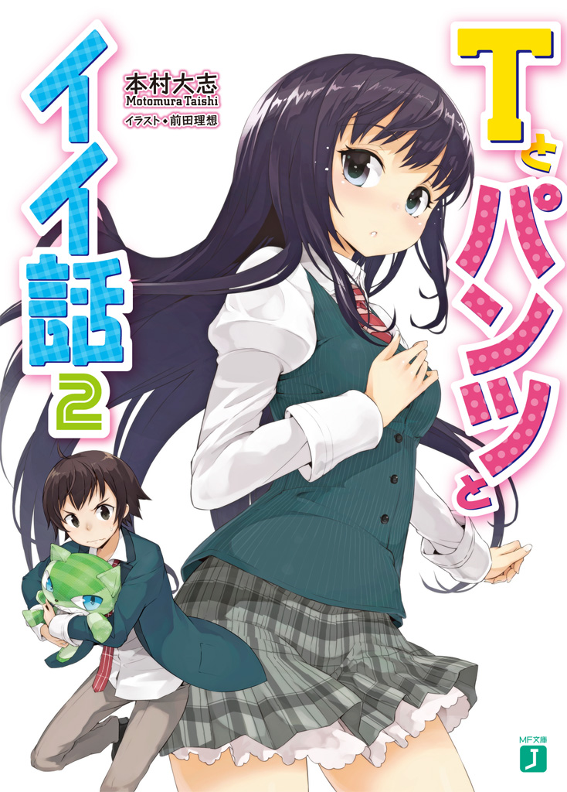
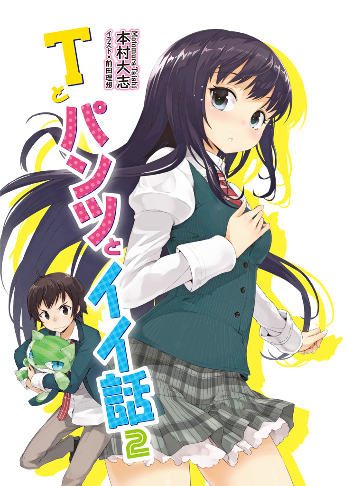
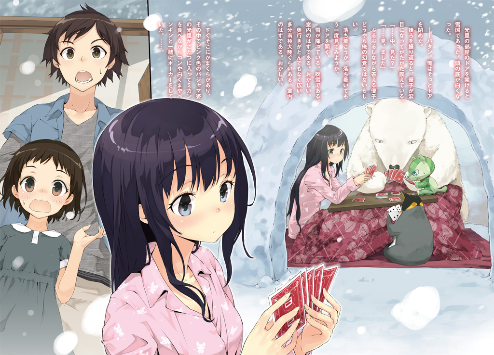
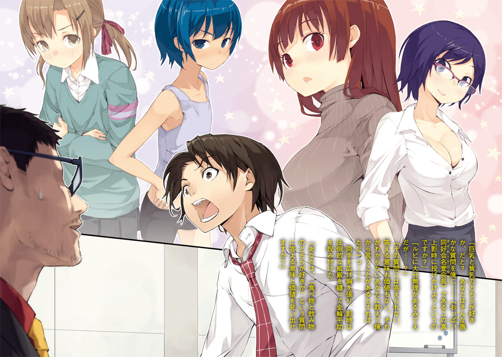

ＭＦ文庫Ｊ
Ｔとパンツとイイ話２
本村大志
口絵・本文イラスト●前田理想
編集●児玉拓也
第一話 夢のおっぱい
１．
優子の事件があってから二週間近くが過ぎ、五月も半ばに差し掛かっていた。
あれから光里は、露骨に俺を避けるようになっている。口しか利いてあげない、と言っていたが、実際は口すら利いてくれなくなってしまった。話しかけると逃げ出してしまうし、なにかどうしても話をしなければならない用事がある時は、逆再生語でまくし立てて、言い終わったらすぐに立ち去ってしまう。俺に意味が伝わっていないのでその行動は完全に無意味なのだが。
何を怒っているのか訊いても全く答えてくれない。どうすればまた今までの関係に戻れるのかわからず、俺は途方にくれるしかなかった。
そんなときのことだった──光里が風邪をひいて寝込んでいるという情報が入ったのは。
「何してんの陽兄」
光里の家の周辺をうろついていたら、妹の茜に掴まってしまった。部活帰りだったらしく、休日なのに制服姿だ。
茜は俺より二歳下の中学二年生で、見た目は......身内の欲目を含めても結構可愛い部類に入ると思う。俺の外見はよく「やさぐれた柴犬のよう」だと評されるが、俺がそうなら茜は「育ちの良い柴犬」だ。
「ひっかーのお見舞い？」
「あ、ああ......まあ、そんなとこかな......」
「ふーん。それでさっきから三十分もひっかーん家の周りを不審な動きで徘徊してたわけね」
「性格悪いなお前！」
ずっと見てやがったのかこの野郎！
「いや、こんくらいの恨み言は言いたくなるわよ」
と、茜は呆れ顔で溜息をついた。
「たまたま通りかかったら陽兄がひっかーん家の前でうろうろしてるでしょ？ おやおやお見舞いですか、でもいざとなったらちょっと躊躇っちゃってますか青春だねぇと微笑ましい気持ちで見てたら、陽兄いつまで経ってもチャイム押さないんだもん。どうしてくれんの？ 人がせっかく貴重な時間潰して思春期の兄の観察してんだから、もっと面白いことしなさいよ」
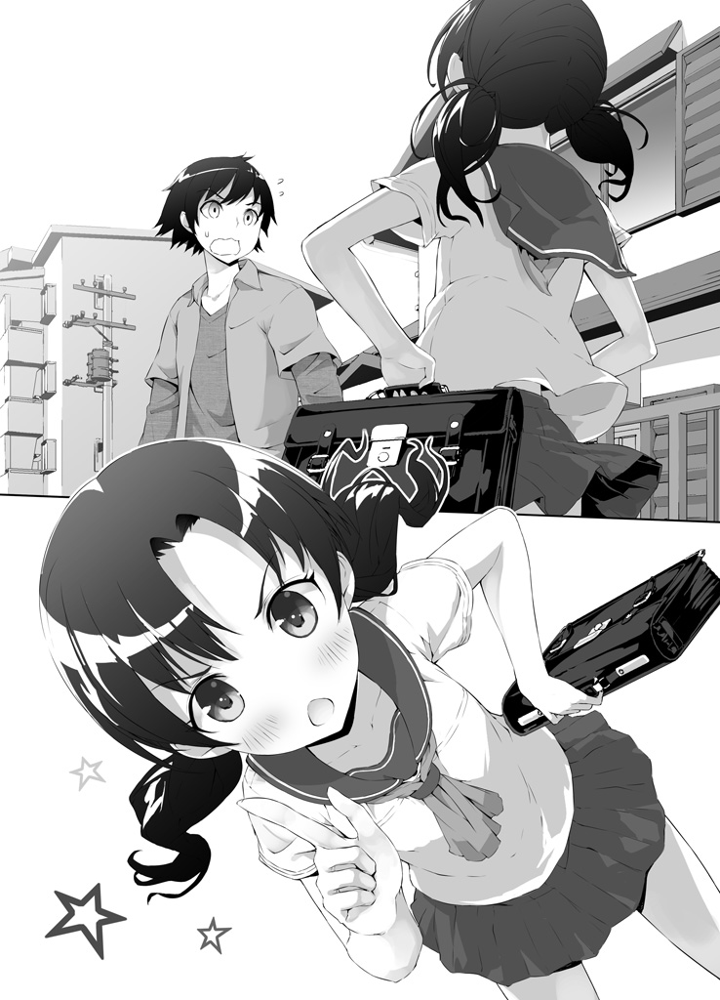
「ここまで理不尽な逆ギレは初めて見たぞ......」
しかし──実際茜の言うことは耳が痛い。男らしくないことは自分でもわかっている。だが、やはりどうしても踏ん切りがつかないのだ。
「......陽兄、最近ひっかーと全然話してなかったでしょ」
「う......」
「それでお見舞いも躊躇っちゃってるわけ？ 『会いたくない』とか言われるのが怖いから？」
「ぐっ......」
図星である。言葉にされると情けなさがさらに際立つ。
頭ではわかってる、こんなちっちゃいこと考えてないで、とっとと男らしく光里の家のドアを叩けばいい。こっちは善意でお見舞いに来ているのだ、きっと光里は追い返したりしない。
だけど、「きっと」を「絶対」に言い換えられない、それだけのことで、足が自分でも嫌になるくらい重くなる。
これほど長く光里が口を利いてくれなかったことは初めてだ。今まではけんかしたって翌日には光里の方から「猫の肉球がいかに機能的に優れているか」とか何とかわけのわからないことでごまかしながら話しかけてきてくれたというのに。
正直言って自分でも驚くくらい辛かった。光里が無邪気にどうでもいいことを話しかけてくる──そんな当たり前のことがどれだけ大切だったのか、たった二週間の喪失で十分すぎるほどに思い知った。
だから勇気が出ない......なんてのは、どう考えても言い訳だけど。
「はー情けない兄貴だこと。あたしなんか、陽兄がうろちょろしている間にこっそりひっかーん家に侵入して、今日はひっかーのおじいちゃんとおばあちゃんが留守だってことまで調べ上げたのに」
「スパイかお前は!?」
普通に不法侵入だろそれは！
「食いつくとこはそこじゃないでしょ。つまり今この家の中には、病気のひっかーと優子ちゃんしか居ないってことよ？」
「......それが何だってんだよ」
「弱った美少女と、弱った美少女の介抱に一生懸命な健気な美幼女しかいないのよ」
「だっ......だから何だ」
茜は肩を竦めて「やれやれ」と溜息をついた。
「だめだなーこの兄は。日和ってるわ。女心全然わかってないわ」
「は？」
「いい、陽兄。陽兄は『女の子が風邪をひいて学校を休む』というイベントがどれほどおいしいシチュエーションかをまるで理解できていないよ」
「イベントって......」
「ポイント」
茜は人差し指を立て、すまし顔で言った。
「女の子の家を訪ねる口実になる」
「身も蓋もないこと言っちゃったよ！」
「コレはもう言ったまんまね。『お見舞いに来た』って言えば、大体それだけで無条件に好感度アップよ。その言葉の裏側にどれほどの下心が隠されていようとね」
「ねえ、何でお前は俺が下心を持ってここに居ることを前提で話進めてんの？」
「ポイント」
続いて中指が立つ。
「風邪をひいた女の子は可愛い（外見編）」
「何だ外見編って。他にもあるのか」
「陽兄、今までにもひっかーが風邪ひいてるトコみたことあるでしょ？」
「そりゃ......あるけど」
光里と俺は幼いころから家族ぐるみの付き合いをしていた、っていうかほとんど家族のようなものだ。風邪っぴき状態くらいは何度も見たことある。......といっても、中学入ってからはあんまり見てないけど。光里は基本的に健康体なのだ。
「風邪ひいてるときの女の子ってさー、熱で顔が赤くなって目がうるうるして、普段より色っぽくなると思わない？」
「......ま、まあ」
確かに。不謹慎だからあんまり大声では言えないけど。
「加えて、ずっと寝てるわけだから基本パジャマよね。そうするとこう、色っぽい顔つきと無防備なパジャマ姿の相乗効果が生まれ、更にパジャマを見られることへの恥じらいまで上乗せされて何ともたまらない仕上がりに......」
「中二の男子かお前は！」
「中二の女子よあたしは！ 言っとくけどこれ一般論だから。女の子は男の子がどんな風に女の子を見てんのか知ってるんだから」
「え、そうなの？」
「そうよ。よく男が『女の子の何気ない仕草にきゅんとくる』とか言ってるけど、あーいうの大体狙ってやってるからね。全然何気なくないからね」
「......」
流石は影時をして「大人の階段を急いで上りすぎ」と言わしめるパンツを穿いているだけはある。大人だ。いや......これは茜がっていうより、今時の女子中学生がみんなこうなのかな？
「ポイント」
薬指追加。
「風邪をひいた女の子は可愛い（メンタル編）」
「これはもう今までの流れから想像がつくぜ。あれだろ、病気のときは精神的にも弱ってるから普段より女の子らしく見えるってことだろ。ちょっとした優しさでころっと落ちちゃう、みたいな」
「うわっ......そんな打算でお見舞いに来るとか、外道......」
「オメーが煽ったんだろうがァ！」
「これでわかったでしょ？ お見舞いというイベントにどれだけおいしい要素が詰め込まれているのか」
「いや、わかったけどよ......正直言って今の三つは、別に改めて言われるまでもなくわかってたことだぞ」
わかっていたからと言ってそれを期待しているわけではないと注釈しておこう。俺が来たのは飽くまで光里が心配だったからである。下心はない。
「今更改めて言われるまでもないことを並べてどや顔されてもなぁ」
「甘いわね陽兄......ここまではただの前置きよ。あたしが新たなる知見として陽兄に本当に伝えたかったのは、ここから先」
茜はニヤリと口の端を上げた。
「今までのは男子の視点。だけど本当に重要なのは、お見舞いをされる側、女子の視点なのよ」
「女子の視点......だと？」
茜はずいと顔を近づけてきて、人差し指で俺の鼻の頭を押さえた。
「いい？ さっきあたしが挙げ連ねた男子の下心の数々......そんなもん、女子だってとっくに気付いてんのよ。気付いた上で誘ってるの。風邪というエサにかかった獲物を自宅という処刑場に誘き寄せてパジャマという鎧を纏い潤んだ瞳の上目遣いによって視殺するのよ！」
「後半比喩が効きすぎて何言ってんのかわかんねーよ」
「要するに、女子の方も準備ＯＫってこと」
「お前それだと、まるで男は下心満載でお見舞い行ってもいいみたいに聞こえるけど」
「そう言ってんのよ。陽兄はわかってないみたいだけど、女の子って意外に男の下心に寛容なんだからね？」
「ま、マジでか？ 『うわこいつ私がこんなに辛い思いしてるのにいやらしいことばっか考えやがって』みたいに思ったりしねーの？」
「そりゃそれだけだったら嫌だけど、心配にプラスして『ひょっとしたらパジャマとか見れちゃうかもしれない』くらいの下心なら少なくともあたしは許容するわよ。だって、基本的に下心って好意の表れでしょ？ 好きだってことを伝えられて嫌な気持ちになる子なんていないよ」
「そんなもんなのか......」
......そう言えば、俺が光里のパンツをこっそりくすねて持ち帰ろうとしたときも（これは光里の誤解であるが）光里はそれを許容できると言っていた。なるほど、あれはそういうことだったのか......と納得しかけて、はっと茜の話が当たり前のように妙な前提を置いていることに気付いた。
「ちょ、ちょっと待て！ 何かお前の言い方だと俺が光里のこと好きみたいじゃねえか！」
「いや好きでしょ」
あっさり断言される。瞬間的にかっと顔が熱くなった。
「ち、違う！」
「ああそっかそっか、『好き』なんて言葉じゃ俺の光里への想いは表しきれないぜ的なことが言いたいわけか。ごちそうさま」
「だから違うっつってんだろうが！ お前だってわかってんだろ、俺達にとって光里は家族みたいなもんで......」
「陽兄さぁ、それまだ言ってんの？ つーか本気で言ってんの？」
ジト目で見つめてくる茜。俺はたじろぎながらも頷いた。
「ったく、そんなことだからいつまで経っても......まあいいわ。陽兄はいずれ自分の愚かさを思い知ることになるだろうし」
「怖いこと言うなよ......」
脅し紛いの占い師みたいだ。
「あたしが言いたいのは、ひっかーだって陽兄が来てくれるのを期待してるに決まってるってこと。何があったか知らないけど、今陽兄とひっかー気まずいんでしょ？ だったらそれを解消するいい機会だって、向こうも思ってるに違いないって」
「そうかなぁ？」
「そうよ。......いや、ちょっと待って」
茜は顎に手を当てて何やら思案顔になった。しばらくして閃いたように顔を上げ、
「......ひょっとしたら、この風邪自体がそのために仕組まれたものだったのかも」
「何？」
「つまりこういうことよ。ひっかーは陽兄と仲直りしたいけど、意地になっちゃってきっかけを失ってた。そこできっかけを作ろうと思って、わざと風邪をひいて陽兄がお見舞いに来るように仕向けた」
「無理があるだろその推理！」
どんな意地の張り方だ。そこまでするんだったら素直に話しかけてくれればいいのに。
「努力の方向音痴にもほどがあるっての！ 光里がそんなバカなこと──」
「しないって断言できる？ 相手はあのひっかーだよ？」
「......」
そう、言われると。
いつも俺達の想像を軽々と跨いでいく光里のことである。ひょっとしたらわざと風邪ひくくらいのことはやりかねない気がしてきた。
「『これも陽ちゃんと仲直りするため』と歯を食いしばって滝に打たれるひっかーの姿が目に浮かぶわ......」
「た......確かにその光景にあんまり違和感を覚えねえな......」
恐ろしいことだが。
「だから、ホラ！」
と茜は俺の背中を叩いて光里の家のドアの前に押しやった。
「今この家の中で、陽兄と仲直りするために滝行して頑張って風邪をひこうとしちゃうような、意地っ張りで天然でドジで健気で可愛らしいドン引きな女の子がパジャマ姿で陽兄を待ってるんだよ。男として行ってやんなくてどうすんの」
「ドン引き!? お前今光里のことドン引きって言ったか!?」
いや......確かにそこまでしてたら健気とかドジを通り越してちょっと引くレベルだけど、それはまだ俺達の想像に過ぎないじゃないか！
「だーもー、いいからとっとと行きなさいよ！」
しびれを切らしたように茜が叫んだ。
「陽兄とひっかーが気まずいと、何かあたしまで調子狂うの！ 早く仲直りしなさい！ そのために使えるチャンスが目の前にあるのに、びびってんじゃないわよ！」
「茜......」
俺と光里を気遣ってくれたのか。鼻息を荒くする茜の姿に励まされ、俺は深く頷いて宇月家の玄関のドアに手を伸ばした。
２．
「光里お姉ちゃん、タオル新しいの持ってきたよ」
「......ありがとう優ちゃん」
光里は自室のベッドに横たわって、甲斐甲斐しく世話を焼いてくれる健気な優子の姿にほっこりしていた。光里の祖父と祖母は今日、結婚記念日を祝して旅行に出かけている。光里が体調を崩したことを知って旅行を取りやめようとしたが、結婚記念日を二人でお祝いすることは祖父母が結婚してから毎年欠かさずに行ってきたことであり、光里の風邪もそこまで深刻なものではなかったから、光里は中止にしないで欲しいと訴えたのだ。加えて優子が「自分がお姉ちゃんを看病する」といじらしいことを言ったので、祖父母は光里達の気持ちを汲んで後ろ髪を引かれながらも今朝早くに家を出て行った。
優子は言葉通り、せっかくの休日をつぶして光里のためにせかせか動き回っている。ありがたさと申し訳なさと可愛さで光里は優子を抱き締めたくてたまらなかったが、風邪が移ってしまうと困るので必死に自分と闘っていた。
優子が光里の家にやってきて家の中が明るくなったのは間違いない。優子の方も祖父や祖母によく懐き、幸せそうにしてくれている。光里への呼称が「ママ」から「光里お姉ちゃん」に変わったのは、その方が自然だから仕方ないのかもしれないが、実は光里には少し寂しいことだった。
「他に何か欲しいものない？ 優子にできることがあったら何でも言ってね」
「本当にありがとね、優ちゃん。でも大丈夫だから。そんなに頑張らなくてもいいんだよ、元々私の自業自得なんだし」
自業自得という言葉に反応して、優子は不思議そうに首を傾げた。
「そう言えば光里お姉ちゃん、昨日はどうして急に和田浜に出かけて海に飛び込んで三時間もバタフライで泳いだりしたの？ まだ水冷たかったよね？」
「......優ちゃん、女の子にはね、やらなきゃいけないときがあるんだよ」
言えない。
陽太と早く仲直りしたいのに意地を張っちゃってうまくいかないから何とかきっかけを作ろうと思って「そうだ風邪をひけばお見舞いに来てくれるはず」と考えて自主的に風邪をひこうとしました、なんて。
「そ、そうなの？」
「そうなの。それはいつなんだ、とか、何をやらなきゃいけないんだ、とかはあんまり考えてないからわからないんだけど......でも、一つだけ確かなことがある」
「確かなことって？」
「いい子は絶対に真似しちゃダメ」
「あれ!? ひ、光里お姉ちゃん、じゃあいい子はやらなきゃいけないときになったらどうすればいいの？」
「いい子にしてればやらなきゃいけないときなんて来ないよ」
「ええ!?」
優子が戸惑った顔になる。困ってる優ちゃんも可愛い。
「ああ......ごめんね優ちゃん。今私頭がぼーっとしてわけわからないこと言ってるかも」
「う、うん......（でもあんまり普段と変わってない気もするけど）」
「あー、心の声が漏れそう......」
「そんな風に漏れそうってわかるものなのかな、心の声って......？」
「優ちゃんは可愛いなぁ......」
心の声を口に出すと、優子は照れて俯いてしまった。その様子がまた可愛い。
「目に入れたいくらい可愛い。食べちゃっても痛くない」
「言葉が交ざっちゃってるよ、光里お姉ちゃん」
「目に入れたいくらい食べちゃいたい......」
「猟奇的な部分しか残ってないよ、光里お姉ちゃん」
優子は小学校一年生なのに語彙が豊富である。光里達と出会ったときには記憶を失っていて実年齢より幼く思えたけれど、本当はとても頭のいい子なのだ。
「......優ちゃん、お世話してくれるのはとっても嬉しいけど、でももう私の部屋から出てた方がいいよ。風邪が移っちゃうもの」
「でも......」
「私のせいで優ちゃんが風邪ひいちゃったら、おじいちゃんとおばあちゃんに合わせる顔がないよ。だからお願い」
光里が真面目な顔をすると、優子は少し寂しそうに「わかった」と頷いて部屋を出て行った。「隣にいるから、何かあったらすぐ呼んでね」と言い残してドアを閉める。
出て行ってくれてよかった。このままでは理性を抑えきれなくなっていたかもしれない。
「......コンちゃんも、外で遊んできていいんだよ」
と、光里は枕元で丸くなっているコンに呼びかけた。しかしコンは大きなあくびをして、
「動くのめんどくせーからいい」
「でも、私のそばに居たら風邪が......」
「ぬいぐるみは風邪なんかひかねーよ」
「コンちゃん......ありがとう」
コンは光里が寂しくないように、と敢えて残ってくれたのだ。素直じゃないコンなりの配慮である。なんて愛おしい。
光里は「おいで」と毛布をめくって、入ってきたコンを抱き締めた。抱き心地はふかふかである。それに──ぬいぐるみであるはずのコンはなぜかじわりと温かく、光里はなんとなくこたつの中にいる気分を思い出していた。心地よくて眠くなる。
──コンちゃんは温かいな。冬になったら、一緒にこたつに入ってミカン食べたいな......あ、かまくらもいいかも......雪が降ったら楽しいだろうなぁ......白くまとかペンギンも一緒にポーカーを......吹雪の中で......かまくらにこたつを入れて......外は氷河期だけど......私達はあったかくて.........最強で.........トナカイがサンタさんでサッカーを............前足......使ったらハンド...............紅白見ようか..................それとも『絶対に笑ってはいけない南極大陸二十四時』にしようか..................
凄まじくカオスになりそうな夢に誘われ、光里はいつしか眠りに落ちた。
３．
チャイムを押すと優子が出て来た。優子は俺を見て屈託のない笑顔を浮かべる。
「陽太お兄ちゃん！ 光里お姉ちゃんのお見舞いに来てくれたの？」
「あ、ああ。今大丈夫か？」
「うん！ きっとお姉ちゃんも喜ぶよ！」
優子が出て来るということは、おじいさんとおばあさんがいないというのは本当らしい。お前も来るかと尋ねようとして振り返ると、茜はもういなくなっていた。何なんだあいつは一体。幽霊か。
優子に案内され、二階にある光里の部屋に向かう......まあ小さいころから何度も来ているので、案内されるまでもなく知ってるんだけど。
「それにしても、光里の奴どうして風邪ひいたりしたんだ？ 体、丈夫なはずなのに」
「......女の子には、やらなきゃいけないときがあるんだって」
「......ほ、ほう」
「でもいい子は真似しちゃダメなんだって」
「......」
なるほど。はいはいなるほどね。大体もう全部わかっちゃったよ。
あいつはバカか。
どんだけ意地っ張りなんだ。
「......はぁ」
溜息をつきながらも、俺の心には余裕が生まれていた。
なんだ。光里も仲直りしたいと思っていたのか──そう思っていてくれたのか。
俺もバカだな。光里がそんなに思い詰めるまで及び腰になってるなんて。
光里が無茶をしてまで作ってくれた機会だ。今日はきちんと話をして、ちゃんとわだかまりをなくして、明日からいつもみたいに──家族みたいに、気軽に話せるようになろう。
そう心に決めて俺は、この向こうにパジャマ姿で頬を赤くし目を潤ませた光里が待っていることを確信し、ドアノブを回した──
光里の部屋のドアを開けると雪国であった。頭の底が白くなった。
──パタン。俺はそっとドアを閉めた。
後ろを振り返ると、優子が涙目になってがたがた震えている。
「......中、見た？」
「......見、ました」
ぷるぷるしながら答える優子。どうやら俺の幻覚ではないらしい。
落ち着こうか。落ち着いてもう一度見てみようか。
ドアを開く。
雪が降っている。吹雪である。室内のはずである。おかしい。
奥行きがとんでもなく広い。多分南極大陸ぐらいある。室内のはずである。おかしい。
吹雪の中、トナカイがサンタさんをボールにしてサッカーをしている。おかしい。
しかも後ろ足で二足歩行しながらである。おかしい。
すぐそこにかまくらがあり、その中でピンク色のパジャマ姿の光里がこたつに入ってミカンを食べながらコンや白くまやペンギンと一緒にポーカーをしていた。......。
「そういや光里ってポーカーすげー強いんだよなー、表情から感情が読めねーから。いやーでも流石に白くまとペンギンも表情がよくわかんねえな......はは、やっぱりコンのボロ負けか。あいつわかりやすいもんなぁ」
「普通に解説しないで陽太お兄ちゃん！ 優子を一人にしないで！」
優子が縋り付いてきて俺は正気を取り戻した。いかんいかん。飲まれるところだった。
「こ、これ......何がどうなってんだ......」
俺は確かに光里の部屋のドアを開けたはずである。それがどうして南極大陸（仮）に繋がっているのだ。いつから光里の部屋のドアはどこでもドアになった。
まさかあいつ、風邪をひくために部屋を南極大陸（仮）にリフォームしたのだろうか。でも南極って寒すぎてウイルスが生息できないから絶対風邪引かないって聞いたことが......いや待て待て、現実の雑学と交ぜるな。ここはただの南極大陸じゃない。明らかに現実感のない謎アニマルがいる。サンタさんもいる。子どもに夢を届けるサンタさんが子どもが見たら泣きわめくに違いない目に遭っている（実際優子は泣いた）。
あまりにも荒唐無稽だ──夢でも見ている気になってくる。
「ひ......光里！ オイ光里！」
すぐそこに見えているかまくらの光里に向かって俺は叫んだ。だが光里は全く反応しない。無視しているのではなく気付いていないようだ。近づこうとしても、なにやら見えない壁のようなものに阻まれて部屋の中に入ることができない。
「光里！ 光里ーっ！ ......ああもう、どうすりゃいいんだ......！」
これでは手の出しようがない。思念力でなんとかしようにも、コンがあっち側にいるんんじゃどうしようも......って、そうだ。
これは明らかに思念糸の絡んだ出来事である。となったらまずは専門家に伺いを立てるべきだろう。俺は携帯から天川に電話をかけようと、ポケットに手を突っ込んだ。
「あれ？」
携帯がない。鞄をひっくり返して探しても見つからない。
「くそ、まさか家に忘れてきたのか......？ ああもう！」
この家の電話を借りようかとも思ったが、考えてみたら俺は天川の番号を覚えていない。登録してある携帯を取りに戻るしかなさそうだ。
「悪い優子、ちょっと家に携帯取りに行ってくる！ すぐ戻ってくるから待っててくれ！」
「う、うんわかった！ 気をつけてねお兄ちゃん！」
「おう！」
不安げな様子の優子に見送られ、俺は急いで自宅へと走った。
４．
光里は目を覚ました。
腕の中で寝ているコンを撫でて、上半身を起こし、部屋を見回す。
ぬいぐるみがいっぱいのいつもの部屋だ。
「......？」
何だか頭の中がごちゃごちゃする。変な夢を見ていた気がするけど......思い出せない。
「喉渇いたな......」
コンを起こさないように起き上がり、光里はいつもと何ら変わりないドアを開けて部屋を出た。
ぽーっとする頭で階段を下りる。どうやら少し熱が上がってしまったようだ。キッチンで冷蔵庫を開けてスポーツドリンクを取り出し、コップに注いで飲んでいると、バタンと玄関でドアが閉まる音がした。とたとたと小さな足音が近づいてくる。
リビングのドアが開いて、優子と目が合った。
その瞬間、優子はぶわっと涙を流して光里に飛びついた。
「光里おねえちゃ～ん！」
「わっ......ど、どうしたの優ちゃん」
「よ、よかった......もうどうしようかと思ったよ～！」
「優ちゃん......そんなに泣かないで。あんまり抱きつかれると私、勢い余って優ちゃんのこと吸収しちゃうかもしれない」
「吸収!?」
それは嫌だったのか、優子は慌てて飛び退いた。ちょっと残念。
「優ちゃん、一体何があったの？」
「あ、あのね......えっと、陽太お兄ちゃんがお見舞いに来てくれて......」
どきんと心臓が高鳴った。まさか、せっかく陽太が来てくれたのに眠っていて気付かなかったのだろうか......？ 早鐘を打つ胸を押さえ、「それで？」と続きを促す。
「光里お姉ちゃんの部屋に上がってもらおうと思って、ドアを開けたら......お姉ちゃんの部屋、雪国みたいになってて......」
「......ん？」
「すっごく広くて、すっごく寒くて、トナカイさんがサンタさんでサッカーしてて、お姉ちゃんはコンちゃんと白くまさんとペンギンさんと一緒にかまくらの中でこたつに入ってトランプしてて......」
「......優ちゃん」
光里は、ぽんと優しく優子の肩に手を置いた。
「夢だよそれ」
「え!? ち、違うよ夢じゃないよ！ 陽太お兄ちゃんだって一緒に見たもん！」
「違う違う」
光里はふるふると首を振った。
「優ちゃんのじゃなくて私の夢だよ」
「あ、そ、そっか。......ん？ あれ？」
優子は首を傾げる。
「つまり優ちゃんは私の夢を見たんだよ」
「え、でも......え？」
「これが世に言う正夢だね」
「......？？？」
注‥光里は熱に浮かされています。
「いい夢だったなぁ。......でも、私の夢のなかでは、陽ちゃんはお見舞いに来てくれなかったよ」
「ひ、光里お姉ちゃん、陽太お兄ちゃんだったらすぐ戻ってくるって......あ、でも何か遅れてるみたいなんだけど......」
そのとき、チャイムが鳴った。優子はぱっと笑顔になって玄関に走り出す。
「きっとお兄ちゃんだよ！ 待ってて、今連れてくるから！」
数十秒後、戻ってきた優子と一緒にいたのは、陽太──ではなく、曽根毬子だった。
「そまりちゃん！」
「やっほー、光里。お見舞いに来たよー」
部活帰りのジャージ姿で、そまりはひらひらと手を振る。
「あんたが風邪ひくなんて珍しいからね。はいこれお土産」
そまりが差し出したスーパーの袋の中には、アイスが三つ入っていた──それもハーゲンダッツだ。袋を覗き込んだ優子が、思わずといった様子で「高いやつだ！」と零し、そまりは決まり悪そうに頬を掻いた。
「ちゃんと優子ちゃんの分もあるからね。一緒に食べよ？」
光里の部屋で三人一緒にアイスを食べた。冷たいバニラの香りが火照った体に染みこむ。
「おいしい！ そまりお姉ちゃん、ありがとう！」
「いやいや、これくらいどーってことないわよ。で、調子はどうなの光里？」
「あ、うん......まだちょっと熱があるけど、多分月曜日からは学校行けると思う」
「そ。ならよかった」
そまりは微笑み、そして「こほん」とわざとらしく咳払いをした。話題を変える合図だ。
「ところで光里」
「はい」
「あんた最近様子おかしくない？」
「様子がおかしい、とは、果たしてその真意や如何に？」
「だからそういうとこよ。まあ、多少のおかしさはあんたの平常運転だから見逃してたんだけど──」
む。何気に失礼な発言だ。
「でも、日渡に対する態度は度が過ぎて変よ。あれじゃ可哀想でしょ」
「......流石、そまりちゃんだね」
光里は溜息をついて俯いた。
「やっぱりそまりちゃんにはわかっちゃうんだ」
「いや私『には』じゃないから。クラス中みんな気付いているから」
「え？」
「あんな大声でオリジナル言語喋ってたらそりゃ注目されるわよ。......っていうかあんた、まさか気付かれてないと思ってたわけ？」
「そ、そんな......私が十年かけて会得した逆再生語を、クラスのみんなはもう解読してしまったというの......？」
「解読はできてないわよ！ っていうか解読できないからこそみんな不審がってるの！ 最近あんた割とシリアスに宇宙人だと思われてるからね!?」
まあそれは置いといて、とそまりは続ける。
「......あんた、日渡と何かあったの？」
「......」
......言えない。思い出しただけで熱が上がっちゃいそう。
「んー」
そまりは真っ赤になった光里の顔をじろじろと見つめてくる。
「その顔は、怒り二恥じらい八ってとこね。怒って口利かないっていうより、恥ずかしくて口利けないって感じなわけか」
何でわかってしまうのだろう。きっと何を言ってもごまかせない、と思って光里は黙っていた。
「しっかし、あんたがそんなに恥ずかしがってるのに、日渡の方は至ってフツーにしてるわよね」
そまりの言葉がおそらく意図せずに核心を突き、光里はきゅっと唇を強く結んだ。
──そうだ。私がこんなに恥ずかしいのに、陽ちゃんと来たら──。
「あいつ鈍いからなー。あんたが意地張る気持ちもわからないでもないけど、......でもさ光里、あっちはあんたと仲直りしたくてあいつなりに一生懸命なんだから、口利いてあげない理由ぐらいは教えてやりなさいよ。そうしないといつまでもこのままよ？ あんただって嫌でしょ、そんなの」
「そんなの──」
わかってる。だから昨日、光里は風邪をひいたのだ。
「ほら、日渡きっと今日あんたのお見舞いに来るから、そんときはちょっと素直になりなさいよ。不謹慎な言い方だけど、ある意味チャンスじゃない、風邪」
「うん......」
それもわかってる。......だが、流石に真実は話せない。恥ずかしい。不謹慎だし。
「......ん？ そういや日渡まだ来てないの？」
そまりの問いに、なぜか慌てた様子で優子が答える。
「えっとね。陽太お兄ちゃんは、一回来てくれたんだけど、でもそのときは光里お姉ちゃんの部屋に......その、入れなくて、携帯忘れちゃったから取ってくるって言って帰っちゃったの。すぐに戻ってくるって言ったんだけど、まだ来てなくて......」
「部屋に入れなかったって......何よあいつ、どんだけチキンなの」
そまりは溜息をつき、「それってどれくらい前の話？」と優子に尋ねた。
「えっと......二十分くらい前」
「ふーん。じゃあもう戻ってきてもおかしくないか......」
そまりはニヤリと黒い笑みを浮かべた。
「な、何そまりちゃん」
「んー？ いや、ちょっとね。ところで光里、これからちょっと優子ちゃん借りていい？」
「え？」
優子がぽかんとそまりを見上げた。
「いやー、何か急に優子ちゃんと一緒に遊びたくなってさぁ。外に遊びに行こうよ。ずっとここにいたら光里の風邪移っちゃうでしょ？」
「ほんと？ 遊んでくれるの？ あ、でも......」
一瞬目を輝かせたものの、優子はすぐに光里の方を見て申し訳なさそうな顔になる。
「遊んでくれる」という誘惑に負けそうになる子どもっぽさも、その後すぐに光里のことを考えて自制する健気さも、どっちの反応も可愛くて可愛くてたまらない。光里はとろけそうになった。
「いいよいいよ優ちゃん、遊んでおいで。私は大丈夫だから」
「さーさー本人もそう言ってることだし、行こっ優子ちゃん」
「あ......あの......」
「大丈夫だって。すぐに陽太お兄ちゃんが来てくれるから。......ね」
最後の「ね」に合わせて、そまりは光里を見ながらウインクをした。そしてそまりは戸惑う優子を半ば強引に連れて、部屋を出て行った。
すぐに陽太が来てくれる。
そまりの最後の言葉を反芻しながら、光里はベッドに潜った。そまりがいる間ぬいぐるみのふりをして動かなかったコンを再びベッドの中に抱き入れて、光里は目を閉じた。
──陽ちゃんがお見舞いに来てくれる。そしたら、今度はちゃんと話さなきゃ......話して、私がどうして怒ってるのか伝えて、聞かなきゃ、逃げずに......ああ、そっか、私逃げてたんだ。私の気持ちを伝えるのも、陽ちゃんの気持ちを聞くのも、どっちも怖くて......今でも怖い......伝えたいけど伝えたくない......聞きたいけど聞きたくない......このジレンマをどうすれば......。
......。
そうだ......！
光里は謎の天啓を得て眠りに落ちた。
５．
「や、やっと戻って来れた......！」
家に帰って携帯を探したものの見つからず結局影時の家を訪ねて影時から天川に連絡してもらう、という手順を踏んだせいで、光里の家に戻ってくるのに三十分以上かかってしまった。
「早く来てくれ！ 光里が大変なんだ！」
チャイムを押しても誰も出なかったので申し訳ないが勝手に上がらせてもらった。神妙な顔でついてくる天川と、鼻息荒くきょろきょろする影時。
「いやーまさか俺が宇月さんの家に入れる日が来るとは思わなかったぞ。生きていてよかったなぁ。今日は宇月さんの空気を可能な限り吸い込んでいくとしよう」
「やめろ」
「すぅ～......はぁ～......ああ、俺の体内に空気中に溶けていた小さな宇月さんがいっぱい入り込んでくる......」
「だからやめろっつってんだろ！ ふざけてる場合じゃねえんだって！」
「ん？ これは......」
ふとリビングに目を向けた天川が、テーブルの上に置いてあった一枚の紙を手に取った。
書き置きだった。「優子ちゃんと一緒に遊びに行ってきます。曽根毬子」と記してある。
「ど、どういうことだこれ......？」
俺が天川達と合流している間に、そまりが来て、そして優子を連れて行ってしまったということだろうか。俺が待たせたのが悪かったのかもしれないが......しかし、優子があの状態の光里を放って遊びについて行くとは思えない。というか、そまりはお見舞いに来たんだったら光里の部屋を見たんじゃないだろうか？ その上で「じゃあ遊びに行こう」なんて現実逃避的な選択をするような奴だとも思えないけど......。そしてこの書き置きは誰に向けたものだ？ ......俺、か？
？？ 状況がさっぱり掴めん。
「日渡君。今宇月さんの部屋は南極大陸（仮）になっているんだよね？」
「あ、ああ」
「でもこの書き置きからはそんな非日常はさっぱり窺えないんだけど」
「何だよ、俺が見間違えてたって言いたいのか？ そんなはず......」
「いや、そうじゃなくて......まあいいや、とにかく光里ちゃんの部屋に行ってみよう」
天川に促され、俺達は二階の光里の部屋に向かった。
「おお流石宇月さんの部屋だ、ドアからも既に可愛らしい乙女の香りが漂ってくるな。それにしても、本当にこの中が南極大陸（仮）になっているのか？」
「ああ。俺も信じられなくて二度見したんだが、間違いなかった。どうだ天川、何か感じるか？」
「んー......」
天川は難しい顔をしている。
「中から微かに思念力の気配がする。これはコンの思念力だ」
「コン？ 南極大陸（仮）はコンの仕業なのか？」
でも、あいつの思念力は「物体同士を混ぜ合わせること」だ。どうやって光里の部屋を丸ごと吹雪にできるんだ？ 第一、俺と思念契約を結んだコンはもう思念力を仕えないはずだ。
「いや、まだわからない。今のコンはただの喋るぬいぐるみのはずだけど......とにかく中を見てみないとわからないな」
天川の言葉を受け、俺達は顔を見合わせて頷き合った。俺は一歩進んでドアノブに手をかける。
「よし、開くぞ......一、二の、三！」
バン！ と勢いを込めてドアを開け放つと──
ニュース番組のセットがあった。
「......は？」
湾曲した木製長机の外側に、なぜかスーツ姿の光里（可愛い）とコンがこちらを向いて姿勢良く座っている。内装は全体的に黒と木の自然な色を基調としたシックな雰囲気で、どこからか流れてくるＢＧＭもそれっぽい落ち着いた感じの曲だ。光里とコンの後ろには、ニュース番組らしく大きなスクリーンが備え付けてある。
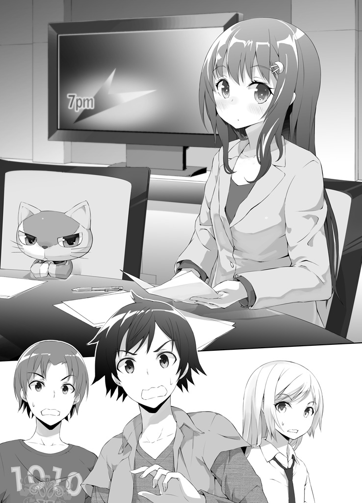
「日渡君。これが南極かい？」
「いや、さっきはこんなんじゃなかったんだ......つーか、これでも十分おかしいだろ！ 何で光里の部屋がニュース番組のセットになってんだよ！ 広さも明らかに広すぎるし！」
どうやら今回はドアに見えない壁はなく、普通に部屋の中に入れるようだ。入って辺りを確認する。
確かにニュース番組のセットにしか見えない......が、しかしだとしたらあるはずの撮影・録音機材は一切ない。俺達が普段テレビ画面から見える範囲のものしかここには存在しないようだ。うろたえる俺達を尻目に、ＢＧＭが急に小さくなった。どうやら番組（？）が始まるらしい。光里とコンはまじめくさった表情で優雅に一礼をして、
「こんばんは。七時のクイズです」
「クイズ番組かよ！」
なんだその変化球！ それに「七時のクイズ」って、そんな時間帯ごとに何度もクイズやるつもりなの!?
「この番組は、お越しいただいたゲストの方に到底解けないような無理難題をふっかけて彼らがもがきながら不正解し罰ゲームに処されていく様を斜め上から楽しむクイズバラエティです」
「趣味悪っ！」
淡々と何言ってんだ光里のやつ!?
「本日のゲストは、こちらの方々です」
光里がそう言った瞬間、俺達の頭上からスポットライトが降り注いだ。
「なんだこりゃ......！」
「これからこの三名のゲストに協力してクイズに臨んでいただきます。私の出す時間制限付きの問題に、わかった方から早押しで解答してください。どなたか一人でも正解すればその問題はクリア。次の問題に進みます」
「お、おい光里......！」
「ただし、一回でもボタンを押して解答を間違えてしまった場合には、その方はもうそれ以降の問題に解答することはできません。失格です。三名とも失格になってしまうとゲームオーバーですから、気をつけてくださいね」
「『気をつけてくださいね』じゃなくて！ 光里、どうしちまったんだよ！ 答えてくれよ、なあ！」
「無駄だ、日渡君」
と、天川が俺の肩を掴んだ。
「今の光里ちゃんには何を言っても通じない」
何でそんなことがわかる、と俺が尋ねる前に、天川は驚くべきことを口にした。
「ここは光里ちゃんの夢の中だ」
「......は、はあ!? 夢!?」
天川は頷く。
「これは僕の推測だが、おそらく間違いない。多分光里ちゃんは、コンを抱いたまま眠りに落ちた。そして何かの弾みでコンの思念力が発動して、『光里ちゃんの夢』と『現実』とを混ぜ合わせてしまったんだよ」
「ちょ、待て待て待て！ 無理があるだろそれは！ 夢と現実を混ぜるなんて、そんなことできるわけが──」
「ないと言い切れるかい？ コンの思念力で混ぜることができるのは形あるものだけではないと、君もわかっているはずだ」
「......」
確かにコンの思念力は人間の「想い」みたいな形のないものにも有効だった。優子の事件のときにはその力で光里を──あ、いや、この先を思い出すのはやめておこう。
「いや、それにしてもコンは俺と思念契約してるんだぜ？ 今は単体じゃ思念力使えないはずじゃなかったのかよ？」
「それは僕にも不思議なんだけど......ただ、思念糸は夢を通じて絡みつくことが多いんだ。ほら、君のときも真上君のときも、思念塊とのファーストコンタクトは夢の中だっただろう？」
「あ、そう言えば」
コンが俺の夢に出て来たのが最初の出会いだった。
「だから、密着状態で夢を見ていた光里ちゃんに思念糸が絡まってイレギュラーが起きたのかもしれない。確証はないけどね」
「そう、なのか......」
......ん？ でも、思念契約を結んだ思念塊って、一本命綱みたいな思念糸が契約主と繋がっているだけなんじゃないっけ？ そんなんで他の人間に思念糸が絡む余地があるとは思えないんだけど......。
まあ考えてもしょうがない。とにかく今重要なのは、
「天川、どうやったら光里を元に戻せるんだ？」
「元に戻すも何も」
天川は肩を竦める。
「光里ちゃんが目を覚ませばいい」
「......へ？」
「夢なんだから起きれば覚める。それだけだ」
......。そんな簡単なことでいいのか。
「じゃ、じゃあ今大声で光里に『起きろーっ』って言えばそれで全部解決だな！ よし──」
「いや、それはダメだ」
思いっきり息を吸い込んだところで天川に後ろ襟を引っ張られ、俺は咳き込んだ。
「ぶふっ！ 何すんだこの野郎！」
「日渡君、ここは光里ちゃんの言う通りクイズ番組に参加しよう。光里ちゃんが自然に目を覚ますのを待つべきだ」
「な......何でだ？ まさか──」
夢の中から無理に起こすと、光里の体に何か悪影響が......？
天川は神妙に頷いた。
「そっちの方が面白いからだ」
忘れてた。こいつ性格悪いんだった。
「僕は君達が罰ゲームにもがき苦しむ様を見て楽しみたいんだ」
「ふざけんなよコラァ！ つーかそのときはお前も道連れなんだぞ！」
「僕は君達を傷つけるためなら自分が傷つくこともいとわない」
「どーいう性癖!? ＳとＭが同居してんじゃねえか！」
「ちなみに」
と光里の透き通った声が響く。
「罰ゲームは『全身が下半身になる』です」
「気持ち悪っ！ いや......え!? 何それ!? どうなるの!?」
「普段上半身の部分が下半身に変わります。腰を中心に下半身と下半身が線対称にくっついた状態になり、シルエットが『Ｘ』になります」
「うわあぁぁああぁぁああぁあ！」
い......嫌だ！ 思っていたよりずっと嫌だ！
「Ｔの次はＸか。よかったね日渡君、この調子でいけば二十六巻分のタイトルには困らないよ」
「いいことがあるかぁああぁあ！ Ｔはまだ人間として有り得る形だったけどお前今回のＸはもうただのバケモンだろ！ 体のほとんどが足じゃねえか！ 大体涼しい顔してっけど俺がＸになったらお前も影時もＸだからな！ 三人そろってトリプルＸだからな！」
「足の長さからすると君だけ小文字だね」
「ちくしょー！」
否定できない！
「シルエットは股の開き具合によってお好みで『Ｙ』『Ｉ』『Ｔ』などに変更することも可能です」
「どれも嫌だわ！」
『Ｔ』になるには上の下半身（何だこの言葉）は一八〇度開脚しなきゃいけない。ハードルが高すぎる。同じタイトルを続行することの難しさを何だかいろんな意味で思い知った。
「影時！ お前も黙ってないで何か言ってくれよ！ このままだと俺達ウルトラハイリスクノーリターンのクイズに強制参加させられることになっちまうぞ！」
影時は光里の夢に入ってから一言も喋っていない。様子を窺う意味でも話を振ってみたのだが、影時はなぜか愕然とした表情で首を振っている。
「な、なんだよ。何か言えよ」
影時は喉を押さえながら、苦しそうに一言だけをひねり出した。
「お......」
「お？」
「おっぱい」
あ、ダメだ。こいつはもう既に全身が下半身だ。
「お前さぁ......なんでこういうときまでそういうボケかますの？ 流石に怒るよ？ ツッコミだって疲れんだぞ？ 面白いボケならまだツッコミ甲斐はあるけど、そんな小学生レベルのこと言われても......」
「お......おっぱい！ おっぱいおっぱい！」
「どうしたんだお前らしくもない。やめろってそれ」
「おっぱいおっぱい！ おっぱい！」
「......？」
何か様子がおかしい。影時はウケないとわかったボケを連発するような愚かな真似はしないはずだ。それなのに今は、まるで訴えるかのようにひたすら「おっぱい」を連呼するばかり──
「ちなみに」
と、再び光里の声。
「特別ルールとして、真上影時さんはここでは『おっぱい』しか喋れなくなります」
「お前の仕業か────っ!!」
言論の自由はどこにいったんだ！ つーか明らかに影時に対する扱いだけが酷すぎる。くそっ、流石は光里の夢の中、どんなことでも光里の思うがままということか。これでは本当に罰ゲームでＸにされかねない！
「相談タイムは終了です。皆様席に着いてください」
光里が言うと、俺達の足下から早押し用のボタンがついた解答席が浮き上がってきた。本当に何でもありだ。
「これ、どうしてもやんなきゃいけねえのか......？」
「当然です。参加していただけないとここから出られなくなっております。皆様が入ってきたドアは既に開かなくなっておりますので」
「......はぁ」
観念して、俺は用意された席に座った。......クイズ番組というより『世にも奇妙な物語』の方が近い気がする。
「それではもう一度ルールを確認します」
光里が言うと、背後のスクリーンにわかりやすい図が表示された。
「これから皆様には、協力して制限時間付きの早押しクイズに答えていただきます。わかった方から早押しで解答していただき、正解すれば次の問題へ。全員不正解或いは時間内に答えられなかった場合はゲームオーバー、罰ゲームとなります。なお不正解を出してしまった方はその時点で失格となり、以降全ての問題に対しての解答権を失いますので、注意してください。全問正解すればクリア。ただし全何問かは私の気分次第です」
「問題数が気分次第って......」
改めて聞くとかなりシビアなルールだ。基本的に不正解は許されないということか。俺達は三人でうまく得意分野を分担して答えていかなければならないのだが──
「......ん？ 光里、これ影時は解答するときどうすんだよ」
「『おっぱい』と答えていただければ結構です」
「最初から完全に死に弾じゃねーかこいつ！」
不公平すぎる！ 三発しかない貴重な弾の一発がもう消えた！
「それでは早速第一問」
と、光里がニュースキャスターのように感情を殺した平坦な声で問題文を読み始めた。
「私、宇月光里は幼いころに両親を亡くし、父方の祖父母に育てられました。ときに優しく、ときに厳しく愛情を持って育ててくれた慎次おじいちゃんと小春おばあちゃんに、私はとても感謝しています」
あ、あれ......？ クイズの問題文だよな、これ......？
「さてここで問題です」
あ、問題に入った！ なるほど、そういうことか......。
あの光里が一般常識とかパズルとか、そんな普通のクイズを出してくるわけなかった。自分の身近な話題から問題を出して俺達を困らせようという作戦か。
だが残念だったな光里。俺はお前が思っている以上にお前のことを熟知している！ お前のことを語らせたら間違いなく日本一の男だぜ！ 土俵の選択を間違ったな──！
「慎次おじいちゃんと小春おばあちゃんは近所でも評判のおしどり夫婦ですが、では慎次おじいちゃんは小春おばあちゃんのどこに惹かれて結婚を決めたのでしょうか？」
「な......なんだと......!?」
まずいぞこれは！ そんなこと身内以外の人間が知ってるわけないじゃないか！
いや、それでも光里のおじいさんとおばあさんの人となりはよく知ってるからいくつか予想つくけど......この問題で怖いのは、正解を光里がたやすく操作できるということだ。例えば俺が無難に「人間性」とか答えても、光里がそれを違うと言ったら俺達に抗う術はない！
「残り時間三十秒」
光里のカウントが進む。天川が「なぜ答えない」と責めるような目つきで俺を見てくるがどうしようもない。
最初から勝ち目なんてなかったんだ。こういう、正解が光里の裁量で決められてしまうような問題を出されたら、俺達はもう太刀打ちできない。
「残り十秒」
俺が諦めて罰ゲームを覚悟した──そのときだった。
ピンポーン、と、早押しボタンを力強く押す者が現れたのだ。
その男とは──
稀代の変態おっぱい野郎、真上影時だった。
「影時、無茶だ！ お前は今賢いインコよりもボキャブラリーが貧困なんだぞ！」
だが影時は、絶体絶命の窮地に立たされているにもかかわらず、俺を見て微笑みを浮かべたのだ。
──まあ見ていろ陽太。俺の本気をみせてやろう。
自信に満ちた瞳が、そう語っていた。何か考えがあるのだろうか......しかし、「おっぱい」しか喋れない状態で一体何ができるというのか。
「はい、真上くん。解答をどうぞ」
「おっぱい」
「正解！」
「なぜだああああああ!?」
普通に答えやがったあいつ！ しかも正解だと!? この問題の正解がおっぱいということは、つまり......！
「慎次おじいちゃんは小春おばあちゃんのおっぱいに惹かれて結婚を決めたのでした」
「最低じゃねえかおじいちゃん！ 嘘つけよ！ あの人がそんな下心丸出しの理由で女性を選ぶとは思えねえ！」
「本当です。おっぱいはおばあちゃんの家系の女性に代々伝わる最強の武器です」
な、なるほど......だから光里も......って、そうじゃなくて。
「さながらおじいちゃんはおばあちゃんのおっぱいという美しい花に誘われた蝶でした」
「詩的な表現を使ったところで『おっぱい』という言葉が文中にある限りいやらしさは消えないからな！」
くそ......ショックだ。まさかあのおじいさんがそんなスケベな理由で結婚を決めたなんて。俺あの人のこと好きだったのに。懐が深いのにちょっと茶目っ気があって凄く尊敬できる大人だったのに！
「いつまでもぐずるなよ日渡君」
と、天川が面白くてしょうがなさそうな顔で言う。
「内容はどうあれ正解なんだ。わざわざそこに不服を申し立てる意味はないだろ」
「くっ......」
確かに、正解は俺達にとって喜ぶべきことだ。しかし釈然としない。何か大切なものを失った気分だ。
「死に弾だと思ってた真上君が働いてくれたんだ、素直に喜ぼうじゃないか。もうこれ以降彼に出番はないだろうし」
「そ、そうだな......」
「おっぱい」が正解の問題なんてもう二度と出ないだろう。ひょっとしたら、これは光里のサービス問題だったのかもしれない。そうだ......もう割り切ろう。どんなにおっぱいが好きだって、光里のおじいさんが立派な人であることに変わりはないんだ。
「続いて第二問」
光里が再び問題を読み上げる。
「人間の女性の胸部にある授乳器官を俗に何というでしょうか？」
ピンポーン。
「はい真上くん」
「おっぱい」
「正解！」
「おいちょっと待て」
「続いて第三問。人間の男性がみんな大好きなものは何でしょうか？」
ピンポーン。
「はい真上くん」
「おっぱい」
「正解！」
「だから待てって」
「第四問。あなたの好きな女性の──」
「おっぱい！」
「正解！」
「おっぱい大好きかお前らはぁあああぁあ！」
こんなのクイズじゃねえよ！ ただのおっぱい同好会だよ！ 影時はわかるけど何で光里までこんなノリノリなんだ！
「第五問。『いっぱい』の『い』を『お』に変えると？」
「またかよ......！」
何なんだこの流れは。光里の奴どんだけおっぱいに拘るつもりだ。そんなにおっぱいに思い入れがあるのかあいつ。
当然のように影時がボタンを押し、光里が影時を指名する。影時は最早ルーチンワークと化したそのやりとりを完遂するため、再びあの言葉を口にした──
それが大いなる罠だとも気付かずに。
「はい、真上くん」
「おっぱい」
「──残念。不正解です」
「なっ......!?」
停滞していた空気が一変した。唖然とする俺達に構わず、冷静な光里が淡々と告げる。
「『いっぱい』という言葉に『い』は二つ入っています。つまり、『い』を『お』に言い換えると『おっぱお』になるのです」
「くっ......！」
やられた......さっきまでのおっぱい祭りはこの伏線だったのだ。おっぱいと答えておけば正解になるという雰囲気を作っておいての引っかけ問題。普段なら気付く罠を見過ごしてしまっていた。ピンポイントに影時を仕留めるための恐るべき罠だ......！
......。
いや、まともな問題がくれば最初から影時は戦力外だから、この罠にあんまり意味はないんだけど。
「不正解になった真上くんは解答権を失います。退場です」
光里の台詞が終わるか終わらないかのうちに、影時の足下の床がパカっと開いた。下はどこまで続いているのかわからない闇が広がっている。
「退場!? そんなの聞いてねえぞ！ くそっ！」
俺は咄嗟に落ちていく影時の腕を掴んで引き留めた。
「か、影時......！」
「おっぱい......！」
影時が（多分）俺の名を呼んだ。何とか引き上げてやろうとするが、影時はでかい分体重も重くて俺の力だけでは助けられそうにない。
「しっかりしろ、影時！」
「おっぱい......」
絶体絶命のピンチだというのに、影時はなぜか優しげに微笑んだ。
「おっぱい、おっぱい。おっぱいおっぱいおっぱい。おっぱいおっぱいおっぱいおっぱい......おっぱいおっぱいおっぱいおっぱい」
「な、何だ？ 何を言っているんだ影時！」
そんなにいっぱいおっぱい言われてもわからないぞ！
「おっぱい。おっぱいおっぱい、おっぱいおっぱいおっぱい──『おっぱいおっぱい』おっぱいおっぱい。おっぱいおっぱいおっぱいおっぱい。『おっぱいおっぱい、おっぱいおっぱい、おっぱいおっぱいおっぱいおっぱい。おっぱいおっぱいおっぱいおっぱいおっぱい』......おっぱい。おっぱい、おっぱいおっぱいおっぱい。おっぱいおっぱいおっぱい、おっぱいおっぱいおっぱいおっぱいおっぱい、おっぱいおっぱいおっぱい。おっぱいおっぱい、おっぱい、おっぱい......おっぱいおっぱい。おっぱい、おっぱいおっぱいおっぱい、おっぱいおっぱいおっぱいおっぱいおっぱい。おっぱいおっぱいおっぱい。おっぱいおっぱい。......おっぱい。おっぱいおっぱいおっぱい」
「おっぱいおっぱいうるせえええええええ！」
何かいいことを言ってるような気もするがおっぱいしか聞こえねえよ！ 俺もう一生分のおっぱいを聞いたよ！
「おっぱいおっぱい、おっぱいおっぱい......おっぱいおっぱいッ！」
「だから俺は、お前達の輝きを守るために......今俺にできることをするッ！」
影時の目の色が変わった。何をする気だ、と尋ねるよりも早く影時は自ら俺の手を離し、深い闇の底に落ちていった──かに見えた。
次の瞬間。
影時は天川の背後に出現していた。
「影時......！」
そ、そうか。考えてみれば影時（と天むす）の『自分自身と自分が触れているものを瞬間移動させる』思念力を使えば、落とし穴なんて何の意味もないんだ！
ナイス影時、と言おうとしたとき、影時はなぜかニヤリと不敵に微笑み、いきなり
天川を後ろから羽交い締めにした。
「え!?」
「な、何をするんだ真上！」
影時の突然すぎる行動に俺も天川も戸惑う。しかし影時は、
「おっぱいおっぱい。おっぱいおっぱいスーパーおっぱい！」
「スーパーおっぱい!?」
おっぱい以外の言葉喋ってますけど!? 相変わらず意味はわからないけど！
「くっ！ 離せ変態！」
「おっぱい！」
そして影時は、天川を抱えたまま自ら落とし穴の中にダイブした。
「何考えてんだお前!? おい！ 戻って来いよ影時！」
「おっぱいおっぱい。おっぱい......！」
「いや『グッバイ』みたいにおっぱいって言われても！ 影時！ 影時ーっ！ せめて天川だけはおいてって──────！」
こうして。
クイズが始まって僅か五問（実質〇問）にして、俺は二人の仲間を失い、たった一人でわけのわからない光里ワールドに取り残されることとなった。
６．
どうしろというんだ。もうたった一人だよ俺。
まともなクイズなんか一問も出ていないのに早くもこの体たらく。無理だ無理だ絶対無理だ。俺の全身が下半身にされるのは最早時間の問題だ。
「はやくも二人の脱落者が出てしまいました。残念です」
光里がちっとも残念ではなさそうに言う。そして隣に座るコンを見て、
「ここまでの展開についてどう思われますか、解説のコンさん」
「そいつ解説だったの!?」
大丈夫かオイ、さっきから一言も喋ってないぞあいつ。大体ここまでおっぱいの話しかしてねえのにコメント求められても困るだろ。
コンは「んー」と首を捻って、
「おっぱいっておいしいのか？」
「おいしいです」
「やめろー！ そいつに変なこと教えんなー！」
「では続いて第六問です」
光里は相変わらず感情を見せない。わかりきった作業を続けるかのように問題を読み上げる。
「私の誕生日は何月何日でしょうか？」
しかし──ここに来て、明らかに問題の「質」が変わった。
「......？」
勿論普通のクイズ問題と比べたら十分ツッコミどころ満載だが、しかしこれは今までの意味不明な問題と違ってきちんとした正解がある。しかもそれは俺が難なく答えられる正解だ。俺は確信を持ってボタンを押した。
「はい、陽ちゃん」
「七月七日」
「......正解」
そのとき初めて光里が表情を変えた。僅かに口元が緩む。
「よくできました」
「忘れるわけないだろ。お前の誕生日を」
......と格好つけた返事をしてみたが、覚えているのは当然だ。非常に覚えやすい上に、毎年七月七日には七夕と光里の誕生日をお祝いする会を俺か光里の家で開いているのだから。
「第七問。私の好きな食べ物はなんでしょうか」
「基本的に好き嫌いはないが強いて言えば甘いもの全般。あと生春巻き」
「正解。第八問、私の得意科目と苦手科目を答えなさい」
「得意科目は家庭科と音楽。苦手科目は数学」
「正解。第九問、私の趣味はなんでしょう」
「料理裁縫掃除洗濯、動物園水族館ペットショップ巡り及び保育ボランティアそして捨て犬捨て猫飼い主探し！ あとインターネットで可愛い生き物の動画を集めること！」
「正解」
一息に言い終えるのは中々しんどかった。息を切らす俺を見つめて、光里が「ちなみに」と口を開いた。
「今まで陽ちゃんが私に付き合って一緒に動物園に行ってくれた回数は何回か、覚えていますか？」
「確か......二十三回。あってるか？」
「......うん」
さっきよりもわかりやすく、桃色の唇が緩やかな曲線を描く。
「陽ちゃんはいつも、文句も言わないで私のわがままに付き合ってくれたよね」
「......」
そんな風に言われると恥ずかしい。でも、別に我慢していやいや付き合ってたわけじゃないんだ。光里と一緒にいるのが楽しかったからついていっただけ──だから感心されるようなことじゃない。
「って、あれ？ 光里、お前......！」
い、今普通に喋ってた！ 変なニュースキャスター（クイズ司会者？ どっちでもいい）キャラじゃなくて、素の光里に戻ってた！
「第十問」
俺の追及を避けるように光里はクイズを再開した。
「私の身長は何センチでしょうか」
「百五十七センチ」
「正解。第十一問、私の体重は何キロでしょうか」
「四十五キロ」
「正解。では第十二問、私のスリーサイズはいくつでしょうか」
「上から86・４-57・７-85・４」
「正解そしてドン引き」
「しまったぁああぁああ！」
つい調子に乗ってやべえとこまで答えちまった！ ちなみになぜ知っているかは企業秘密だ！
「まさか小数点以下まで覚えているなんて......」
「う、いや......これは、その......」
「ちなみにそれは半年前に測ったデータですので、オマケしてあげましたが厳密には不正解です。今はもう少し大きいです」
「......」
「第十三問。今陽ちゃんはエッチな妄想をしたでしょうか」
「それお前正解わからないだろうが！」
「わかります。早く答えてください」
「くっ......！」
くそ、ここは正直に答えないと......！ 間違えたら即全身下半身だ。
「......し、しました」
答えた瞬間、クラッカーが鳴って紙吹雪が舞い、軽快な音楽が鳴り響いた。
「大正解～！ いぇーい！ どんどんパフパフ～」
「何でこの問題だけそんなテンション高いの!?」
解答者が俺だけになってからキャラがメチャクチャだ！ まるで普段の光里のよう......、
......。
はっと思い至る。
どうして光里はこんなクイズ勝負なんかを持ちかけてきたのか。
夢の中の出来事に論理的な理由を求める方が無理だと思って考えないようにしてたけど──でも、今俺の頭の中に、一つの答えが浮かび上がっている。といってもそれは、半ばそうであって欲しいという俺の願望のようなものなんだけど......。
「第十四問」
光里はしれっと無表情に戻っている。切り替えが凄い。背中にスイッチでも付いているのだろうか。
光里は口を開いて、開いたまま少し溜めて──上唇と下唇の間に張った見えない空気の膜を破るように、やや強めの息と共に言葉を吐いた。
「......五歳のとき、お父さんとお母さんを亡くした悲しみでふさぎ込んでいた私に陽ちゃんがかけてくれた言葉は何だったか、覚えていますか」
「！」
ああ、やっぱりそうだ。このクイズ勝負は、わざと引いた風邪と同じ。意地っ張りな光里の照れ隠しだ。
「答えてください」
まっすぐ見つめてくる光里の目を、俺もまっすぐ見つめ返した。
光里の求めている答えはもう、わかっている。
「『俺がお前の家族になってやる。だから泣くな』」
「正解です。それから陽ちゃんは、ずっと本当の家族みたいに私に接してくれました。小さいころの私はそれが凄く嬉しかった」
「光里......」
「第十五問。陽ちゃんは私のことをどう思っていますか？」
それは明らかにクイズじゃなくてただの質問だったが、何が正解なのかはもうわかりきっていた。だから、正確にはこれは質問ですらなく──儀式だ。
俺達が、本当はお互いを大切に想い合っていることを確認するための。
「今だって変わらねえよ。お前は俺の幼なじみで、大事な家族だ」
「......正解」
光里は柔らかく微笑んだ。一週間ぶりに見た光里の笑顔だった。そして、
「でも今は、それが少し辛いです」
「......え？」
完全に、虚を突かれた。光里の台詞にも、笑っているのに寂しそうなその表情にも。
「な、何を......」
俺達が互いを家族のように思っていることを確認し合って、それで仲直りの儀式は終わりじゃないのかよ。返す言葉も見つからず、ただ呆然として、ただ光里の説明を待った。しかし光里は、
「第十六問」
あろうことか真顔でクイズを続けやがった。
ど......どういうことだこれ。クイズなんて、こんな茶番劇はもういいじゃねえか。お前の可愛い照れ隠しなんてもうとっくにばれてるんだよ。そんなことより、さっきの言葉を説明してくれよ。
お前は......本当は嫌なのか？
「......第十六問。優ちゃんの事件があったとき、陽ちゃんは私に酷いことをしました。さて一体何をしたでしょうか」
「......」
なぜこのタイミングでそれを訊いてくるんだ。あの思い出すのも憚られる黒歴史を。
しかし答えないわけにはいかない。今の光里はこの形式でしか俺とコミュニケーションを取ってくれない。
「えっと......ひ、光里さんに、不可抗力ながら......ちゅーをしてしまいました」
「もっとフォーマルに」
「光里さんに、き、キスをしてしまいました」
「もっと和風に」
「光里さんに接吻をしてしまいました」
「もっと具体的に」
「昏倒している光里さんの服を脱がせて一緒にスカイダイビングしながらファーストキスを奪いました」
「（よくもまあぬけぬけと）正解（を答えられたものだこと）」
「心の声が酷いです光里さん！」
くそぉっ、何でこんなことを......！ 光里は何が目的なんだ！ 仲直りするんじゃなかったのかよ！
「いい加減にしてくれよ光里！ 俺は一体いつまでこんな──」
「陽ちゃんにキスされて、私はびっくりして恥ずかしくて......でも、本当は嬉しかったです」
「......は？」
ちょっと待て。なんか今、さらっととんでもないことを言われたような気が......。
「第十七問。事故とはいえ陽ちゃんにキスをされて、私はずっと恥ずかしくてたまりませんでした」
そう言って光里は目を伏せた。
「それなのに、どうして陽ちゃんは、あんなに普通にしていられるんですか」
「いや、それは......」
「陽ちゃんは、私のことを家族だと思っているから、偶然唇が触れちゃったくらいじゃ何とも思わないんじゃないですか」
「......」
「陽ちゃんが言ってくれる『家族』がそういう意味なんだとしたら、陽ちゃんがこれからもずっと私に『家族』としてしか接してくれないなら、私にはそれが......辛いです」
まさか、それがこの一週間ずっと俺を避け続けていた理由か？
俺がずっとあのキスのことを忘れたみたいに普通に接しようとしていたから？
「私だって、陽ちゃんのことを家族みたいに大事に想っています。でも、今私にとって陽ちゃんの存在は、家族である以前に幼なじみで、幼なじみである以前に──一人の、素敵な男の子です」
「光里......」
きっと光里は本当に真剣で、色々なものと戦ってその言葉を選んでくれたのだ。
だから今の光里は──光里の声は仕草は表情は、今までで一番可愛かった。
そんなことを考えるのは不謹慎だとわかっていても、心が勝手にそう感じるのを止めることはできず、俺の中の何かが崩れた。
「家族」という弾性のある言葉の檻に詰め込んで、曖昧にしてうやむやにしていた気持ちが、溢れ出してしまった。
「......第十七問。陽ちゃんにキスされて、私はずっと恥ずかしくてたまらなかったのに、陽ちゃんはどうして普通にしていられたんですか」
震える声は、そのまま振り絞った勇気の証だ。
そうだよな。家族だってことにしておけば、ぬるま湯に浸かってるみたいに心地よかったもんな。俺は、お前と俺の関係がそれ以上になるのもそれ以下になるのも怖かった。そして、お前も俺と同じことを怖がってると思ってた。
実際それはその通りだったと思う。だけどお前は今、勇気を出してその怖さを乗り越えたんだ。
だったらもう覚悟を決めるしかないだろう。
「──普通のフリしてないと、お前のことを変な目で見ちまいそうだったから」
女の子がこんなに頑張ってくれてるのに、男の子が日和るわけには、絶対いかないよな。
「本当は俺だってメチャクチャ恥ずかしかったし、その......ら、ラッキーだとか、思った。でもそんな風に思うのはダメだって思って目を逸らした」
格好つけようって決めたのにやっぱり恥ずかしい。もうブレそうだ。
「だ、だってホラ、アレは事故みたいなものだったし!? それに光里は家族だ、家族相手にそんなこと思っちゃいけないって自己暗示かけたっていうか、何かお前のことそういう風に見ちゃいけないって強迫観念があったというか！」
いかん、支離滅裂になってきた。俺は「とにかく」と強引に軌道修正して、
「何とも思ってなかったわけじゃない。っていうかお前みたいな......その、奴と、き、キスして、平気でいられるわけない」
「お前みたいな可愛い女の子」と言えない俺にはやっぱり勇気が足りない。
「まともに考えたら頭沸騰しそうだったから、意図的に考えないようにしてたんだ。お前との関係を壊したくなくて目を逸らしてた。でも、もしそのことが原因でお前を怒らせてたんなら、......ごめん」
自分で自分が何を言っているのか、何を言いたいのかすらよくわからない。
光里にうまく伝わったのかどうかも疑問だけど──ただ、一つだけ言っておかなければならないことがある。
さっき俺は「今の光里が今までで一番可愛い」って言ったけど、あれは訂正だ。「一番可愛い光里」はたった今更新されてしまった。
思わずと言った様子で立ち上がった光里は、息を呑んだような表情で、頬を真っ赤にして目を輝かせている──その反応の可愛さと言ったら、とてもじゃないが俺の拙い語彙で表現できるレベルじゃない。
「......だい、じゅうはちもん」
光里は椅子に腰を下ろすことも忘れて、うわずった声で言った。
「今の陽ちゃんは、私のことを、どんな風に思ってくれていますか」
光里渾身の問いだ。だから俺も本気で、本音で、さっきまでは見えていなかった......見ないようにしていたこの気持ちを、伝えなきゃ。
どんなに恥ずかしくても、顔面が燃えるように熱くても、勇気を出して答えなきゃ。
高鳴る鼓動を抑えて、俺はゆっくりと深く息を吸った。
「お前は俺の幼なじみで、大事な家族だ。それは今でも変わらない。......けど今は、それと同時に、すっげえ可愛い女の子だと思ってる。さっきみたいなこと言われたらこっちが舞い上がっちまうくらいに」
その瞬間。
辺り一面が花畑になった。
光里を中心とした波紋をなぞるようにニューススタジオが一瞬にして花畑に塗り変わったのだ。光里の気持ちが生んだお花畑が、全ての枷を取っ払って夢の中にまで押し寄せてしまったようだった。
色とりどりの花が広がる真円を描きながら一斉に咲き誇る様は、見事と言うほかないほど絢爛で美しかった。
７．
気がつくと光里の部屋は現実に戻っていた。俺は光里のベッドの上に、パジャマ姿で眠っている光里に覆い被さるように倒れていた。
「またこのパターンかよ......！」
俺はゆっくりゆっくり体を起こして光里から離れようとした──そうしたらやっぱり起きていた光里にぐいと引っ張られた。
それも、腕を引かれたとかそんなレベルじゃない。光里の伸ばした両腕が俺の両耳の横を通って後頭部をがっちり掴み、そのまま締め落とすように肘を折りたたんで俺の頭を自分の顔に引き寄せている。
俺の鼻先の三センチ延長線上に、頬を染めて微笑む光里の顔があった。
「ひ、光里!? ちょっと、あの、いいいいきなりそういうことはその、僕達にはまだ早いんじゃないかと、一旦上層部に意見書を提出して判断を仰いだ方が」
光里が少し不服そうな顔になった。
「......やっぱり陽ちゃんは、まだ私のこと家族だって思ってるんだね」
「いや、この場合はそういうことじゃなくて......」
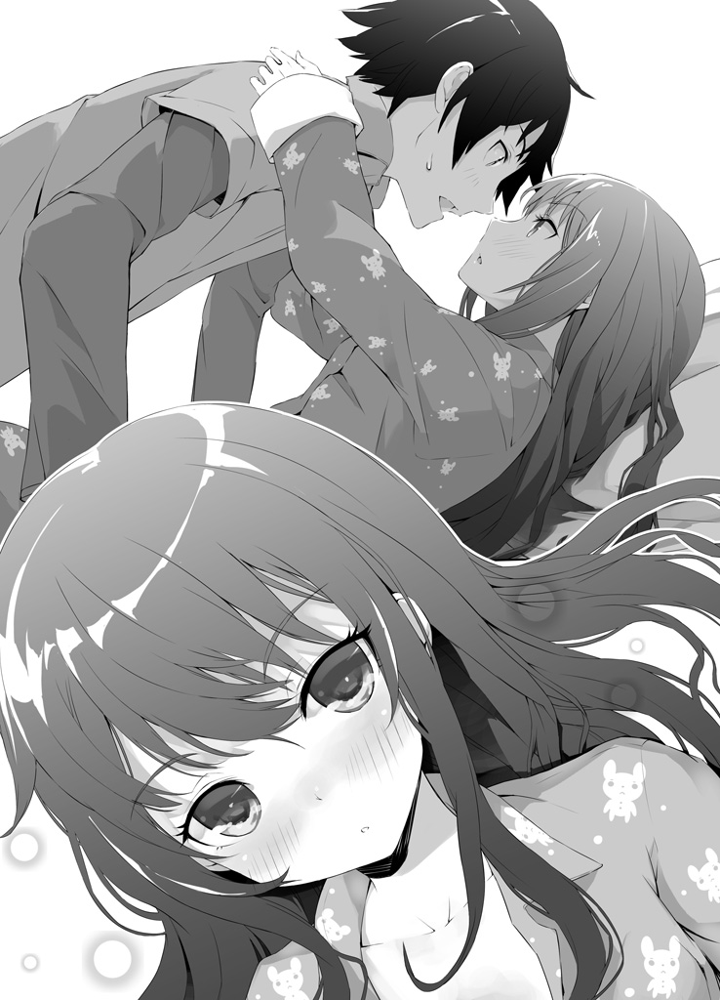
「もういいよ。しょうがないよ、陽ちゃんにはそういう考え方が染みついちゃってるんだから」
でも──と、二秒先にある瑞々しい唇が、悪戯っぽい曲線を描いた。
「今度はちゃんと、恥ずかしがって」
......反則だろこんなの。この状況で正気を保っていられるわけがない。
頭が真っ白になって、躊躇する余裕もないままに、残りたった二秒の距離を詰め──
「光里お姉ちゃんただいまー！ あ、陽太お兄ちゃん戻って来てくれたんだ！」
にこにこしながらドアを開け、優子とそまりが部屋に入ってきた。
びっくりしたなんてもんじゃなかった。
「よ、よう優子、そしてそまり。俺は光里のお見舞いに来ている最中だったんだぜ」
「お、おかえり優子ちゃんそまりちゃん。ちょうど陽ちゃんがお見舞ってくれている最中だったの」
「そうだったんだー」
言いながら優子は、不思議そうに視線を上下させている。
「ねえ、どうして光里お姉ちゃんは床で寝てて、陽太お兄ちゃんは天井に貼りついているの？」
「ゆっ......床で寝ると冷たくて気持ちいいからだよ、優ちゃん」
「ちょ、ちょっとシャンデリアごっこをしているだけだぜ優子」
「いや無理があるわよ」
ニヤニヤ笑いながら、そまりが冷静なツッコミを入れた。
「結局、無事に宇月さんと仲直りできたわけだな。よかったよかった」
「まあ......仲直りと言っていいのか微妙だけど、ようやく光里がまともに口を利いてくれるようになったよ」
「それで、陽太？ 俺と天川がいなくなってから、お前達は二人で一体何を話した？」
「何って、別に......お、覚えてねえよ。大体あんなの光里の夢の中の出来事だろ」
「ああもうわかったよ陽太。その反応で十分だ。そうだよな、二人っきりになったお前らがイチャイチャしないわけないもんな」
「な、何言ってんだ違っ......ゲホっ、ゴホっ！」
「ほらあんまり興奮すると体に障るぞ。大人しく寝ていろ」
俺は影時に支えられながら、だるい体を自室のベッドの上に横たえた。
「あーくそ、お見舞いに行ってこっちが風邪もらって来ちまうなんて......」
「贅沢言うな。美少女由来の菌をいただいてくるなんてこれ以上ないお土産じゃないか」
「欲しいならくれてやるっつうの」
「言い値で買おう」
「でも俺の体を経由してるんだぞ」
「だからこそ価値が上がってるんじゃないか」
「何で!?」
相変わらず気持ち悪い奴だ。
「そういやお前らはあの後どうなったんだ？ 光里の夢の中で落とし穴に落ちてたけど」
「気がついたら近所のゴミ捨て場で天川と抱き合っていた」
「うわぁ」
「その後に何があったのか訊かれても、俺の口からは『おっぱい』としか言えない」
「それ以外も喋れるようになってよかったな」
不意に呼び鈴が鳴り、影時が部屋の窓から玄関の方を見下ろした。そしてフッと意味ありげに微笑んで、荷物を纏め始めた。
「急にどうしたんだよ影時。もう帰るのか？」
「どうやら俺はお邪魔虫のようだ。またな、陽太」
「お、おい......」
影時はキザにウィンクをして、
「精々経口でじっくり風邪を移し合うがいいわ！」
「何その捨て台詞!?」
瞬間移動でその場から消えてしまった。入れ替わるようにとたとたと階段を上ってくる足音が。
「陽ちゃん、入っていい？」
「あ、ああ」
影時の様子でわかってはいたが、訪問者はやっぱり光里だった。休日なので半袖のシャツにミニスカートの涼やかな私服姿だ。手作りのお弁当袋を提げている。
「こんにちは」
「よ......よう光里。わざわざお見舞いに来てくれてありがとな」
「ううん。私が風邪を移しちゃったんだから」
そう言って光里はベッドの傍に腰を下ろして俺の顔を覗き込んだ。......なんか心なしか距離が近いような。人が人との間に無意識に開ける距離──パーソナルスペースだっけ？ 光里の俺に対するパーソナルスペースが、この前のお見舞いの一件があってから狭くなっている気がする。こんなに近くていいのでしょうかとドキドキしていると、
「......ごめんね陽ちゃん」
と、急に光里が謝ってきた。
「最近ずっと無視してて」
「ああ、そのことなら別にもういいって。......俺も無神経だったし」
女の子にとってファーストキスを奪われるということが、それが事故だろうと何だろうと、どれだけ重大なことなのかを俺はわかっていなかった。「家族みたいなもんだからノーカン」というわけのわからない理屈で、光里の気持ちも考えず事実をなかったことのように振る舞っていた俺は、考えてみればかなり最低である。
「でもこのままじゃ私の気が収まらない。だから今日は責任を取りに来ました」
「責任て......」
光里は意を決したようにほんのり朱が差した顔を上げ、
「口移しで陽ちゃんの風邪を引き取ります」
「ええー!?」
口移しとはつまりマウストゥーマウスという意味で穿った見方をすればつまりこれは光里からのキスのおねだりという感じのアレが
「冗談です」
「冗談かよおおぉおおぉ！」
くっそぉぉおおぉおぉおぉ！
「ゴフっ、ゴぉフッ！ ゲフッ！」
「よ、陽ちゃん？ 大丈夫？」
いや別に期待してたわけじゃないですけど！ 常識的に考えて風邪なのにキスするつもりとかは全然なかったんですけど！ でも何ていうか、こっちから「ば、馬鹿言ってんじゃねえやい」的な感じで断りたかったというか、するつもりがなくても冗談だって言われると傷つくっていうか！
「だ、大丈夫大丈夫。むせただけ」
俺の様子を見て光里はなぜかちょっと嬉しそうだ。
「陽ちゃんがそんなにしたいなら私は別に......」
「いやいいですホントに！ お前せっかく風邪治ったのにまたひいちゃったら困るだろ！」
「じゃあ陽ちゃんの風邪が治ってからにしよう」
何気なくそう言って光里は提げていた袋を開け、弁当箱を取り出す。さりげなさすぎてうっかり聞き流すところだったけど考えてみたらとんでもないことを言っていた。本当にこいつは、さらっと爆弾を落とすのがうますぎる。気付いたときにはこっちは死んでいる。
弁当箱の中にはお粥が入っていた。和風だしの落ち着いた香りが湯気にのって漂ってくる。
「卵粥作ってきたの。よかったら食べて」
「ああ、ありがとな。早速もらうよ」
光里は頷き、スプーンを取り出して卵粥を一口分すくった。そしてふーふーして冷ましてくれたスプーンを当然のように俺の口に持ってきて、
「はい、あーん」
「......」
「あーん、して」
ろ......露骨に光里の行動が積極的になっている。しかも可愛いから手に負えない。
「や、自分で食べられるから大丈......」
「あーんしてくれないの？ それとも『鼻の穴であーんしてるからそこから流し込んでくれればいいよ』っていうこと？」
しかも恐いから更に手に負えない。
「あーん！ あーんっ！」
「よくできました」
光里は微笑んで食べさせてくれた。シンプルでありながら奥深い味わいが......なんて料理通ぶったコメントをする気はないけど、普通にうまい。心と体に染み渡る温かさだ。きっと冷めないように作りたてを急いで持ってきてくれたのだろう。
「おいしい？」
「ああ、うまいよ。ありがとな」
光里は「よかった」と安堵したように呟く。その表情に見とれながら、俺はぼんやりと思った。
俺はずっとこいつの可愛いところをたくさん見てきて、その度に可愛いと思ってきた。 だから──もう光里のことを今までのように見れなくなってしまったことを、俺は内心凄く喜んでいるのかもしれない。もうごまかせないし、ごまかさなくていいのだから。
光里が「俺に家族だと思われるのが辛い」と言ってくれたことを嬉しいと思っている、この気持ちを。
「あーん」
光里が卵粥を運んでくれて、俺は多少の気恥ずかしさとともにスプーンを口に含む。しばらくそのやり取りが続いたあと、光里が何気ない様子で口を開いた。
「ねえ陽ちゃん」
「ん？」
「陽ちゃんは私のこと家族みたいに思ってるって言ってくれたけど──」
話しながらまたスプーンを俺の口に持ってくる光里。俺は黙って従い、口を開いて卵粥を食べた。その瞬間、
「お嫁さんも家族だよね」
思いっきり吹き出した。
しかし光里の手が神速でティッシュを用意して俺の口にバリケードを張り、被害を最小限に食い止める。
「ェホッ！ ゲホォ！ お、お前......今、明らかにタイミング狙っ......」
「さあ、何のことでしょう？」
光里は、小悪魔と天使が仲良く同居した笑顔になって、首を傾げた。
第二話 彼女の名は
１．
嫌なものを見てしまった。
平日の学校帰り。時刻は午後六時半を回っていたが、六月の太陽はまだしぶとく居座ってオレンジの光を放っている。そんな中、通りかかった細い路地裏で、長くなったビルの影に紛れて数人の男が一人の少女を取り囲んでいた。
制服から見て、男達はおそらく湊高校の生徒だ。全校生徒のうち第二ボタンをはめて登校してくる生徒の割合が一割以下と言われる程評判のよろしくない男子校である。噂に違わず、少女を取り囲む五人の第二ボタン解放率（あとズボンダボダボ率とピアス率）は百パーセント。どう見ても不良の集まりだ。
一方少女の方は、これがまた凄い美少女だった。この辺りではあまり見かけない制服を着ていて、中学生には見えないからきっと高校生だろう。軽い天然パーマらしい緩くウェーブのかかった髪を、ぎりぎりうなじが隠れる程度のセミショートにしている。均整が取れた美しい顔立ちをしているが、ややつり上がった目尻がちょっと強気そうだ。
だけど、そうは言っても容姿のイメージがそのまま全てその人の内面を映し出しているわけじゃない。少女はガラの悪い男達に囲まれたこの状況で平然としていられるほど強気ではないらしく、紅潮した頬と下がった眉尻、潤んだ瞳からは、羞恥と不安と恐怖とがない交ぜになった感情が見て取れた。
「ねえ～、何してんのよお嬢ちゃん」
「ダメでしょ、こんな時間にこんなトコに一人でいちゃあ。君みたいな美人は特にさぁ」
「そーそー。だからオレらみたいなのに掴まっちゃうワケ。自業自得ってやつ？」
男達はニタニタと下卑た笑いを浮かべて更に少女との距離を詰める。少女は壁を背に追い込まれ、悔しそうに唇を噛んで俯いてしまった。
「な......何が、自業自得よ......あんた達の方から......突っかかってきたんでしょ......」
「あー？」
少女の声は小さすぎて反論にすらなっていなかったが、それでも不良には気にくわなかったらしい......或いは力を誇示して少女を心理的に追い詰めるつもりなのか、不良の一人が唐突に近くにあったゴミ袋入りのポリバケツを蹴り飛ばした。ポリバケツは派手な音で倒れて生ゴミをまき散らす。少女はびくっと震え上がり、その様子を男達は面白そうに笑った。
「で、どーすんだ陽太」
と、頭の上からコンが問いかけてくる。白々しい。
「......お前、最初からこういうつもりだったのか」
そもそもここは和田川高からウチへの帰り道ではない。じゃあ何で俺がこんな治安の悪いとこにいるかというと、学校帰りに偶然（今思えばそう装っていただけの必然だったのだろうが）コンと出くわして、コンが「見せたいものがあるからこっちに来い」と半ば強引に俺をここまで連れてきたのだ。その結果が目の前の光景である。
「助けねーのか？」
「......」
コンがどうやって、今日この場でこの時間にあの少女が不良に絡まれることを知ったのかはわからないが、しかし差し当たってそれはどうでもいいことだ。
「コン」
「なんだよ」
「やっぱお前と契約してよかったよ」
こいつは絡まれてる女の子を助けようとした。そして、俺がそれに乗るだろうと信じてくれたのだ。
燃えるじゃねーか。
「はいはいちょっとごめんよー！」
俺は大声を出しながら不良達と少女の間に割って入った。
「あぁ？」
不良の目が一斉に集まってくる。普段の俺ならひるんでいるところだが──大丈夫。今の俺には強い味方がいる。頭の上に。
「ぷっ。何だこいつ、頭にぬいぐるみのっけてんぞ？」
「おいチビ、邪魔だどけ。これから俺らはそのねーちゃんと一緒に遊ぶんだよ」
「ま、正確には俺らがそのねーちゃんで遊ぶんだけど？」
不良どもは下品に笑い、その声に身を竦めた少女を見てさらに笑った。なんつーか、ここまでいくといっそ清々しいくらいの馬鹿野郎どもだ。
「いや、悪いけどこの子俺の知り合いなんだよ。今日は俺の方が先約だから、見逃してくれねーか」
ばれるに決まっている下手な嘘だったが、しかし否定は思わぬところから飛んできた。
「な......何言ってんのあんた！」
俺が嘘をついて助けようとした少女自身から、である。
「あたしこんなやつ知らない！ 変なカッコして、頭おかしいんじゃなの!?」
「な、なんだとぉ!?」
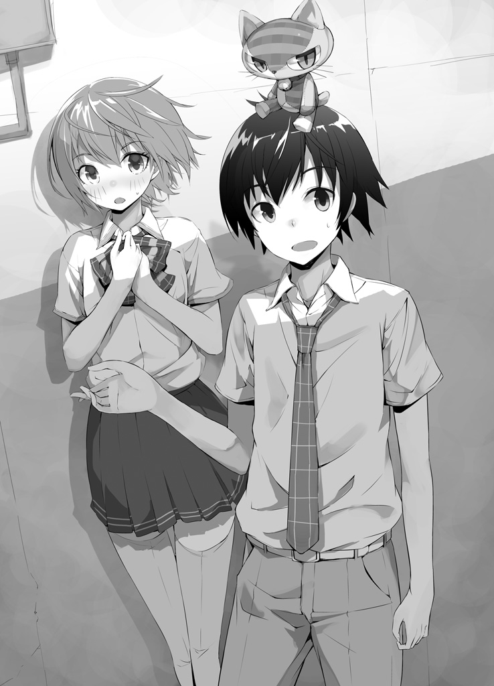
助けてやろうとしたのになんて言い草──という憤りは、彼女の台詞が俺ではなく不良達に向けられているものだと気づいて急速に冷めてしまった。
「いいわよ、もう！ こんな変なぬいぐるみ小僧に付きまとわれるくらいなら、あんた達に付いてった方がマシだから！ いきましょ！」
少女は途端に聞き分けがよくなって不良達のそばに寄っていく。
「へえ、賢いなねえちゃん。じゃあいこうぜ」
不良の一人が少女の肩に手をかけ、強引に自分に抱き寄せて歩き出した。不良はもう俺のことなんてもう眼中にない。完全無視である。
不良達に連れられた少女はふと俺の方に顔を向け、そして唇だけで呟いた。
「......──」
少女の足は震えている。肩に手をかけられたとき、体がびくりと痙攣するのを隠し切れていなかった。怖がって強がっているのはバレバレである。
──そんな状態で少女は、俺に微笑みかけて「ありがとう、ごめんね」と言ったのだ。
「......ったくよ」
『女の子に助け甲斐があるほど、男は格好をつけたくなるものだ』と──以前とあるＲＰＧにはまった影時が熱く語っていた。
「お前の言うとおりだよ、影時」
ますます燃えるじゃねーか。
「──どぉおぉりゃあああああ!!」
俺は叫び声を上げながら不良から少女を引き離し、振り返った不良の腹に右掌底をたたき込み、同時にコンの思念力を発動し掌と不良の腹を融合、そのまま右腕一本で不良を空中に持ち上げた。
「うわああぁあ何だこいつ!? 一体どんな腕力してやがる！」
これは自分の体に融合させたものを質量関係なく体の一部のように動かせる、というコンの思念力の特殊効果みたいなもんのお陰で可能なことなのだが、当然思念力の存在を知らない不良には俺が片腕で自分より体格の大きい相手を軽々持ち上げるほどの豪腕に見えるというわけだ。
......だが、俺の狙いはコレでびびらせて追い払おうなんて甘っちょろいもんじゃない。こういう奴らはいっぺん死ぬほど痛い目に遭わせてやる必要がある。だから俺は、
全員仲良く団子にしてやることにした。
「そい！ そぉい！ そおぉぉぉい!!」
「うわぁ！ うわあ！ うわあぁぁぁあ！」
最初に俺の手にくっついた不良をＡとし、その他不良も順番にＢ、Ｃ、Ｄ、Ｅとする。
俺がやったことは、つまり、ＡをＢにぶつけて融合→ＡＢ誕生、ＡＢをＣにぶつけて融合→ＡＢＣ誕生と......これをＡＢＣＤＥになるまで繰り返した、ということだ。昔こんなゲームがあったかもしれない。
「ぃぃいよいっしょぉぉお───!!」
「ぎゃああああああ────！」
五人合体して人間大玉状態になった不良達を、俺は腕にくっつけたまま、ハンマー投げのごとく力の限り振り回した。
「謝れー！ あの子に謝れー！ 怖い思いさせてすみませんでしたってぇー！」
「あああああすんませんっしたああマジすんまっせんっしたぁああぁあああ──!! もう二度としませんからぁー！ 許してぇー！ お願い許して──!!」
五人全員がマジ泣きした辺りで許してやった。
元に戻して解放してやると、不良達は泣きながら生まれたてのヤギのように全身をぷるぷるさせて逃げ去っていった。
「さてと......大丈夫だったか？」
不良の去り際を見届けて振り返ると、呆然としていた少女がはっと俺に気づいて何度も何度もうなずいた。
「あ、あの、あり、あり、ありが......」
「あー別にいいって。大したことしたわけじゃないし」
「で、でも、何かお礼がしたいの」
幾分が落ち着きを取り戻した少女は、今度は力んだ様子で詰め寄ってきた。やわらかそうな頬は朱に染まり、上半身を俺の方に乗り出した格好になっている少女の体は、スレンダーでありながらも、男の体では絶対に生み出せない悩ましげな曲線を描いている。そして少女は少し恥ずかしそうに目を泳がせて、少し吐息の混じった声で言った。
「何か......あたしにして欲しいことがあったら、遠慮なく言ってよ」
「......」
あれ。おかしいな。
なんだか少女の仕草や声や台詞からエロいことを連想してしまったんだけど。
「あー......えっと、それは......？」
俺の微妙な反応に、少女は自分の言ったことが若干の誤解を与えかねない可能性を孕んでいたことに気づいたらしい。慌てて両手を振って、
「ち、違うの！ 別にその、変な意味じゃなくて！ つまり、えっと......」
「あ、ああ大丈夫大丈夫。わかってるって」
そうだよな、きっとさっきのはただの言葉のあやだ。多分彼女はうっかり、「私にできることがあったら言って」的なことを言おうとして言い間違えたに違いな──
「本当は、何かあたしにしたいことがあったら遠慮しないでって言おうとしたのよ！」
余計エロくなっちゃったよ。
「『あ、あたしにしたいこと』......？」
「きゃ───────！」
少女は顔を真っ赤にして体をくねらせた。本人は恥じらいに身悶えているつもりだろうが、その動きすらなんかちょっとエロチックに......って、だからダメだって！
落ち着け俺、これはこの子がエロいんじゃなくて、この子をエロいと思うこっちがエロいってことなんだ。別にただ言い間違いが二回重なっただけじゃないか。あの慌てっぷりから見ても、故意でないことは明らかで──
「ご、誤解しないでよ！ あたしが言いたかったのは、何かあたしでしたいことがあったら遠慮しないでってことなんだから！」
「いやもうそれ完全にいやらしい意味しか残ってねえじゃねーか！」
『あたしでしたいこと』って！ その台詞からエロス以外の意味を連想するやつはいねーよ！ これはもう別に俺がエロいわけじゃないよ！
少女はアワアワいいながら頭から湯気を噴いていたが、ふと俺の右手に視線を留めた。
「......ねえ、ちょっとそこ、怪我してない？」
「ん？」
言われて見てみると、確かに右手の甲に、引っ掻いたような鋭い赤い線が走っていた。
「ホントだ。気づかなかったな」
不良達をブレンドして振り回している間に、あいつらのつけていた無駄にじゃらじゃらした金属製のアクセサリーを引っかけたのだろう。
「大丈夫？ 痛くないの？」
少女が心配そうに顔をのぞかせ、傷口に触れないように優しく俺の手を取った。
「ごめんね、あたしのせいで......」
本当に申し訳なさそうにそう呟く少女は、おそらく自分の今の行動がどれだけ男の心拍数を上げるのか、全然自覚していないのだろう。......これは危うい。
俺はどきどきを気取られないように見栄を張って、「平気だよ」とさりげなく少女の手の内から右手を外した。
「こんなもんなめときゃ治る」
「な、なめっ......!?」
少女はまたもや顔を赤くして、もじもじと両手の指をすりあわせ始めた。やがて覚悟を決めたように、瞳を潤ませて、
「わかったわよ......。な、なめれば、いいんでしょう？」
「いや別にあんたに頼んでねーけど!?」
どんな勘違いだ！ 今の文脈で俺が「傷口をなめろ」という変態的な要求をしたと思ったというのか!? というか俺はそんな要求をする変態に見えていたということか!?
「さっきのはこう！ こうやって自分でなめときゃ治るって意味だよ！」
と俺がわかりやすいように目の前で自分の傷をなめると、少女はさらに耳まで真っ赤になった。
「なるほど......自分が先になめておいて、その上からあたしになめろと」
「オメーの頭ん中は一体何がどうなってんだぁぁあああぁぁ！」
常人に出せる発想じゃねーよ！ やばいよこの子！ 潜在的には影時に匹敵するレベルの変態力を秘めているよ！
「そんなんいーから！ もうこれで十分だ！ この話は終わりだ！」
「だ、ダメよそれだけじゃ。ちょっと手貸して」
少女は再度俺の手を取ってスカートのポケットから取り出したハンカチを傷口に巻いてくれた。まさに「女の子」といった感じの、可愛らしい淡いピンクのチェック柄だ。
「んな大げさな......ここまでしてもらわなくても良かったのに」
「いいの。せっかくお礼できそうなことが見つかったんだから、少しはあたしの顔を立てなさいよ」
と、少女は軽く微笑んだ。
この子は......うーん、何というかやっぱり、危うい。
本当はとても優しい心を持った子だということは伝わってくる。加えて目を瞠るような美貌の持ち主で、そして天然にエロい。挙動や台詞から色気や女の子らしい可愛さのようなものがにじみ出ており、さらに頭の中もあらゆる言葉をエロい意味に脳内変換する中学生男子並みである。
こんな美少女が湊高の縄張りであるこんな路地裏にいるなんて、餓えた獣で満ちた檻にまるまる太った豚を投げ入れるようなものである。......いや、豚にたとえるのは悪いな。可愛い成分に餓えた光里がいっぱい居る部屋に立ち上がるレッサーパンダを放り込むようなものであると言った方がいいか。
要するに危険だと言うことだ。そりゃあ絡まれたってしょうがない。
「なあ、あんたはどうしてこんなとこにいたんだ？ 責めるつもりはないけど、さっきの不良も言ってた通りさ、あんたみたいな女の子が一人でいるには危ないところだぞ」
「......」
少女は俺の質問には答えず、じっと俺の頭の上、つまり今はぬいぐるみのふりをしているコンを見つめている。
「そのぬいぐるみ、可愛いね」
「え？ あ、まあ......な」
「可愛いもの、好きなの？」
「俺の、......友達が好きなんだよ」
光里と俺の関係をなんて言えばいいのか、一瞬迷って、不自然な間が空いてしまった。「家族のような幼なじみ」から一歩離れて、俺逹は一体どういう間柄になったんだろう。よくわからない。
......これからどういう間柄になりたいのかは、多分、二人ともわかってるんだけど。
「そっか」
少女はどこか嬉しそうに頷くと、膝を屈めて、路地裏の奥の方に向かって「もう大丈夫だよ、出ておいで」と呼びかけた。
すると、古ぼけたビルの配管の裏から、小さな子犬が姿を現した。心なしか不安そうな面持ちに見える。茶色と白の毛が混ざった雑種の犬だ。
「ごめんね、怖かったよね。もう安心だよ。悪い人はこのお兄さんがみんなやっつけてくれたから」
少女が抱き上げると、子犬は「キャン」と吠えて尻尾を振った。
「そいつは......」
「......うん。捨て犬。三日前にここの前を通った時に偶然見つけて、それからエサをあげに来てたの」
ああ、なるほど。そういうことか。俺はようやく理解した。
コンは、この少女がここで捨て犬にエサをやっていることを知っていた。そしてそれがどれだけ危険なことかも理解していた。だから俺をここに連れてきたのだ。
俺がぽんと頭の上のコンを軽く叩くと、コンは気恥ずかしそうにわずかに身じろいだ。
「けど、あんまり感心はしねーな。飼ってやるのか見捨てるのか、どっちかを選ぶべきだろ」
「......言われなくてもわかってるわよ。今日のことは、きっとバチがあたったんだわ」
少女はそう言って唇を噛んだ。
「うちで飼うの許してもらえるかどうかわからないからって、決断を先延ばしにしてたの。尻込みしたって結果は変わらないのに、バカよね」
少女は呟き、子犬を抱いたまま鞄を持って立ち上がった。
「今日こそ連れて帰る。それで、お父さんとお母さんに、この子をうちで飼えるように頼んでみる。決心ついたから」
「......そうか。がんばれよ」
「うん。それじゃ、あたしもう行くね。さようなら」
「送ってくか？」
手を振った少女に向けて、俺は咄嗟にそう言っていた。
「もう女子が一人で帰るには危ない時間だぞ。また絡まれるかもしれねーし」
すると少女はまたしても顔を赤くして、
「えっと......それはつまり、送ってくれる代わりに、暗い夜道で二人っきりのときにあたしに何かをさせようという魂胆で......？」
「違ええーよ！ 何でそういう方向に考えるの！ 純粋な厚意だよ！」
「純粋な......行為!? や、やっぱりそれが目的なの？」
「もういい加減にしてくれ！」
しかもなんで微妙に乗り気なんだよ！ もしそういう勘違いをしてるならもっと嫌がれよ！ 誘われてるのかと思っちゃうじゃんかよ！
「ご、ごめん......でも、あなたの家はどこなの？」
「菫台の一丁目にある」
「じゃあ全然逆よ、あたしの家葱島の方だし。悪いからいいよ」
「構わねえよ、大した距離じゃないだろ。このハンカチのお礼だ」
と、俺が右手に巻かれた少女のハンカチを見せると、少女は首をかしげた。
「え、でもそれはあたしが助けてもらったお礼で......」
「じゃあお礼のお礼だ」
「そんなのあり？」
「人間関係ってそういう風に繋がってくものだろ」
「に、肉体関係が......繋がる......!?」
「こいつホントめんどくせえ───！」
この後、あらゆる言葉をエロい方向に変換する少女を説得するのに、十分あまりの時間を必要とした。
「もうここでいいわ」
閑静な住宅街の一角で、少女がそう言ったのは、午後七時を少し過ぎたころだった。
「本当にいいのか？」
「うん。うちはもうすぐ近くだし」
きっと俺に家を知られたくないんだな、と俺は直感した。その少女の判断は正しい。
いくら自分を助けたやつとはいえ、所詮は俺はこの少女にとって見知らぬ男。警戒して損はない。凄く防御力の低い印象があったから不安だったけど、こういうことに頭が回るならちょっと安心だ。或いは今日の件で学習したのかもしれない。
「今日は本当にありがとうね。......それじゃあ」
「あ、ちょっと待ってくれ。その子犬のことだけどさ」
「なに？」
「もし、あんたの家でそいつを飼う許可が下りなかったら、どうするつもりだ？」
少女は少し不安げな表情で、足下に視線を落とした。
「その時はその時よ。飼ってくれる人を捜すわ」
「だったら俺が力になれるかもしれないぜ」
少女の瞳が明るくなった。
「......ひょっとして、あなたが飼ってくれるの？」
「いや、それは無理なんだけど......その代わり、さっきも言ったけど、俺の友達に全国の可愛いものを統括支配する女の子がいてさ」
「聞いてないわよ！ どんな人それ!?」
「そいつに頼めば、捨て犬の一匹や二匹の飼い主を見つけるくらい造作もなくやってくれるさ。だから......そうだな、俺はしばらくここで待ってるから、もし家族を説得できなかった時は戻ってきてくれ。そしたら子犬は俺が責任を持って預かるから」
少女は感激したように目を潤ませ、ぺこりと頭を下げ、小走りに自宅に帰っていった。
２．
「それから二十分後くらいだったかな。その子、すっごい笑顔で戻ってきてさ。親に子犬飼うの許してもらったって、本当に嬉しそうにしてたよ。俺は特に何もしてないのに、何度も何度もお礼言ってきて」
「そうかそうか。いい話だなぁそれは」
影時は微笑ましそうにうんうんと頷いた。
「で、陽太。どっから妄想だ？」
「信じようという気がまるでねえ！」
「当たり前だろう！ どんなギャルゲーだその展開は！ 可愛い幼なじみが居る時点で既に勝ち組なのに、何をそれ以上妄想で補う必要があるというのだ！」
「妄想じゃねえよ！ 本当だって！ 全部本当なんだって！ ほら、ちゃんと昨日の女の子の実在を証明するもんを持ってんだからな！」
そう言って俺は、ポケットから淡いピンク色のハンカチを取り出して掲げて見せた。
「これその子が手に巻いてくれたハンカチだ！ 昨日返し忘れちまったから、もしまた会えた時のために洗濯して持ちあるいてんだよ！」
「そういう小道具の用意とかいらないぞ陽太。そこまで捏造に必死だと流石に引く」
「お前はどんなレベルで俺を信用してねーんだ!?」
「冗談だ。まあ、お前がこの手の見栄を張るようなやつではないことくらいわかっているが......それで陽太、俺にその話をしたのは、可愛い女の子に出会ったことを俺に自慢したかったからだけと言うわけじゃないんだろう？」
流石に察しがいい。俺は頷き、「実はちょっとお前に聞きたいことがあってさ」と本題を切り出した。
「子犬もその子の家で飼ってもらえることになって、めでたしめでたしでお別れになったところで、そういやお互いに名前を教えてなかったことに気づいてさ。で、まず俺から名乗ったんだ。そんでその子の名前も教えてもらおうと思ったんだけど──そうしたらその子、急に悲しそうな顔になって」
「ほう？」
「そんで、急に逃げるように走ってっちゃったんだ。俺は追いかけることもできなくて結局それっきりだ」
「......ふむ、なんだか煮え切らない話ざまぁ」
「語尾のように悪態をつくな。それにしても、何で急に逃げたりしたんだろうな」
昨日の様子を見る限り、少なくともあの子は俺に対してマイナスの感情を抱いていたわけではなかった......ように思う。それなのに、名前を聞いた途端に態度を変えて逃げ出してしまうのはやっぱり不自然だ。
心当たりは......一つだけあるんだけど。
「ははーん、わかったぞ、陽太。さてはお前......」
「なんだ影時。何か思い当たることでもあるのか？」
「服を着ていなかったんだろう」
「着てたわ！ 何だその有り得ない指摘!? 何でちょっと断定的なんだ！」
「不良やその女の子の服装については描写があったのに、お前の服に関して一切言及されていなかったから」
「俺の視点だったんだから別にいいだろそれは！ 大体もし俺が全裸だったとしたら女の子が嫌がるの遅すぎるだろ！ 初見で悲鳴上げてるはずだわ！」
「おいおい、誰が全裸だなんて言った？ 俺は『服を着ていなかったんだろう』と言っただけで『靴下を履いていなかっただろう』とは言っていないぞ？」
「もっとダメだろうがぁああぁああ！」
男が全裸に靴下履いてて誰が得するんだよ！ 最悪の絵だよ！
「それで、聞きたいことというのは何だ？ 言っておくが、その少女の行動の意味を訊かれてもそれは俺にだってわからないぞ」
「いや、聞きたいのはそこじゃねえ。ちょっとこいつを見て欲しいんだ」
と、俺は影時に、少女から借りた例のハンカチを広げて見せた。
「左下の方。よく見てくれ。刺繍が入っているだろ？」
「どれどれ......ふむ、確かに」
ハンカチには赤い糸で小さくローマ字の綴りが縫い付けられている。影時はそれを一目見て、首をかしげた。
「む？ これがその子の名前ではないのか？」
「ああ、俺もそう思ったんだけど......よく読んでみろよ、影時」
影時は怪訝そうに、左から並んでいるアルファベットを順番に音読していった。
「Ｊ・Ｏ・Ｚ・Ｅ・Ｋ・Ｏ──ジョ、ゼ、コ......ジョゼ子!?」
影時は心底驚いた様子で顔を上げた。俺は頷く。
「気付いた時には俺もすげえびびったけど、間違いなくこれは『ジョゼ子』って読める。つまり、信じられねーけど、あの子のファーストネームは......」
「じょ......ジョゼ子？」
「......多分」
影時は愕然として「なんてことだ」と呟いた。
ジョゼ子というのは、影時が愛用している抱き枕のことで、かつて俺の頭部に融合した俺にとってのトラウマの塊である。
まさかジョゼ子という人名が存在したとは──そして、その名前を持つ女の子と俺が出会ってしまうなんて、思ってもみなかった。
「な、なるほど......そう考えれば、その少女が名前を聞かれた途端に逃げ出した理由も推測できるな」
「ああ、俺も思った。多分あの子俺に『ジョゼ子』って名前を知られたくなかったんだ」
「だな。あの子はきっと、いわゆるＤＱＮネームというやつの被害者なのだろう」
ＤＱＮネームとは。
子供の名前に見られる、暴走族のような当て字や漫画・アニメ・ゲームなど架空のキャラクターからとった当て字の名前のように、読みづらい名前や、常識的に考えがたい言葉によってつけられた名前のことである。わかりやすく言えば酷い珍名のことだ。尤も何をＤＱＮネームとするかは個人の主観に大分左右されるため簡単に定義することはできないが。
名付けるのは親だが、その名前によって一番の被害を受けるのは名付けられた側（子ども）であるため、ＤＱＮネームをつけられてしまった子どもは全く自分の責任ではない事柄で周囲からの誤解や嘲笑を受けてしまうことになる。
「名前か。厄介な問題だな。ＤＱＮネームをつける親だって、何も子どもが憎くて変な名前をつけているわけではないのだろうからなぁ。大切に想うあまり、特別な名前をつけてあげたいという気持ちが暴走してしまったんだろう」
「......まあ確かに。名前と言えば、お前の名前も結構あれだよな」
「ああ、典型的な厨二ＤＱＮネームといっても過言ではないだろう。『影時』て。『影の時』て一体何だ。かっこいいから俺は気に入っているんだが」
「お前みたいに本人がいいなら別にいいんだろうけどさ。それで聞きたかったことってのは、もう大体わかってると思うけど......お前、抱き枕にジョゼ子って名前つけてただろ」
「ああ」
「何か......あんのか？ 例えば、あの萌えイラストのキャラの名前だとか」
「いや。おそらく『ジョゼ子』という名前のキャラは、どの漫画にもアニメにも存在しないはずだ」
「そうなのか？ じゃあお前の抱き枕は......」
「あれは俺の手作りだからな。あのキャラはオリジナルなんだ」
一瞬目が点になった。
「え......えええええ!? あ、あの抱き枕お前が作ったの!?」
「ああ、パソコンで画像を描いてプリントして」
「何だその技術！ じゃあ、ジョゼ子ってのは......!?」
「あのオリジナルキャラの名前だ。俺が名付けた」
「......」
そうだったのか......。かなりどうでもいいことだが衝撃の事実だ。
「ち、ちなみに名前の由来は......？」
「『ジョジョの絶妙な探険』というマンガの第二部の主人公ジョゼフ・ジョーンズを女体化した」
「なぜだあああぁああぁああ！」
なんだその意味不明なチョイスは！ どうしてジョジョを女体化しようと思った！
「と、とにかく。じゃああの子は、お前の『ジョゼ子』とは全然関係なく『ジョゼ子』って名前だったわけだな」
「そうなるな。俺にとっても全く信じがたいことだが......」
影時はそう言ってため息をつき、口を閉ざしてしまった。
名前か......。ありがたいことに、俺は結構まともな名前をつけてもらったから、そこを悩んだことはなかったけど、でもそれは凄く恵まれたことなのかもしれない。
あの子──ジョゼ子は、大丈夫だろうか。他人に名前を名乗ることができないんじゃ、まともに人間関係が作れるとは思えない。連絡先を聞くのも忘れてしまったし、ひょっとしたらもうこれっきりで二度と会えないのかもしれないけれど、いつかまた出会ったときには──少なくとも、名前をバカにしたりしないで普通に接してくれるやつはいるんだってことを教えてやりたい。
そう思って、俺はいつかこれを返せるときが来ることを願いながら、ピンク色のハンカチをポケットにしまった。
３．
それから数日後。いつものように朝がやってくる。ただしその日の朝は、......いつもと何かが少しだけ、しかし決定的に違っていた。
「いつまで寝てるのー？ ご飯よー！ 起きなさーい！」
階下から母さんの声が届く。聞き慣れたはずのその声は、しかしまどろみの中においては非常に不快に響いて、俺は耳を塞ぐように布団を頭から被った。
しばらくそうして耐えていると、声が止んだ。その代わりに早足で階段を上って来る音が聞こえ、そして、乱暴にドアが開かれる。
「ちょっと！ 起きなさいって言ってるでしょ！ 朝ご飯出来てるわよ！」
「あー......」
わかっちゃいるけど、眠い。俺は意味の無い呻き声で時間稼ぎをして布団にしがみついていたが、やがてそれも強制的に剥がされる。
「ほら、いい加減に起きなさいってば！ 遅刻するわよ涎！」
「え......？ 俺涎垂れてる？」
眠い目を擦りながら慌てて口元を拭うが、......別に涎を垂らしていた形跡はない。
「何だよ、別に垂れてねーじゃん......」
母さんは、「はぁ？」と怪訝な顔をした。
「涎、何寝ぼけてるの」
「いや、母さんこそ何言ってんだよ......その文脈じゃまるで俺が涎みたいじゃ......」
「だって涎じゃない、あんた」
「......は？」
「ヨ・ダ・レ。あんたの名前でしょ」
「......」
目がぱちくり。
「──は、はあ!? 涎!? 俺の名前が!?」
頷く母。
「いやいやいやおかしいだろ！ 名前涎って！ 何でそんな汚らしいの！ 朝から変なボケかますなよ母さん、俺の名前は、よ──」
俺の名前は。
と、考えて──言葉に詰まる。よ、よ......
......あれ？
「......涎だ」
俺の名前、涎だ。それ以外に思い浮かばない。
そうだそうだ忘れていた、俺は涎だった。
「って、えええええ!? いや、違うよ！ 絶対何か違う名前だったよ！」
そう、確か昨日までは別の名前で呼ばれていた気がする。しかし、どうしてもそれが思い出せない。それどころか、むしろ「涎」と呼ばれることに慣れた感じすらしてきた。
「......ねえ、あんた大丈夫？ どっか具合悪いの？」
母さんが眉をひそめて、本気で心配した表情で俺の顔を覗き込んで来る。
いやいやいや、おかしいのは俺じゃなくて、この状況の方だろ！
「大体母さん！ あんたは何を考えて、息子に口腔内で様々な役割を果たす分泌液の名前を付けたんだよ！」
「何でって......『太陽のように大きくて温かい人間になって欲しい』って思ったから」
「おかしいだろそれ！ 『涎』って名前の何処に太陽の要素があるの!?」
「......」
流石に違和感を覚え始めたようで、母さんは首を傾げてしまった。
「......あら？ どうしてあんたに涎なんて名前付けたんだったのかしら。言われてみればおかしいわ......」
変ねえ、と頬に手を当てて呟く母さん。はっとして、俺は母さんの名前を思い出そうとした。
......母さんの名前は、すぐに頭に浮かんで来た。しかし、それは。
「母さん、母さんの名前って何だっけ？」
「え？ ちょっと、あんた自分の母親の名前も忘れちゃったの？ 佃煮よ、佃煮」
「それもおかしいだろォ！」
佃煮て！ 人名に『佃煮』て!! そして佃煮の息子が涎て！
俺は必死で母さんの名前を思い起こそうとするが、しかしどうしても佃煮という言葉が浮かんでくるばかりだ。絶対に何かがおかしいのに、しかしなぜか俺の脳内認識では母さんの名前は佃煮が正しいものということになってしまっている。
「涎とか佃煮とか、明らかに人の名前としておかしいぞ......！ 悪ふざけじゃねえかこんなもん！」
「た、確かにそうかも......」
母さんも徐々にこの奇妙な現象を疑問に思い始めたようだ。
「で、でも......変ね、あんたの名前はずっと涎で、私の名前はずっと佃煮だったはずなのに......今まではどうしてそのことを不思議に思わなかったのかしら......」
「......」
母さんには今起きているこの意味不明な事態に何の見当もつかないだろうが、俺には一つ心当たりがあった。
こういう──わけのわからない理不尽を、俺はもう何度か経験していたから。
「......思念糸だな」
「え？ ちょっと、涎？」
母さんに聞こえないように呟き、俺は状況確認のために急いで階段を下りる。そして既にテーブルに付いていた父さんと妹の姿を見つけ次第――二人の名前が何だったか、思い出そうとした。
すぐに思い出せた。
俺は妹を指差し、叫ぶ。
「お前の名前は味塩！」
妹の味塩は驚き、咥えていたトーストを落としてしまった。
「え？ いやそうだけど、突然何なの涎兄」
次に俺は父さんを指差し、叫ぶ。
「父さんの名前はアミノ酸！」
新聞を読んでいた父さんは、格好良く眼鏡を上げてクールに答えた。
「その通りだ。近所の人からは『網野さんなのかアミノ酸さんなのかはっきりして欲しい』という苦情が届いている」
「その苦情はどうしようもねえな！」
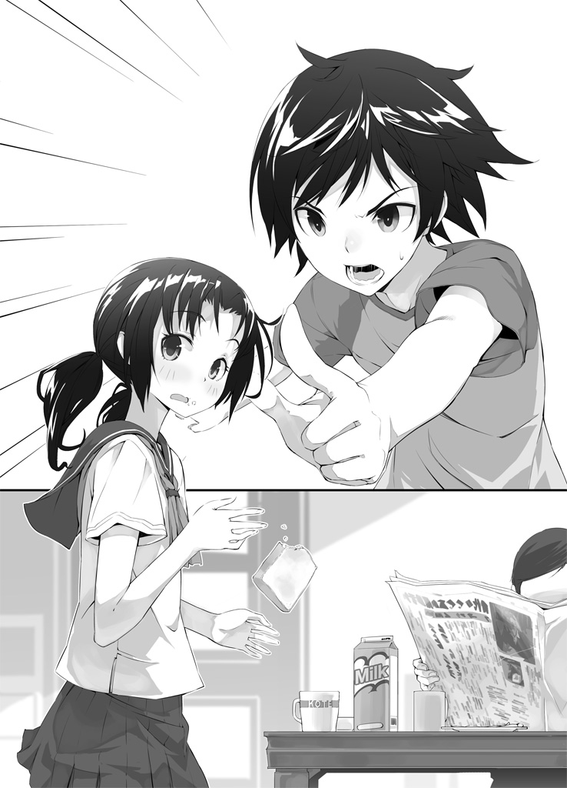
......やっぱりだ。
俺達家族の──いや、ひょっとしたらもっと広範囲かもしれない人々の名前がイカれてしまっている。しかもそのことに違和感を持っていない。記憶ごと、いや、名前に対する認識ごと、改変されてしまっているようだ。
間違いなく思念糸関係の異常事態だ。
「こうしちゃいられねえ......！」
俺は急いで部屋に戻って着替えを済ませ、家を飛び出した。とりあえず学校に向かって走りながら携帯を取り出す。
思念糸の専門家、食えない性格の美少年優等生と連絡を取るのだ。あいつの名前は、そう──
「もしもし、アレルギー！ 俺だ！ 涎だ！」
「......君か」
アレルギー。それが彼の名前だった。いや、絶対他の名前があったはずなんだが、とにかく今はアレルギー君だ。可哀相に。
ちなみに、俺達の頭の中では名前がおかしなことになっているが、既に記述された名前──つまり持ち物に書かれた名前だとか、携帯に登録されていた名前だとかには、ひょっとしたらこうなる前の名が残っているのではと期待していたが、残念なことにそういうものも全て変更されていた。
例えば俺のアドレス帳には、「アレルギー」を筆頭に、「マンホール」「文庫」「ポイントカード」「割り箸」「国道」「胸毛」などなど、適当な単語を適当に割り振っただけとしか思えないシュールな人名がずらりと並んでいる。しかもその名前を見ただけでちゃんと本人の顔が浮かんで来るのだからたちが悪い。同様に、おそらく今アレルギーの携帯には、通話相手として「涎」の文字が表示されているのだろう。
「アレルギー、一体こりゃどういうことだ!? 思念糸関係のなんかだってのはわかるが、しかしこりゃ一体誰の、何の、どういう思念力が発動してんだよ！」
「それはまだ僕にもわからないよ。とにかく今後の対策を取るために一旦集まろう。今から西公園に集合ということでいいかい？」
「あ、ああわかった」
「彼らには僕から連絡しておくよ。それじゃ」
アレルギーとの通話を終えた数分後、俺は西公園の遊具エリアのベンチにてアレルギー達を待っていた。まだ朝早いためか、公園に人の姿はない。高校生が公園にいるには不自然な時間だが、誰にも見られなければ問題はないだろう。こんな異常事態のときくらい、学校サボる程度は許して欲しい。しばらくすると、待ち人の一人である女の子が、緑色をした猫のぬいぐるみ──俺が思念契約を結んだ思念塊、コンだ──を抱えて小走りでやって来た。
長くてさらさらな黒髪に、十人中十人が美少女と認める可愛らしい容姿、そして百人中百人が変人と認めるレベルに可愛いもの好きな、俺の......えー、仲良しの幼なじみ。
彼女の名前は──。
「......」
すぐに頭に浮かんだその名前を、俺は口に出すことはできなかった。何かの間違いだと思いたかった。
「涎ちゃん」
彼女は俺の傍に来て、俺の名を呼んだ。
「お、おう......」
「大変なことになったね」
「本当だよな......。うちの家族もみんな、佃煮だとか味塩だとかアミノ酸だとか、そんな旨味成分の深そうな名前になっちまったぜ」
「私のおじいちゃんとおばあちゃんも、湿布と昆布になってたよ」
微妙に関連性がありそうでない。
「ちなみに......ちなみにだぜ？ お前の名前は、どんな風になってたりするのかなぁって......」
俺の頭に浮かんだものが間違いであればいい。そんな一縷の望みを託した質問だったが、
「私はひったくりだよ」
「やっぱりかちくしょ───っ！」
あっさり粉砕したよ！ 何だひったくりって！ 何なんだよひったくりってよォ！ ヒロインの名前が犯罪名って酷すぎるだろ！
必ずこの事態を打開して本当の名前を取り返して見せると、俺は強く強く心に誓った。
「つーか『涎ちゃん』はやめてくれよ。語感悪いし」
「じゃあなんて呼べばいいの？」
「なんか......あだ名みたいなので」
「ヨーダでいい？」
「やっぱ涎ちゃんでいいです」
「相変わらず仲良しだね君たちは」
振り返ると、そこにはやれやれと溜息を吐くアレルギーがいた。
「涎君もひったくりちゃんも、あんまり堪えていないみたいだね」
いや、俺は十分堪えてるけどな......。ひったくりの動じなさが異常なだけだ。
「そういうお前だって結構余裕じゃんか。名前がアレルギーになったってのに」
「放送禁止用語でなかっただけマシだと思ってるよ」
「どんな妥協だよ......」
さて、これで後来ていないのは、例の変態だけなのだが......。
「おーい、皆ぁー！ 待たせたなー！」
と、丁度その時、見慣れた男が手を振りながらこちらに走って来る様子が見えた。
俺やひったくり、アレルギーと同じ高校一年生でありながら既に一八〇オーバーの長身であり、アレルギーとは違うタイプのイケメンでスポーツ万能、しかしそれらの長所を全て吹き飛ばすほどの変態性の持ち主。
そう、奴の名は──
「おう、ようやく来たか下半身」
「おはよう、下半身くん」
「遅いよ下半身君」
「俺の名前だけ明らかに悪意が込められていないか!?」
「は？ 何言ってんだそんなことねーよ下半身」
「そうそう。とても君らしくて良い名前だと思うよ下半身君」
「っていうか下半身、お前はむしろこっちの名前の方が合ってるんじゃね？」
「そもそも君は最初からずっと下半身君だったような気がするな」
「ああじゃあもうずっと下半身で良いじゃん。良かったな下半身」
「いじめだー！」
ひとしきり下半身をいじってから、俺逹はまじめに対策を考えることにした。
「とりあえず今の状況を整理してみようか。まず、今日の朝になったら突然、おそらく何者かの思念力の影響で、何の前触れもなく僕逹や周囲の人間の名前がランダムに様々なものの名前に入れ替わっていた。しかし僕達以外の人間──思念糸に関係する力を持っていない一般人は、そのことに対して何の違和感も覚えていない。僕達だけが、今の自分の名前が明らかに異常であることに気づいている」
「あの」
ひったくりがおずおずと手を挙げた。
「私はアレルギーくんや涎ちゃんみたいな力を持ってないんだけど、今の名前がおかしいことがわかってるよ」
「ああ、まあ......君はちょっと特別だから。思念塊であるコンとずっと一緒に居たせいで免疫ができてるみたいだ」
そうなのか。確かにひったくりはこの前も、契約主でもないのにコンの思念力で夢と現実を混ぜたりしてたもんな......。
「あ、そういやコンとか天むすの名前は変わってねーな。思念塊には効果がないのか？」
「しかしコンも天むすも、俺達の本当の名前については覚えていない。そういう意味では、この名前を変化させる思念力の影響を受けているのは確かだろう」
「『名前を変化させる』思念力か。これ、一体どこの誰がやってんだ？ こんなことして得をするやつがいるとは思えないんだけど」
「思念塊の仕業だとしたら、悪戯心でやってるんだろう。思念能力者の仕業だとしたら......多分、故意じゃない。暴走状態なんだ」
「暴走？ って、こないだのユークリッド幾何学みたいな？」
多分通じてないと思うから解説しとくと、ユークリッド幾何学っていうのはこの間俺とひったくりが保護して今はひったくりの家に住んでいる幼い女の子のことです。あの子の名前も変わっちゃってるんです。
アレルギーは頷いた。
「あそこまで酷くはないだろうけど、似たようなもんさ。そもそも思念能力者が思念力に目覚めるのは、大抵の場合、コンプレックスを核に集まった思念糸を制御しきれなくて暴走させてしまったときなんだ」
「コンプレックス......」
そうか。そういやユークリッド幾何学が持っていた思念力の『愛情をエネルギーに変える』っていうのも、「誰かに心から愛して欲しい」っていうコンプレックスの裏返しだったわけだからな。
そう考えると、『金銭をエネルギーに変える』という思念力を持っているアレルギーは、何か金銭がらみのトラウマを心に負っているということだろうか。昔すげー貧乏だったとか。
......。
いや、考えるのはよそう。本人が語ろうとしないのなら邪推はするべきじゃないし、今は目下の名前問題を解決するのが先決だ。
「ふむ......」
アレルギーは携帯を操作しながら難しい顔をしている。
「なにしてんだ？ アレルギー」
「ちょっと気になることがあってね。みんな、アドレス帳を開いてくれないか」
アレルギーの指示に従い、全員が携帯のアドレス帳を開いた。
「きっとアドレス帳の中に、『まともな人名』がいくつか残っていると思うんだ。まずはそれを探して欲しい」
「まともな人名？ 鈴木太郎とかそんなんか？」
さっきざっと見た限りではもう残っていなかった気がしたけど......えーっと、「イヤホン」、「爪切り」、「ポテトチップス」、「スーパーカミオカンデ」、「日渡朝弥」......ん!?
「あ、あった！ 普通の名前だ！」
「本当かい？ 見せてくれ」
「ああ。日渡朝弥、東京の大学に行ってる兄貴の名前だ！」
間違いない。これが普通の名前だ。きちんと意味が込められた、これが人間の名前のあり方だ！
「む。俺のアドレス帳にもあったぞ。真上翡翠......最上級悪魔の名前だな」
「いやそれお前の姉ちゃんだろ」
今は実家を離れている下半身の実のお姉さんだ。彼女が帰ってくるからということで下半身は俺に抱き枕ジョゼ子を預け、そしてそれがあの悪夢の引き金になったのだ。忘れもしない。
「あ、私のにも残ってた」
とひったくり。
「お前のは一体誰だったんだ？」
「ジャミール・アティティヤーナさん」
「誰!?」
「全日本レッサーパンダ愛好会の会長さん」
「全日本なのに会長日本人じゃないの!?」
そんな人がアドレス帳に登録されていることについては突っ込まないことにしよう。
その後もそれぞれのアドレス帳を探していくと、数人はまともな名前が見つかった。見つかった名前の人は、大体が親戚や、ひったくりが加入している謎の可愛いもの愛好会の会員仲間だったりで、滅多に会ったり連絡を取ったりすることのない人ばかりだ。
一体どういう基準で、名前の変化が起きたり起きなかったりしているのだろうか。俺には何が何やらさっぱりだったが、アレルギーは俺達のアドレス帳を順番に見て、そして「なるほどね」と頷いた。
「何がなるほどなんだ、アレルギー？」
「気がつかないかい？ 法則性があるじゃないか、ちゃんと」
法則って......え？ 何だろう。
「現在住んでいる地域、だよ」
アレルギーは得意気に言った。
「地域......？」
「君達のアドレス帳に登録されているのは大体友人か家族の番号だろう。そしてそのほとんどで名前の変化が起こっていた。しかしわずかに残った、名前が原型を留めている人達の現住所は......」
「あ......！」
俺のアドレス帳に登録されている友人達は、ほとんどが同じ中学或いは同じ高校に通っているやつらで、皆この和田川市内に住んでいる。家族ももちろん和田川市民だ。
しかしそんな中、名前変化を起こさなかった俺の兄貴と下半身のお姉さんは東京に。そしてひったくりのなんかよくわからん可愛いもの好き仲間も、おそらくこの街から遠く離れたところに住んでいるのだろう。つまり。
「名前が入れ替わってるのは、この和田川市周辺にいる人間だけってことか！」
「その通り。この思念力は、おそらく思念能力者或いは思念塊を中心に円形の範囲内でのみ効果を発揮している。問題はその円範囲の規模と、中心点がどこにあるかってことなんだけど......名前変化の起こる範囲の境界線を調べていくと、どうやら効果範囲は半径五十キロほどで、中心点はこの辺りになる」
アレルギーが見せた携帯の地図に示されていた位置に、俺は覚えがあった。
「ここって......！」
和田川市葱島。
数日前に出会った少女──ジョゼ子の家があった辺りである。
ピン、と頭の中で糸が一本に繋がった気がした。
「なあ、アレルギー。思念能力者って、コンプレックスから思念力に目覚めることが多いんだよな」
「ああ、そうだよ」
「例えば──自分の名前が気に入ってないから、周りの人間みんな変な名前にしちまうような思念力に目覚めちまった、っていう推理はアリか？」
アレルギーが目を細めた。
「心当たりがあるみたいだね」
「ああ。実は──」
俺は手短にジョゼ子のことを説明した。もし今回の名前変化騒動の原因が、ジョゼ子の名前に対するコンプレックスから生まれた思念力だとすれば、色々なことに説明がつく。俺の推論はあながち的外れでもなかったようで、アレルギーも納得した様子を見せた。
「確かに現時点での情報を総合すると、その少女が思念能力者になった可能性は高いね。その少女の名──『ジョゼ子』を、君がそのまま覚えていることも、彼女が思念力の発生源である可能性を強めている」
あ、そうか。本来ならジョゼ子だって名前変化思念力の効果範囲内にいるわけだから、別のもっと変な名前になってるはずなんだ。そうなっていないのは、やはり、ジョゼ子自身が思念能力者だから名前変化の対象外になっていると考えるのが自然だ。
「ふーん......可愛い女の子とそんなことがあったんだ、涎ちゃん」
「え？ あ、ああまあな......」
「......」
なんだろう。ひったくりの目が怖い。
「初対面の女の子をわざわざ自宅まで送ってあげるなんて、ヨーダは優しいね」
「いや、それほどでも......っていうか、ひったくりさん？ そのあだ名はできればご遠慮願いたいといいますか」
「はいはい、痴話げんかならプライベートでやってくれ」
アレルギーが面倒そうに割り込んでくる。助かった。
「善は急げだ。彼女の元へ向かおう」
「けど、俺も詳しい家の場所は知らないぜ？ いや、それ以前に今は学校に行ってるはずか」
「どうだろうね。自分以外の人間の名前が根こそぎ変わっていたら、動揺して学校に行ってる余裕なんてないと思うけど」
ああ、それもそうか。
「じゃあとりあえずジョゼ子の家近くまで案内するよ。そっから先はしらみつぶしに探そうぜ」
うむ、と下半身が神妙に頷いた。
「それがいいだろう。ある程度近くに行けば、俺がハンカチに染み込んだ美少女エキスのにおいからジョゼ子さんの家を特定できるしな」
「流石だね下半身くん。歩く下半身とはまさにあなたのことだよ」
「俺の上半身は一体どこにいってしまったんだ」
「え？ 下半身くんの上半身は予備の下半身でしょう？」
「予備の下半身て何!? ......いや、だが、可愛らしい美少女が俺を見ながら『下半身下半身』と連呼する様は......かなり、こう......ぐっと来るモノが......」
下半身は今日も元気いっぱいのようだった。良かったね。
４．
「どうだ下半身。わかるか？」
「ちょっと待ってくれ......クンカクンカ......」
通勤・通学ラッシュもやや収まった午前九時半頃、和田川市葱島の住宅街。身長一八〇センチを超える大男が、地面に這いつくばってフンフン鼻を鳴らしながらゴキブリのように移動する様は、うん、やっぱりいつ見てもドン引きである。凄まじいまでの犯罪臭だ。通行人がほとんどいなくて本当に良かった。
「よし、こっちだ！」
下半身がジョゼ子のハンカチから匂いを捉えたらしい。持ち物の匂いをたどるって時点で人間業じゃねえのに、洗濯済みのハンカチでそれをやるなんてこいつは最早人間どころか犬すらも超えている。
「待ってろジョ～ゼ子ちゃ～ん！」
「お、おい待てよ下半身！」
興奮した下半身がルパンみたいな口調になって走り出してしまった。あいつ足速いから本気で走られたら見失っちまう──
「ぎゃああああああ──！」
下半身が曲がり角で左に折れて見えなくなったその瞬間、断末魔のような下半身の叫びが聞こえて俺達は戦慄した。
「な、何だ！ どうした下半身！」
追いついた俺達が目にしたのは、顔中に噛み後をつけて倒れる下半身と、そして全身の毛を逆立ててこちらを威嚇する小さな子犬の姿だった。そして俺は、その姿に見覚えがあった。茶色と白の毛が混ざった雑種の子犬──
「あいつは......！」
「知っているのかい？」
「ああ。この前ジョゼ子が拾った捨て犬だ！」
「気をつけろ、みんな......！」
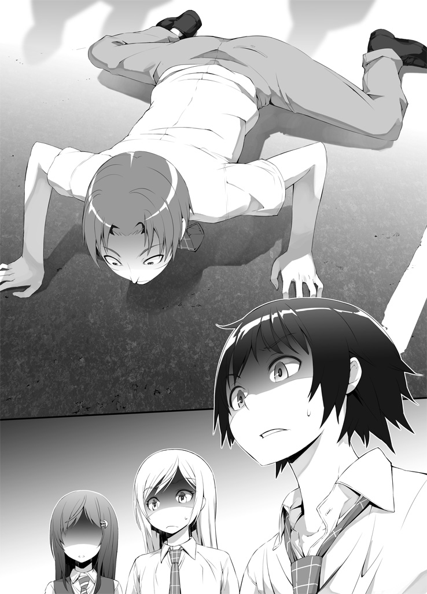
うめくような声が地面から聞こえてきた。見ると、下半身の髪（この場合の下半身は名前のことです。「下半身の髪」という言葉にそれ以上の意味はありません）の中から、下半身が思念契約を結んだ思念塊であるハムスター、天むすが、よろよろと這い出していた。
「なめてはいけない、やつは強いぞ......。下半身君は私の思念力を発動させる暇もなくやられ......ぐっ」
「天むす！ しっかりしろ！」
そんな、下半身と天むすがやられちまうなんて！ どうなってるんだ？ あいつはただの捨て犬じゃなかったのか？
俺が子犬を見つめると、子犬の方もこっちを見返してきた。いや、そういう風に見えただけの錯覚かと思ったが──
「ご、ご主人様を怖がらせるやつはボクが許さない......！」
「なっ......!?」
喋った。子犬が。
コンよりもさらに高い、幼い子どものような愛らしい声で──しかし、その言葉には子どもらしくない負の感情が込められていた。
「こいつ、思念塊か」
アレルギーが冷たい声とともに万札を取り出す。
やべえ、アレルギーが本気になった。こいつは思念塊相手に容赦がない。すぐにでもこの子犬思念塊を滅却しようとするだろう。
確かに、こいつが名前変化思念力の発生源なのだとしたら、ここで滅却しちまえば全て解決するんだろうけど......ふと俺の脳裏に、家で子犬を飼うことを許してもらったと報告に来たときのジョゼ子の顔が浮かんだ。
......ダメだ。俺はあの笑顔を壊したくない。
「コン！」
名を呼んだだけでコンは俺の意図するところをわかってくれて、ひったくりの腕からぴょんと俺の頭に飛び移った。俺はアレルギーとの衝突を覚悟で、アレルギーの攻撃を妨害しようと──
「待って、アレルギーくん」
した直前に、ひったくりがアレルギーを制して子犬思念塊の前に立ちはだかった。
「ここは私に任せて」
「な......」
何をする気なんだひったくり？ 相手は思念塊なんだぞ。普通の人間であるお前にどうにかできる相手じゃないはずだ！
しかし、何を思ったのか、アレルギーは「いいだろう」と素直にその場をひったくりに預けた。
「お、おいどういうつもりだよひったくり」
「大丈夫。心配しないで、涎ちゃん」
そう言って微笑んだひったくりの瞳には──底が見えないほどの深淵より発する微かな光が揺らいでいた。あれは常人にできる目ではない。一つの領域を限界まで極めた達人にのみ到達できる領域にある何かを秘めた目だ。
ひったくりの放つただならぬオーラに、一層警戒心を強める子犬思念塊。しかしひったくりの口調はどこまでも優しく、女神の抱擁のごとき温かさを以て子犬思念塊に語りかける。
「おいで......」
そのたった三文字の言葉とともに差し出された右腕は、ゆっくりと動いているにも関わらずなぜか残像を生みだし、周囲の空気を歪めていた。
「な......何で陽炎が見えるんだ......？」
「気づかないのかい？ 彼女は腕の移動とともに体温を変化させている。体温変化が周囲の空気の密度を変え、光の屈折率に影響を与えているんだ」
なぜか一見それっぽい、しかしよく考えると意味がわからない解説を始めるアレルギー。
「色々突っ込みたい点が多すぎるんだけどもとりあえずそれは何のために必要なんだ？」
「相手に間合いを掴みにくくさせるために決まってるだろう。こういうショートレンジの戦いで最も重要なのは、紙一重の間合いを見極めることだからね。屈折率の変化によって生じる間合いの誤算は、たとえわずかであっても、達人同士の戦いでは勝敗を分かつ重要なファクターとなり得る」
「なるほど......」
おかしいな。バトル漫画だっけこれ？
「大丈夫。怖くないよ......」
「う、うう......！」
落ち着き払った様子でじりじり間合いを詰めるひったくりに対し、子犬思念塊の方は完全に圧倒されて逃げ腰になっている。民家の塀に追い込まれ、後のなくなった子犬思念塊は、半ば自棄になったように咆哮しながらひったくりに突進した。
その瞬間──。
迎え撃つひったくりの腕が十本にも二十本にも、百本にもなったように見えた。
そして気がついたときには、子犬思念塊は地面の上に仰向けにされて服従のポーズを取っており、ひったくりは慈愛に満ちた表情で子犬思念塊のおなかを撫でていた。
「がう！ わう！ ううーっ！」
子犬はまだ荒っぽく吠え立ててうなり声を上げているが、しかしそれに反しておなかを見せたままおとなしく撫でられてしっぽを振っている。
「な、何だ？ あいつ一体どうなったんだ？」
「凄まじい技だ......あまりにも高速かつ的確な撫で撫でだった。あの思念塊は、既に自分が彼女に『懐いている』ことにすら気づいていない......！」
「いやどーなってんだそれ!?」
あれか？ 「お前はもう死んでいる」的なそういう感じか!?
「がるるーっ......はっ!? ボクはいつの間に......」
ようやく自分の状況に気がついたらしい子犬思念塊を、ひったくりは優しく抱き上げて撫で続ける。
「落ち着いて。私たちはあなたに危害を加えるつもりはないんだよ。ただお話を聞きたいだけ」
「そ、そんなの......わふ......信じられない......わふ」
ひったくりの腕の中で撫でられるのがよほど気持ちいいのか、子犬思念塊は尻尾を振るのも忘れて夢心地になっている。しかししばらくして、ひったくりは突然撫でるのをやめてしまった。
子犬思念塊がうろたえた目でひったくりを見上げる。
「ど、どうしてやめちゃうの......？」
するとひったくりは笑顔で、
「私たちの質問に答えてくれたらもっと撫でてあげるよ？」
うわひでえ。焦らしてやがる。
「で、でも......そんな」
「言うこと聞いてくれないの？」
そう言ってひったくりは再び慣れた手つきで子犬思念塊の頭を撫で始めた。そして子犬思念塊の目がとろんとしてきたところでやめてしまう。子犬思念塊はまた懇願するような視線をひったくりに送る。
「お話してくれるよね？」
「......わ、わかりました」
こうして、ひったくりの圧倒的なテクニックの前に、子犬思念塊はあっけなくおちた。
子犬の思念塊は、自らの名を『ポコ』と名乗った。
「ご主人様につけてもらったんです。とっても素敵な名前です」
ご主人様というのは間違いなくジョゼ子のことだろう。
「お前、ジョゼ子に拾われたときはもう思念塊だったのか？」
「いえ、あのときはまだただの犬でした。ご主人様のおうちで飼ってもらえることになって、ボクはとても嬉しかったです。ご主人様はボクのことすごく可愛がってくれました」
「そっかぁ。ジョゼ子さんっていい人なんだね」
嬉しそうに語るポコの様子を見て、ひったくりも頬を緩ませている。
「良かったな。気が合いそうじゃないか」
「うん。ジョゼ子さんに会ったら早速会員登録してもらうよ」
「何の!?」
まあひったくりのことだからどうせ無害な可愛いもの愛好会みたいなもんのことなんだろうけど、会員登録って言葉自体がなんかもううさんくさく感じちゃうんだよな。俺だけだろうか。
「はい！ ボクご主人様のこと大好きです！ だから、その......」
ポコは申し訳なさそうに、道ばたに倒れっぱなしの下半身に目を向けた。
「この変な人が、ご主人様の名前を叫びながら走ってきたから、怖くて混乱しちゃって......」
「ああ、まあそりゃ......仕方ないかも」
それでジョゼ子を守ろうとして襲いかかってきたってわけか。
「そんな話はどうでもいい」
と、アレルギーが高圧的にポコに迫る。
「この名前が入れ替わる騒動を引き起こしているのはお前だな。とっとと思念力を解除しろ」
「そ、それは......できません」
「嫌だというなら滅却するよ？」
「ひっ......」
ドスのきいた声で凄むアレルギーに縮み上がるポコ。
「こ、殺されるのは嫌です......でも、ボクには止められないんです」
「何？」
アレルギーは少し考えるように目を細めた後、懐から千円札を取り出した。
「お、おいアレルギー！ 手荒な真似は......！」
「いいから見てろって」
直後、アレルギーの手の中から千円札が虚空に消えた。その途端、今まで見えなかったそれが浮かび上がるように色と形を持って俺達の視界に現れる。
思念糸──人間の思念のエネルギーがより合わさった糸。
俺達人間や思念塊の体に纏わり付く、思念力の源となるものだ。
思念能力者や思念契約主である俺や下半身、アレルギーの体には大量に巻き付いているが、一般人のひったくりには数本しか巻き付いていない（ただしひったくりの場合はなぜか巻き付き方が幾何学的な模様を描いているのだが）。また、本来は思念塊にも大量に巻き付いているはずなのだが、コンや天むすの体には一本の思念糸しかない。これは本来こいつらに巻き付いているべき思念糸が、思念契約を結んだ主である俺や下半身の方に集まっているからだと、前にアレルギーが言っていた。
そして──同じく思念塊である、ポコの体には。
赤い思念糸が一本しか巻き付いていなかった。
「思念糸が一本......！ え、ってことは、まさか......」
「そういうことさ」
アレルギーが頷いた。
「こいつは既に、そのジョゼ子ちゃんって女の子と思念契約を結んでいる」
５．
「ご主人様は、あなたに助けられたあの日から、あなたのことばっかり考えていました。ノートにたくさんあなたの名前を書いたり、名前占いの本を見て自分とあなたの相性を確かめて喜んだり......」
「......へえ。良かったねヨーダ。モテモテみたいだよ」
「ひ、ひったくりさん？ あの、もうそのあだ名で自由に呼んでくださって構わないんでその目つきだけはやめてもらえませんか？ 夢に出そうです」
「......でもだからこそ、名前も告げず逃げるようにあなたと別れてしまったことをすごく悔やんでいました。あの人にもう一度会いたい、でも会ったとしてもこんな名前を名乗ることなんてできないって......」
「......」
やっぱり、ジョゼ子の悩みはそれか。
「そんなことで」と言い捨てるのは簡単だ。でも、どんな苦しみだって、それがどれだけ苦しいかなんて本人にしかわからない。ジョゼ子が自分の名前のことでどれだけ苦しみ、傷つき、悩んでいたかを、勝手に俺達が決めることなんて絶対できないんだ。
「『この名前をなんとかしたい』......そのご主人様の強い願いを知って、いつからかボクはご主人様の力になってあげたいと思うようになりました。そしてきっと、そう思い始めたときに、ボクは心を手に入れて、今のボクになったんです」
「つまり、ジョゼ子の想いが思念糸としてお前に集まって、お前は思念塊になったってことか......」
それで手に入れた思念力が、『一定範囲内の人間の名前をランダムなものに変化させる』というものだったと。確かに、自分の生活圏内にいる全部の人間の名前をいろんなものにランダムシャッフリングすれば、名前はそれそのものに込められた意味を失い、ただ個人を判別するための記号に過ぎなくなる。
「そうすればどんな名前だって目立ちようがなくなるね。ま、もともと名前の役割は『個人を判別するための記号』なんだから、それはそれでいいような気もするけど」
「良くないだろう......」
と、ようやく起き上がった下半身が言った。
「俺のように日常生活でよく使う単語が名前になってみろ。紛らわしくてしょうがないぞ」
「いや普通『下半身』なんて言葉滅多に使わねーよ」
まあそれはともかく、下半身の言うことには一理ある。普通名詞が個人名になっちまったらすげー紛らわしくて混乱するだろう。
それに──やっぱり俺は、この解決策は間違っているように思う。みんなの名前をおかしくして自分の名前を目立たなくするなんて、アプローチとしてあまりにも後ろ向きすぎるじゃないか。
「コンプレックスをもとにしているからといって、思念力がそのコンプレックスを解消してくれることなんてほとんどないしね。大抵は本人の望みとはまるで見当違いな方向に暴走して、より事態を複雑に悪化させるだけさ。今回なんてまさにそのいい例だよ。いや、悪い例かな。名前が気に入らなかったら自分で改名すればいいだけなのに、思念塊を生み出して、あまつさえ思念契約まで結んでこんな大事にするなんて」
「それを言っちまえばそうなんだろうけど......」
誰だってお前みたいに考えられるわけじゃねえんだよ、アレルギー。
「......んっと？ そういや、まだお前がどうやってジョゼ子と思念契約を結んだか聞いてなかったな」
そう訊くと、ポコは困ったように首を傾げた（その仕草にひったくりが大興奮）。
「えっと、ボクにもよくわからないです。まずその思念契約っていうのがなんなのか......」
「知らねえのか？」
ああ、そういやコンも最初は知らなかったっけ。ポコは思念塊として生まれたてなんだから知らなくても無理ないか。でも、知らないんだったら余計に、何で思念契約を結べたのかが気になるとこだ。
「ボクはこんな風にしゃべれるようになって、これでご主人様とお話できると思ってうれしくて、ご主人様に話しかけたんです。ご主人様は驚いたけど、でも喜んでくれました。ボクはご主人様に、ボクの持っている力のことを教えました。最初はご主人様のおうちの中くらいまでしか名前を変化させることができなかったけど、でもこれからもっと広い範囲で力を使えるように頑張りますって言ったら、ご主人様はとっても嬉しそうに笑って、ボクを応援してくれるって言って......そしたら、急に、ボクの力がご主人様に移ってしまったんです」
「思念力が移った？」
それはつまり......思念契約が成立したということか？
「なるほどね」
「何で納得してるんだよアレルギー。今のってどういうことだ？」
「思念契約を結ぶための条件って覚えてるかい？」
「条件？ えーっと確か、二つあって......」
「契約する思念塊の能力を適合者が正しく理解していること。そしてもう一つは、思念塊と適合者、それぞれが強い意志を持って共通の目的のためにその思念力を使おうとすること、だったか？」
「そう、それだ！」
尤もその条件が成立するためには、前提としてジョゼ子がポコの適合者でなきゃいけなかったんだけど、それはクリアしていたみたいだ......っつーか、もともとポコの素（？）になってる思念糸がジョゼ子の名前に対するコンプレックスに由来してるから、ジョゼ子とポコの相性がいいのは当たり前なのかな？ よくわからんけど。
「その条件を満たせば、『思念契約』という言葉の意味は知らなくても思念契約は成立するんだ。さっきのポコの話だと、ポコはジョゼ子ちゃんに自分の思念力について教えたって言ってたよね。それで一つ目の条件は満たしたことになる。次に、二つ目の条件だけど、ポコの方は最初から『ジョゼ子ちゃんの名前に関する悩みを解決する』ことを目的にしていた。そしてポコの能力を知ったジョゼ子ちゃんは、多分こう考えたんだ──『自分のために頑張ってくれるこの健気な子犬を手伝いたい』ってね」
「あ......！」
合点がいった。そうか、もともとポコの思念力がジョゼ子の悩みを解決するために生まれたようなものだから、偶然条件を満たして思念契約が成立するってことも十分考えられるわけか。
「全く厄介なことになったな。紡績協会が接触する前に勝手に思念契約を結んでるケースなんて初めてだから、扱いに困るよ」
アレルギーは頭をかいてため息をついた。
「とにかく、まずはジョゼ子ちゃんから直接話を聞かなきゃいけないわけだけど......しかしまあ、彼女を捜す手間が省けたという点は不幸中の幸いかもね」
「ん？ お前ジョゼ子の居場所がわかるのか？」
「もう忘れたのかい涎君。ポコはジョゼ子ちゃんと思念契約を結んでいる。だから思念糸が一本しか巻き付いていない」
「いや、そんなことわかって......」
「じゃあこの一本の思念糸は何の役割を果たしていたのでしょう？」
「......あ」
命綱。思念塊と適合者を結ぶ絆の糸。
「ってことは、ポコから伸びてるその思念糸を辿れば、その先に......」
「ジョゼ子ちゃんが居るってことだよ」
「そっか。じゃあもうすぐに会えるってことだな」
これは願ってもない機会だ。俺はジョゼ子から借りたハンカチを握りしめた。
「今からご主人様に会いに行くぜ、ポコ。心配すんな、きっと俺達でジョゼ子を元気づけてやるからよ」
「本当ですか？」
「ああ、当たり前だろ」
名前なんて気にするな──とは言ってやれないけれど、でも、少なくとも名前なんて気にせずに友達になってくれるやつはたくさん居るってことを、ジョゼ子に伝えてやる。
そうすればきっとあいつも、自分以外の人間の名前を入れ替ようなんてことは考えなくなるはずだ。
「そういうことだからみんな、よろしく頼むぜ！」
俺は頼りになる仲間達に振り返って笑いかけた。
「わかっているさハァハァこの俺が可愛い女の子とハァハァ仲良くしない訳がないだろうハァハァ」
「まあ......問題を起こされても面倒だし、表面上は取り繕ってやるよ」
「ポコちゃんが可愛いから全て許します」
「......」
なんか凄い不安な気持ちになった。
６．
それは助是子の望んだ世界とは違っていた。
「えーと、それじゃこの問題を......サラダ！ 答えてみろー」
「はーい」
高校の教室では、冗談みたいになってしまったクラスメイトの名前を、冗談みたいになってしまった名前の先生が大まじめな顔で呼んでいる。それはそれでちょっとおもしろいけど......でも、やっぱりおかしい。
誰にも、両親からの想いが込められた名前がないというのは。
この不思議な力のお陰で、助是子がからかわれることはなくなったけれど、想像していたような解放感はどこにもなかった。
ふとノートに、あの日助けてくれた小柄な男の子が最後に名乗った名前を書き綴ってみる。『日渡陽太』。きっと、太陽みたいな子に育って欲しいという想いを込めてつけられた素敵な名前だ。
きっと彼はもう、この名前を忘れてしまっている。それはとても寂しいことのように思えた。
──あたしには、あたしにだけは、お父さんとお母さんにつけてもらった素敵な名前が残っているのに。
「......こんなんじゃ、だめだ」
呟いて、助是子は授業中の教室に一人で立ち上がった。
「ん？ どーした助是子。体調でも悪いのか？」
「......はい。すみません、保健室に行ってきます」
先生の返事を聞く前に、助是子は教室を飛び出した。そして一直線に昇降口に向かい、家に向かって疾走する。
早く帰って、もう一度ポコに相談してみよう。もっといい方法はないかって。
今度は、みんなの名前もちゃんと残しておけるようにしたい。そうしなきゃ、やっぱりあたしはあの人に、きちんと自分の名前を名乗れない。
そう思って息を切らして走っていたら。
学校前の通り道で、予期せぬ再会は訪れた。
７．
「......よ。また会ったな」
ジョゼ子を捜していたら何やら向こうの方から走ってきた。普通に考えたらまだ高校は授業中のはずだから、きっとサボったんだろう。
「あ、あなた......どうしてこんなところに......」
「えーと、話せば色々あるんだけども......まあ手短に言うとこういうことだ」
俺はひったくりからポコを受け取り、ジョゼ子に見せた。ジョゼ子の目がまん丸くなった。
「こいつに全部教えてもらった。あんたの悩みとかさ」
「ぽ、ポコ！ どうして？ あたし以外の人に喋れること教えちゃだめって言ったでしょ！」
「それなら大丈夫だ。俺達は前から知ってるからさ......こういう変な生き物がいるってこと。な、コン」
頭の上にいるコンに話を振ると、コンは不機嫌そうに鼻を鳴らした。
「うっせー。変な生き物って呼ぶな」
「ぬ、ぬいぐるみが......喋っ......!?」
「ああ。こいつもポコと同じ、思念塊だ」
俺はジョゼ子に近づいていって、ポケットからピンクのハンカチを取り出し、ジョゼ子に手渡した。
「これ返すよ。ありがとな、ジョゼ子」
「別に良かったのに......って、え？」
唐突に名を呼ばれたからだろう、ジョゼ子は驚いた様子を見せた。
「このハンカチの刺繍からわかったんだ。あんたの名前」
「あ、そ、そうなんだ......」
ジョゼ子は顔を赤くして俯いてしまった。
今ジョゼ子は、一体何を考えているのだろう。名前が俺に知られていたことを知って、気まずい思いをしているのだろうか。
「ジョゼ子」
「は、はいっ」
「俺は、あんたが名前のことで悩んでるのを知っている」
「はい......えと......そう、なの？」
「ああ。俺には、そのことであんたがどんな思いをしてたのかはわからないけど......でもさ、一つだけ言えることがある。俺はあんたの名前がなんだろうと気になんかしねーよ。絶対バカになんかしない」
俺がそう言った途端、ジョゼ子の目がほんの少し輝いた。
「ほ、本当？」
「当たり前だろ！」
ジョゼ子の素直な反応が嬉しくて、俺は自然と笑顔になった。そして少し、調子に乗ってしまった。
「だから別に、ジョゼ子って名前がちょっと変わってることなんて、全然気に病んだりしなくていいんだぜ！」
「......え......」
小さく息をのんだ音が聞こえ、ジョゼ子は俯いてしまった。そしてなんだか雰囲気がいきなり重たくなった。
......あれ？ どうしたんだ一体？ なんだこの空気。俺今そんなにまずいこと言ったか？
おそるおそるジョゼ子の顔をのぞき込んでみると、なんと、......泣いている。目尻にいっぱい涙をためて、それが零れないように必死に耐えている。
「え!? あ、ちょっと、あの......!? ええ!?」
泣かせちゃった!? 嘘、なんで!? 一体何が地雷だったんだ！
「そっちじゃ......ない」
ジョゼ子は涙の混じった声で、静かに言った。
「助是子って名前は......お父さんとお母さんが、一生懸命つけてくれた名前だから。名前じゃないの......あたしが嫌だったのは、そっちじゃない」
わけがわからない。どうなってんだ。ジョゼ子はジョゼ子って名前が嫌でポコと思念契約をむすんだんじゃなかったのか。助け船を期待して振り返っても、ひったくりも下半身もアレルギーも、皆一様に戸惑った顔をするばかり。
「あたしが嫌なのは、名字の方よ！ あたしの名字はコウグチ！ 工作の工に、口で、コウグチよ！」
「こ、コウグチ......？」
名字が嫌、だと？ しかしそう言われても......コウグチなんて至って普通の名字、別に何もおかしなところなんて......
──工作の工に、口。
はっ、と目が覚めたように閃いた。
「まさか......！」
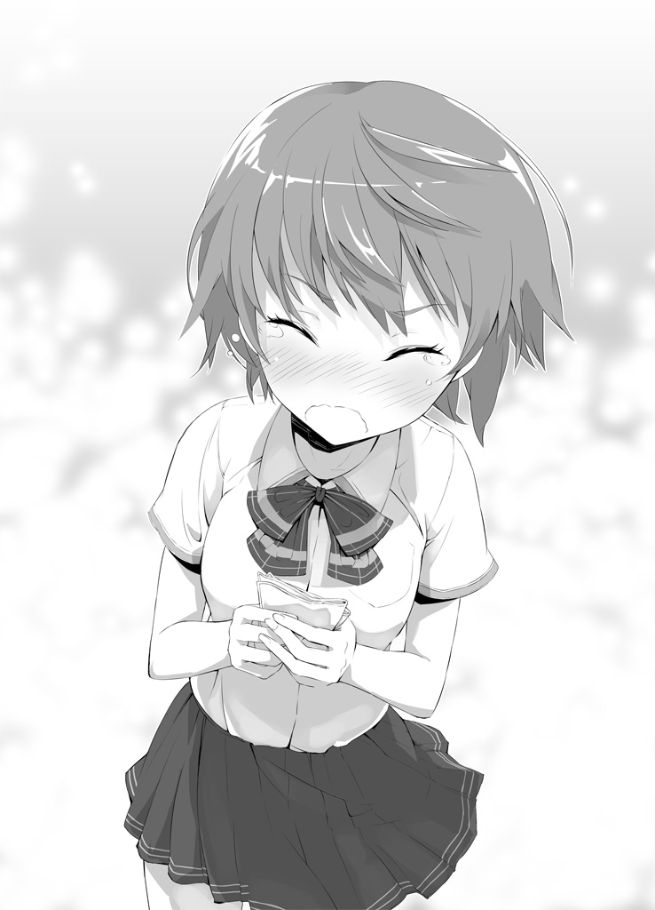
コウグチ。
工、口。
工口......
エロ!?
「......あ、あああああっ！」
気づいてしまった。
「工口」──それは、漢字で書いたらカタカナの「エロ」にしか見えない恐るべき名字。
「わかんないでしょ......！ 署名するたびにクスクス笑われたり、新任の先生に『誰だー答案にふざけた名前書いたやつはー！』ってさらし者にされたり、印鑑作ってもらうときに業者さんに『本当にこれでいいですか？』って何度も確認されたり、できた印鑑を友達に『エロ認定ハンコ』なんて不名誉な呼び方されたり、そんなことばっかりだったあたしの気持ちなんて！」
「う、ううっ......」
「小さい頃からこの名字のせいで、男子に『エロいエロい』ってからかわれてばっかりで......あたしの反応をみんな喜んでエスカレートして、あたしは本当に嫌だったのに何度も何度も言われ続けて！」
ま、まさか......ジョゼ子の思考がやたらとエロい方向に敏感だったのは、名前のせいでからかわれ続けたことが原因だったのか？
「あたしだってもっと可愛い名字がよかったのに！ 何の気兼ねもなく名乗れる普通の名字がよかったのに......！」
「ジョゼ子......」
よく考えてみれば、仮に「ジョゼ子」という名前を嫌っていたのだとしたら、その名前の刺繍が入ったハンカチを持ち歩いているはずがなかったのだ。そして俺に自宅を見せないようにしていたのも、今考えれば、名字の書いてある表札を見られたくなかったからなのだろうと推測できる。『一定範囲内の人間の名前をランダムなものに変化させる』というポコの思念力も、重要な点──ジョゼ子が一番望んだことは、名前を変化させること自体ではなく、それによって名字を消すことだったのだろう。
顔を覆ってさめざめと泣き出してしまったジョゼ子。くっ......た、確かにジョゼ子の悩みを勘違いしてわかったようなことを言ってしまったのは俺が悪い。
でも、ジョゼ子の悩みが名前のことだろうと名字のことだろうと、俺の伝えたいことは変わらないんだ。
ジョゼ子の名字が何であろうと、俺は、俺達は気にしない。そのことを言葉で伝えようと、俺は俯くジョゼ子のか細い肩に手を伸ばし──
「......許さない」
背後から凄まじい迫力の籠もった声聞こえて、俺ははっと振り返った。
ひったくりに抱えられたポコの体から、何か......どす黒いオーラのようなものが立ち上っている。
「ぽ、ポコ......？」
「よくもご主人様を泣かせたな......」
それはさっきまでの可愛らしい子どもの声とは全く異なっていた。腹の底から立ち上る黒い怨念がそのまま空気を振動させているような、世にも恐ろしい怨嗟の声だ。
「絶対に許さないっ！」
ポコはひったくりの腕を飛び出して俺に躍りかかってきた。
「う、うわぁ！」
「涎！」
ポコの牙が届く直前に、下半身が瞬間移動して俺を助けてくれた。
「な、何だ急に......!?」
ポコはジョゼ子の前に着地し、俺達に牙を剥いてうなり声を上げる。
「ご主人様はボクが守る！」
いや、守るも何もこっちは別に何もする気はないんだけど......と伝える暇もなく、いきなりポコとジョゼ子の間を繋ぐように一本の巨大な赤い思念糸が出現した。いや──あれはもともと契約主であるジョゼ子とポコとを繋いでいた命綱の思念糸だろうから、出現というよりは実体化といった方が正しいのだろうか。それにしても、さっき見たときよりずいぶん巨大化してるみたいだけど......。そしてその赤い思念糸は、それ自身が意思を持っているかのようにジョゼ子に巻き付き、ジョゼ子の体を縛り上げてしまった。
「な、何!? きゃああっ！」
「ジョゼ子！ おいポコ、やめろ！ お前がジョゼ子を傷つけてどーすんだ！」
「うるさい！ ボクが......ボクがご主人様を守るんだぁーっ！」
ポコが絶叫した瞬間、俺は信じられない光景に目を疑った。
拘束されたジョゼ子の体からいくつもの真っ赤な思念糸が伸びてポコに吸い込まれ、その途端にポコの体がミシミシと骨のきしむ音を立てて一気に膨れ上がった。そして、腕の中に余裕で収まるサイズだったポコはあれよあれよという間にアフリカゾウをも凌駕するほどに巨大な猛獣に成長──いや、変身してしまったのだ。
「グォオォオォオオオォオォオォオオオォオォォオオ!!」
「えええええ───!?」
なんじゃこりゃあぁー！ さっきまでの愛らしい子犬の姿がもう見る影もないよ！ こんなの地獄の番犬ケルベロスだよ！
「あ、ああああああアレルギー！ どうなってる!? どうすりゃいいんだこれ!?」
ケルベロスと化したポコは咆哮しながら暴れまくっている。とてもじゃないが手に負えない。攻撃しようにも、ポコの背中にはどうやら気を失ってしまったらしいジョゼ子がぐったりと倒れているので、彼女に当たる可能性を考えたらうかつに手を出せない。
「落ち着け！ とにかくいったん退くぞ！」
アレルギーが数枚の千円札をばらまくと、辺りが煙幕に包まれた。その隙に下半身が天むすの思念力を発動し、俺達は瞬間移動して辛くもその場から撤退した。
８．
ジョゼ子と再会した地点から二～三キロ離れた公園で、俺達は体勢を立て直しつつ今後の作戦を考えることにした。
「なんだったんだありゃ？ ポコは一体どうしちまったんだ？」
あの突然の豹変っぷり、加えて思念糸の実体化......。これはまるで、あのときの──
「なあ、下半身アレルギー」
「くっつけて呼ぶな。何だい涎君」
「さっきのポコの暴走、あれってこの前のユークリッド幾何学のときと様子が似てないか？」
ユークリッド幾何学のときも、突然ユークリッド幾何学自身は意識を失い、彼女の思念糸が実体化して恐ろしい化け物に変貌してしまった。
共通していない点ももちろんあるけれど、それにしても今のポコの状態を、ユークリッド幾何学のときに起きたことと切り離して考えるのは無理がある。
「確かにそうだね。けれどそれは当たり前のことじゃないか？ 思念糸の暴走っていう、あのときと同じことが起きてるんだから」
「いや......でも、じゃあポコは今何で暴走してるんだ？」
「......慕っていたジョゼ子ちゃんの涙を見て興奮したんじゃないか？」
「そんな原因で？ そんな原因であんな化け物になっちまうのか？」
ジョゼ子が泣いたのは、......まあ確かに俺のせいではあるかもしれないけど、自分の悩みを誤解されてたことと、自分の口から本当の悩みを吐き出したことで感情がメーターを振り切っちまって、自分でも原因がよくわからないまま涙が溢れてきた──って解釈で大体当たってると思う。
言ってしまえば、あれは衝動的な涙だ。泣かせちまったのは悪いと思うけど、でも落ち着けばすぐに泣き止んだだろうし、その後でちゃんと話をすることだってできたと思う。
あれを見て暴走したって言うなら、ポコはジョゼ子が泣く度に、その理由にかかわらず化け物に変身するってことになる。そんなことがあり得るのだろうか？
同じような暴走が起きているにもかかわらず、今回のポコの場合と前回のユークリッド幾何学の場合では、なんて言うか......原因の深刻度？ みたいなものが全然違っている気がする。
「何が言いたいんだ、涎君」
「だから......その、ポコの暴走には、なんか別に原因があるんじゃないかってことだよ」
「......どうだろうな。今の状況では何とも言えないよ」
「......」
何だ？ 何か歯切れ悪くないかこいつ？ それに──やけに落ち着いているように思える。ユークリッド幾何学が暴走したときはもっと焦ってたじゃねえか。
「アレルギー、お前......」
なんか隠してるんじゃないのか？ そう尋ねようとしたとき、隣からひったくりに袖を引っ張られて、俺は言葉を飲み込んだ。
「涎ちゃん」
「どうした、ひったくり」
「なんか......私の胸から出てるんだけど」
「胸」という言葉に下半身がめざとく反応した。
「ん？ 母乳かい？」
それはおそらくひったくりの人生史上最高の一撃だっただろう。見事な弧を描いた垂直金的蹴りが炸裂し、下半身の下半身は完全に使い物にならなくなった。さようなら下半身。
「これ」
とわざわざ指差されなくても、ひったくりの胸部から伸びている「それ」に俺はすぐ気がついた。
赤い糸──この太さでは赤い縄といった方がいいかもしれない──が、ずーっと長く、公園の外に向かって続いている。伸びている先は、......さっきジョゼ子と再会した方角だ。
俺達は顔を見合わせた。
「これ、まさか......」
おそるおそる、赤い縄の伸びる方角に目をこらしてみると──
「ガァアアァアアアアァァァァアアァアアァア」
「なんかめっちゃ走ってきてる────！」
赤い縄を辿るようにして、凄まじい勢いで魔獣ケルベロスと化したポコが迫っていた。
「やっぱりそれはひったくりちゃんとポコを結んでいる思念糸のようだね。お陰で向こうからこっちの位置が丸わかりだ」
「何でそんなもんが繋がって......って、考えてる暇はねえ！ 下半身、逃げるぞ！ もう一度思念力を頼む！」
しかし倒れ伏して泡を吹く下半身からは返事がない。代わりに髪からい出した天むすが応えて曰く、
「だめだ！ 下半身君はもうすぐ女の子として生まれ変わるからそれまで待っていて欲しいそうだ！」
「天むすー!? お前まじめな顔とダンディな声して何とんでもねえこと言ってんだ!?」
「今回の帯に載せる台詞はこれで決まったね」
「やめろやぁああぁああ！ だーれも買わねーよそんな内容が五里霧中の本！」
楽しいやり取りをしている間にポコに追いつかれてしまった。
くそ、下半身がいないと機動力が足りなくて逃げられない。ここで迎え撃つしかない！
俺達はうなり声を上げて襲いかかってくるポコの猛攻を避けながら、ひとまず公園内にポコを誘い出した。流石に平日の午前中、この小さな公園には人っ子一人いない。
「ここなら存分に戦える！ いくぞコン！」
「言われなくてもわかってらぁ！」
俺は頭の上に乗っかっているコンの思念力を使って、地面の中の石を混ぜ合わせて武器を作ろうとした──しかしそのとき。
「『石よ、飛べ』」
すっかり悪役低音ボイスになってしまったポコの声が響き、次の瞬間、公園中に転がっていた石ころが全て空中に浮かびあがった。
「な......何ィ!?」
「『石よ、降れ』」
すると今度は浮かんだ無数の石が雨あられと降り注ぎ、俺達の体をしたたかに打ち付けた。
「やべっ......ひったくり！」
俺は咄嗟にひったくりの前に立ち、思念力を発動して襲い来る石つぶてを全て自分の体と融合させた。お陰で俺の体ははうごくせきぞうのようになってしまったが、ひったくりに怪我はなかった。
「大丈夫か、ひったくり」
「う、うん。ありがとう涎ちゃ──」
がくん、と台詞の途中でひったくりの体が不自然につんのめった。何事かと思って見ると、ひったくりの胸のちょうど谷間の辺りから伸びた赤い思念糸がポコに引っ張られ、ひったくりの体もそれにつられてしまっているのだ。
「ひったくり！」
慌ててひったくりの腕を掴んだが──恐ろしい力で引っ張られる。大量の石と融合したことが幸いし、重くなった俺の体ごと引きずられることはなかったが、しかしポコと俺の両方から引っ張られるひったくりの体にかかる負担は凄まじいものだった。
「あ、ああ......っ......くぅう......！」
苦悶の表情を浮かべるひったくり。やばい、このままじゃひったくりの体が千切れちまう──！
ひったくりの苦しむ様子に、俺は一瞬力を緩めてしまった。それが仇となり、隙を突いて一気に引っ張られたひったくりの体は軽々と宙を舞ってポコの背中の上に飛んでいった。
「ひ、ひったくり──────っ！」
ちくしょおぉおぉおぉお結構なピンチなのに名前が酷いせいで全然緊張感がでねえ！ これじゃあただのひったくりに遭った人の叫びじゃねーか！ このあと「誰かそいつを捕まえてーっ！」って続きそうじゃねえか！
「バカ野郎、なんで放した！」
頭上でコンが怒鳴る。だってしょうがねーだろ！ あれ以上引っ張ったらひったくりが壊れちまうところだったんだから！
「くそ、ポコ！ ひったくりを返しやがれ！」
「下がってろ涎！」
鋭い声とともに、背後からアレルギーが数枚の万札をポコに投げつけた。万札は途中で燃え上がり、炎の弾丸となってポコに向かっていく──だが、
「『すべり台よ、我が前へ』」
ポコがそう言うと、公園に設置されていたすべり台が動きだし、なんと言葉通りにポコの前に飛んでいき、そしてアレルギーの攻撃を防ぐ盾になった。
「なんだと......!?」
「『鉄棒よ、踊れ』。『ブランコよ、舞え』。『雑草よ、絡みつけ』」
次々とポコの言ったことが現実になっていく。鉄棒やブランコが動き回って俺達を攻撃してくるし、そこら中に生えている雑草が足に絡みついて動きを阻害する。
「まさかあいつ......名前言ったもんを自由に操れるのか!?」
元々持っていた『名前をランダムなものに変化させる』思念力が進化したのか!? だとしたらなんて強力な思念力だ！
「どーすんだよアレルギー！ 名前さえありゃ何でもできるやつ相手にどう戦えばいい!?」
「確かに厄介だけど......でも、僕も攻撃のバリエーションには少し自信があるんだよ！」
アレルギーは大量の万札を空中に展開させて陣を作り、ブランコと鉄棒を雷で一気に吹き飛ばした。そしてそのまま、陣から生み出した雷でポコを攻撃する。
「『雷よ、消えよ』」
ポコの言葉で雷はポコに届く前に消滅してしまう──しかし、
「甘い！」
アレルギーは矢継ぎ早に様々な種類の攻撃を繰り出した。風の刃、水の弾丸、土の鞭──まるでＲＰＧの魔法のように派手で色鮮やかな攻撃が次から次へとポコに襲いかかる。ポコに名前を呼んで防御する暇さえ与えず、物量で徐々に追い詰めていくアレルギー。
「すげー！ アレルギー、お前やっぱり強かったんだな！ だ、だけどそんな攻撃して大丈夫か!? ひったくりとジョゼ子に当たってねえだろうな！」
「心配しなくていい、ちゃんと手加減はしてるさ！ さあ......これで終わりだ！」
アレルギーは最大の攻撃を繰り出さんと力を込めて、陣に残っていた全ての万札がまばゆい光を放った。それが発動すれば決まりと思われたが──しかし。
「『一万円札よ、消えよ』」
その言葉一つで、万札の陣は跡形もなく消え去り。
あっけなくアレルギーの攻勢は終了した。
「......あれ？」
アレルギーの顔が真っ青になる。おいちょっとまて、これはひょっとして......！
「『木よ、飛び交え』」
「どわぁああぁああ！ やっぱりかよー！」
公園の木が根元から抜けて暴れまくる。俺達はたまらず残っていたドーム型の遊具の陰に逃げ込んだ。
「アレルギーお前なぁ！ 何でいつも肝心なとこで使えねーんだよ、それでも専門家か！ 思念塊と戦うためのなんかスゲー秘密組織とかに所属してるんじゃなかったのか！」
「うるさいな！ 君達と一緒のときはいつも相手が特殊すぎるんだよ！」
「とにかくどーすんだよ！ 名前言うだけでどんなもんでも操れる思念力とか、勝てるのかよあんなやつに！」
「......」
アレルギーは無言で携帯を開いた。少しの間アドレス帳を調べた後、懐から取り出した千円札と引き替えにバスケットボールを生み出した。
「なんか、取り寄せバッグみたいだなお前の思念力って......」
「その認識で大体あってるよ」
アレルギーは遊具の陰から飛び出して、ポコにバスケットボールを投げつけた。当然そんなものが通じるはずもなく、ポコはボールを前足で軽く弾いてしまった。
「......なるほどね」
一見意味のない行動に思えたが、しかしアレルギーは何かを掴んだらしい。にやりとほくそ笑んで遊具の陰に戻ってきた。
「ポコの思念力は強力だけど、無制限ってわけじゃなかった。いくつかの使用条件を見つけたよ」
「！ ほ、本当かアレルギー！」
「ああ、まず──」
ふ、と頭上に影が掛かった。
ポコの前足だった。今まさに俺とアレルギーを踏みつぶそうとしている。
「やっば......！」
避けられない──と思ったときには、ふわりと体が浮き上がる感覚とともに俺達の体は安全地帯へと瞬間移動していた。肩を支える手の感触にはっと後ろを振り返ると、そこには満面のドヤ顔をした下半身がいた。
「待たせたわね！ 私、生まれ変わったわ！」
「女の子になってる──!?」
そんなわけあるか。普通に男だわ。ただ喋り方が気持ち悪くなっただけの下半身だわ。
「ふむ、冗談はこれくらいにして。俺が寝ている間になかなか厄介なことになったようだな、涎アレルギー」
「くっつけて呼ぶな。ちょうど今その対策を伝えようとしていたところさ」
ポコが俺達を見失っている隙に、とアレルギーはポコの思念力の制限について語り始めた。
「まず一つめ。ポコの思念力は、視界に入っているものにしか効果を発揮しない。......あいつはさっき一万円札を消したけど、その効果はあいつに見えなかった僕の懐の中にまでは適用されていない」
と、アレルギーは制服の内ポケットから無事だった一万円札を取り出して見せた。
「二つめ。ポコが、以前の『一定範囲内の人間の名前をランダムなものに変化させる』という思念力で変化させた人名に使用した名前のものは、操ることができない」
「......ん？ それってどういうことだ？」
「さっき僕がポコにバスケットボールを投げたのを見ただろう。防ぎたければバスケットボールの名前を言って操れば良かったはずなのに、あいつはそうせずに自らの手で弾いた。バスケットボールを操ることができなかったからだ。それはなぜかというと......」
アレルギーは自分のアドレス帳を俺と下半身に見せた。確かにそこには、「バスケットボール」の文字があった。
「バスケットボールが既に人名として使われていたからポコに操ることができなかった、と言いたいのか？ しかし、それだけで決めつけるのは早計では......」
「じゃあなんでポコは、直接僕達の名前を呼んで操ろうとしないんだい？」
「あ」
そうだ、確かに考えてみれば、わざわざ公園にあるものを使って攻撃しなくても、俺達の名前を呼んで操ってしまえばそれが一番手っ取り早いはずだ。それをしてこないのは、......それができないから、と考えるのが自然だ。
「バスケットボールは確認のためだよ。あれではっきりした。ポコは名前変化に使ったものと、そして名前を変化させられた人間自体は操ることができない。これだけわかってれば十分勝機はある」
「そ、そうだな。少なくとも俺達自身が操られることはないわけだから、逃げ回ることはできるじゃねえか」
「それだけではないぞ涎。何が人名に使われているかわかれば、ポコが何を操れないのかを知ることができる。操れないものを見極められれば反撃に転じることもできるだろう」
「よし、じゃあとにかくお互いのアドレス帳の内容を教え──」
「『木よ、貫け』」
低い声と同時に数本の木がまるごとすっ飛んできて、俺達は慌てて散開した。
「流石にいつまでもゆっくりさせちゃもらえないか！」
逃げ回りながらアドレス帳をチェックする。その中で何かポコを攻略できるヒントになるものはないか──
「『消臭剤』『無線ＬＡＮ』『漏斗』『アボカド』『カシオペア座』......くそっだめだ、こんなもんが操れなくたって何の意味もねえ！ そっちはどうだ、下半身！」
応えて下半身が携帯を見ながら叫ぶ。
「『ハンバーガー』『チーズバーガー』『チキンナゲット』『フライドポテト』『ビッグマック』『チキンタツタ』『クォーターパウンダー』『アイコンチキン』はポコには操れないことがわかったぞ！」
「どんだけ偏ってんだお前のアドレス帳はぁあぁあああぁあ！ それもうただのマックのメニュー表じゃねーか！」
「つまりマクドナルドに連れて行けばやつの思念力はほぼ無効化できるというわけだな！」
「できるかぁああぁぁあ！」
「こっちは有益な情報だ涎君！ 『土』、それから『地面』も、あいつには操ることはできない！」
「マジか！ よっしゃあ！」
それがわかればこっちにも打つ手はある！ 俺は逃げていた足に急ブレーキを掛け、ポコの方に向き直った。公園内のものを操ってもなかなか仕留められないことにしびれを切らしたのか、ポコはその巨大な体躯で自ら攻撃しようとこっちに突進してくる。
「やるぞ、コン！」
「おう！」
俺は地面に手をついてコンの思念力を発動させた。思念力が伝った地面は液状化し、全てを飲み込み混ぜ合わせてしまう底なし沼となる──これはコンの得意技だ。
まっすぐに突っ込んできたポコはそれに気づかず、落とし穴にはまったように地面に足から飲み込まれ始めた。ポコは必死に脱出しようとその巨体をもがかせるが──無駄だ、地面も土も操れないんだったら、地球と一体化するまでこの技から逃れることはできない。
「......って、動き止めたのはいいけどこっからどうする？ まだあいつの背中にジョゼ子とひったくりが乗ってんだけど！」
「心配しなくていい」
いつの間にか隣に立っていたアレルギーが、一万円札を取り出してナイフのように構えた。白い光が刃になって万札を包みこむ。
「僕がポコとひったくりちゃんを結んでいる思念糸を切断する。そうすればポコの暴走も止まるはずだ」
「思念糸を切断って、そんなことできんのか？」
「......まあ、実際やるのはこれが初めてなんだけど。ちょうどいい試し切りさ」
何がちょうどいいのか、そしてなぜジョゼ子とポコを結ぶ思念糸ではなくひったくりとポコを結ぶ思念糸を切断することでポコの暴走が止まるのかは疑問だったが、しかしそんなこと今は後回しだ。
「わかった、頼むアレルギー！」
アレルギーは頷き、光の刃を振り上げてポコに向かっていく。地面も土も操れず、身動きが取れないポコにアレルギーの一撃を避けることはできるはずもなく──
「『砂鉄よ、噴き出せ』」
「何っ──!?」
次の瞬間。
膨大な量の砂鉄がポコの周りの地面から巻き上がり、攻撃態勢に入っていたアレルギーと、そして俺に襲いかかった。
「ぐああぁあぁっ！」
完全な不意打ちに俺もアレルギーも対処ができず、もろに攻撃を食らってしまう。
俺の体勢が崩れたことでコンの思念力は中断され、ポコは沈みかけていた体を地面から引っこ抜いた。
「『砂鉄よ、槍となれ』」
ポコの命令に従い、砂鉄が集まって空中に無数の小さな槍が生み出される。
「『槍よ、降り注げ』」
その言葉とともに、猛攻が始まった。
鉄でできた槍の殺傷力は今までの攻撃の比ではなく、足下の地面に深々と突き刺さる様子は、それが体に命中したときのダメージを雄弁に物語っていた。
「うわっ......こ、これやべえぞマジで！」
振り出しに戻っちまった、つーかもっと状況が悪化した！ さっきの技はもう通じないだろうし、次はどうやって動きを止めろって言うんだ──！
「危ない、涎！」
下半身の怒声が聞こえたときには遅かった。槍の一本が俺の右足を掠め、俺は派手に地面を転がった。
「いって......くっそぉ！」
負けられない。ここで俺達が倒れたら、誰がジョゼ子とひったくりを助けるんだ。
歯を食い縛って立ち上がろうとしたとき、ふと、さっき俺とアレルギーが隠れていたドーム上の遊具が目に入った。
......そういえば、あのときポコはどうして、この遊具を操らずに直接前足で俺達を攻撃してきたんだろうか。
この遊具を操れなかったから？ じゃあこれの名前は既に誰かの人名として使われているってことだろうか。......でも、俺にはこの遊具の名前なんてわからないぞ......
──そう思ったとき、唐突に閃いた。
ポコも、この遊具の名前なんて知らないんじゃないか？
今のポコの思念力は、名前さえ知ってれば何だって自在に操ることができる超強力なものだ。でもそれって、裏を返せば......。
「ふ......ふふふふふふ」
「お、おい......どうしたんだよ涎。おい！」
コンが不安そうに俺の頭を叩いてくる。
「しっかりしろバカ！ ひったくりを助けるんだろ！ こんなとこで頭おかしくなってる場合じゃ......」
「心配すんなコン！ もう勝ちは見えたぁ！」
俺は立ち上がると同時に、近くに転がっていたすべり台の残骸に触れ、腕に融合させた。そして。
「うおりゃぁああぁあああぁあ！」
すべり台の残骸をやたらめったらに振り回し、ぶつかったものを全部融合させて、一つの巨大な塊を作り上げていく──ポコが荒らしまくったお陰で公園は散らかり放題だ、今更めちゃくちゃにしたって大して関係ねえ。ジョゼ子に絡んでいた不良にやったのと同じことを、今度は公園にあるものを使ってやってやる！
ポコが鉄の槍を降らせてくるが、しかし俺はそれすらも融合させ、塊を更に巨大化させる。やがて公園内のほとんどのものを融合させた俺の腕は、もう何が何だかわからないけどとにかく巨大な「なにか」になって、そして俺はその「なにか」をポコに向かって振りかぶり──
「どうだポコ！ 『これ』の名前がわかるか！ お前にこいつを操れるかぁ！」
「......グ、ウゥ......！」
やっぱりだ。ポコは「名前がわからないもの」を操ることができない！ だったら、当然、今俺がこの公園のあり合わせ素材を混ぜ合わせて作り出した、出来立てほやほやで名前のない「これ」を操ることなんて出来っこない！
「『これ』の名前はなあ......！ 実は俺にも！ よくわからないぜぇえええぇえええ！」
全く決まらない決め台詞とともに、俺はよくわからないなにかを使ってポコの巨体を殴りつけた。同時に思念力を発動し、よくわからないないかをポコの体と混ぜ合わせて動きを封じる。
「さらに、これで......どうだ！」
俺はよくわからないなにかの一部を変形させてポコの口を覆い、言葉そのものを発することが出来ないようにした。これでもうポコは思念力を使えない。今度こそ完封だ。
「よし......！ あとはアレルギーに、ひったくりとポコを繋ぐ思念糸を断ち切ってもらうだけ──」
──だったのだが、ここまで追い込まれてもまだポコは暴れるのやめようとしない。逃げられないことはわかっているはずなのに、何とか拘束から脱しようと全身をばたつかせてもがく。これじゃあアレルギーが狙いをつけられない。
「もう無駄だ、諦めろポコ！ そこまでして抵抗する意味があるのかよ！」
「嫌だ......」
と、そのとき突然響いた声は、ポコのものではなかった。
「何だ......!?」
ポコの背中の上に、人影が立ち上がった。あれは──思念糸によってポコの背中にくくりつけられていたはずの、ジョゼ子だ。立ち上がったジョゼ子は、しかし目が虚ろで、どう見ても正気ではない。まるで催眠術に掛かっているようだ。
「もうこんな名字は嫌......。みんなにからかわれて、いじめられて......あたしが悪いわけじゃないのに、あたしは何もしてないのに、どうしてこんなに苦しい思いをしなきゃいけないの......？」
虚ろな目で呟くように紡がれるジョゼ子の言葉。これは──ジョゼ子の心の声だろうか。
「『そんな名字なんだからどうせエロいんだろ』なんて心ない言葉で、あたしがどれだけ傷ついてきたか......誰もわかってくれない......」
「う......」
疲れた表情と言葉から、ジョゼ子の悩みの深さがうかがえる。そしてジョゼ子の表情が沈むほどに、ポコの抵抗も激しくなっていく。まさか、ジョゼ子の負の感情がポコに力を与えているのか？
「あたしがこんな名字に生まれてきてしまったのは誰のせいでもない。だから誰も恨むことができない。どんなに嫌でも改名することも出来ずに、あたしはこれからもずっと、からかわれてバカにされ続けながら生きていくしかないのよ......」
そうか、だからジョゼ子はずっと一人で悩みを抱え込んでいたんだな。名字は選ぶことができない、しかも名前と違って誰かの意志でつけられるわけじゃない。その上、戸籍や防犯の関係上、「名字をからかわれるのが嫌だから」なんて理由じゃきっと改名の許可は下りないのだろう──いくらジョゼ子が悩んでいたとしても。
ジョゼ子の悩みはきっと、周りの人間が思っている以上に深刻だったのだ。コンプレックスから思念糸を生んで暴走させてしまうほどに。
「そんなことねえよ......」
──だけどそんなジョゼ子の悩みを和らげるために、俺がしてやれることはあるはずだ。
「そんなことねえよ！ 少なくとも俺は、俺達はお前の名字がなんだろうが気にしない！ 絶対バカになんかしない！」
「あなたがそうでも、そうじゃない人の方がずっと多いもの......」
「だったらそのときは俺に言え！ お前を傷つけるやつがいたら、また俺がぶっ飛ばしてやる！ この前みたいにさ！」
はっ、とジョゼ子が息をのみ、虚ろだった瞳に微かな光が戻った。
「......本当に？」
「当たり前だ！ そんで、それでもどうしてもその名字が受けいれられないんだったら、そんときは......俺が、何とかしてお前の名字を変えてやるっ！」
「っ......！」
ジョゼ子は一瞬で真っ赤になり、顔面からぼわっと湯気が出た。まるで瞬間湯沸かし器だ。同時に、ポコの動きがぴたりと止まった。
「──よくやった、涎君」
今までどこに隠れていたのか、アレルギーがどこからともなくポコの背中の上に降り立ち、そのまま流れるように例の白い光刃でひったくりの胸から伸びる赤い思念糸を一刀両断した。その瞬間、ポコの体に絡みついていた赤い思念糸は一斉に、星が爆発する瞬間のようなまばゆい光を発して──そして、ジョゼ子とポコを繋いでいた一本を残して、全て消滅した。
９．
思念糸が消え去ると、ポコは元通り小さな子犬の姿に戻った。俺は倒れている光里に駆け寄ってその体を抱き起こした。
「光里、おい光里！ 大丈夫か!?」
ぺちぺちと頬を叩くと、光里はゆっくり目を開けた。
「陽ちゃん......」
「光里......よかった、無事だったか」
「......陽ちゃん、名前が」
「え？ あ......本当だ、思い出せる！」
日渡陽太。それが、父さんと母さんにつけてもらった大切な俺の名前だ。やった、ようやく思い出した......！
「良かったね、陽ちゃん」
そう言って俺の腕の中で微笑むこの女の子は、宇月光里。俺の幼なじみで、家族のような存在で、そして......どちらにしろ、俺にとって凄く大切な女の子だ。
コンが俺の頭から飛び降りて「心配かけやがってコノヤロー」と文句を言いながら光里にすり寄っていく様子を見て和んでいたら、
「どうやらやっとポコの思念力が完全に解けたようだ。今回はお手柄だったよ日渡君」
「流石俺の親友だな、陽太」
振り向くとそこには、一緒に戦ってくれた二人の仲間の姿が。
「二人ともありがとな。天川、そして下半身」
「俺の名前だけ直っていない!?」
「さて、これで残る問題は......」
天川は気を失っているジョゼ子と目を回しているポコに視線をやった。嫌な予感がした。
「お前、まさかポコを滅却しようとか言い出すんじゃ......」
「......あの暴走っぷりを見てまだポコを庇うつもりなのは恐れ入るけれど、安心しなよ。もうジョゼ子ちゃんと思念契約を結んでいることだし、ポコのことは見逃してやる」
「え、いいの？」
「ジョゼ子ちゃんと一緒に居ても今回みたいなことはもう起こらないだろうしね」
......なんだろう。天川にしてはやけに甘い評定だ。つーか、「今回みたいなことはもう起こらないだろう」って言えるってことは、天川はやっぱりポコが暴走した本当の原因は「ジョゼ子が泣いたのを見て興奮したから」じゃないってことを知ってるんじゃないのか......？
「う......」
と、そんなことを考えているうちにジョゼ子が目を覚ました。
「ジョゼ子！ 無事だったか？」
「っ......！」
しかしジョゼ子は、俺の顔を見た途端に弾かれたように飛び退いて、金魚のように口をぱくぱくさせながら顔を真っ赤にしてしまった。
「な、なんだ？ どうした？」
「ど、どどどどどそそそそそそそあああああああ」
「な、なんて!?」
ジョゼ子は意味不明な言葉を発しながら、へなへなと膝から崩れてその場にへたり込んでしまった。
明らかに様子がおかしい。まさか、長時間ポコに繋がれていたことで体調を悪くしたとか？ 顔もすげー赤いし、熱があるのかも......。
「大丈夫だったか？」
俺が近づいて顔をのぞき込むと、ジョゼ子は涙を浮かべた目をぎゅっと閉じて、なぜか少しだけ唇をすぼめた。
「や......優しくしてください......」
「......」
何を言っているんだこいつは。
「......ジョゼ子さんに優しく何をするつもりなの陽ちゃん」
背後で尋常ではない殺気が立ち上っている。やばい。可愛がられる。嬉しくない方の意味で可愛がられてしまう。
「や、やるなら早くしなさいよ！ ちゃんと責任取ってよね！」
「ちょっとジョゼ子お前さっきから何言ってんだ！」
「だってあなたの方から言ってきたんでしょ！ 『俺がお前と結婚してお前の名字を変えてやるぜ』って！」
......。
は......はああああああ!? 結婚!? 結婚ですって!?
「ま、待て待て待てえ！ 言ってねえよそんなこと！」
「い、言ったわよ！ 自分の発言には責任持ちなさいよ！」
「確かに『俺がお前の名字を変えてやる』とは言ったけど結婚するなんて一言も言ってねえ！」
「じゃ......じゃあどうやって名字変える気なのよ！ 酷いよそんなの！ 無責任よ！」
「いや、だってそれは......その......」
俺が言いたかったのはつまり、一緒に裁判所相手にしてでも名字改変を認めさせてやるぜ的な意味だったんだけども......しかし、確かにあの台詞は、捉えようによっては、プ、プロ、プロポ──
「あ......あんなに大声でプロポーズしたんだから、なかったことになんかさせないから！ ぜ、絶対責任取ってもらうから！」
「責任てお前......あの、えっと......」
「......ジョゼ子さんにプロポーズしたんだ、ヨーダ。私が気絶してる間に」
やばいやばいよ怖すぎるよ。もう俺振り返れねーよ一度振り返ったら二度と首が戻ってくる気がしねーよ。
「つきあってられないな。僕はもう帰るよ」
「あっ......おい！」
肩を竦め、薄情にもすたすたと立ち去ってしまう天川。行かないでくれ。俺を一人にしないでくれ。
「か、影時！ お願いだ助けてくれ！ 親友だろ！」
「ふむ。助けてやりたいのは山々だが俺から言えるのは一言だな陽太──爆発四散しろ」
そして影時は瞬間移動でその場から姿を消した。
「影時ぃぃいぃ！ 待ってくれええ！ せめて俺も連れてってぇええぇえ！」
泣きそうになっている俺の腕に、ジョゼ子が自分の腕を絡めてくる。
「あ、あなたが十八歳になったらすぐに結婚して名字変えてもらうから！ 約束だからね！ 反故にしたら許さないから！」
「ま、待て無茶言うなそんな約束──」
「コンちゃん、ヨーダがフォースと一つになりたいらしいから手伝ってあげて」
「よしわかった」
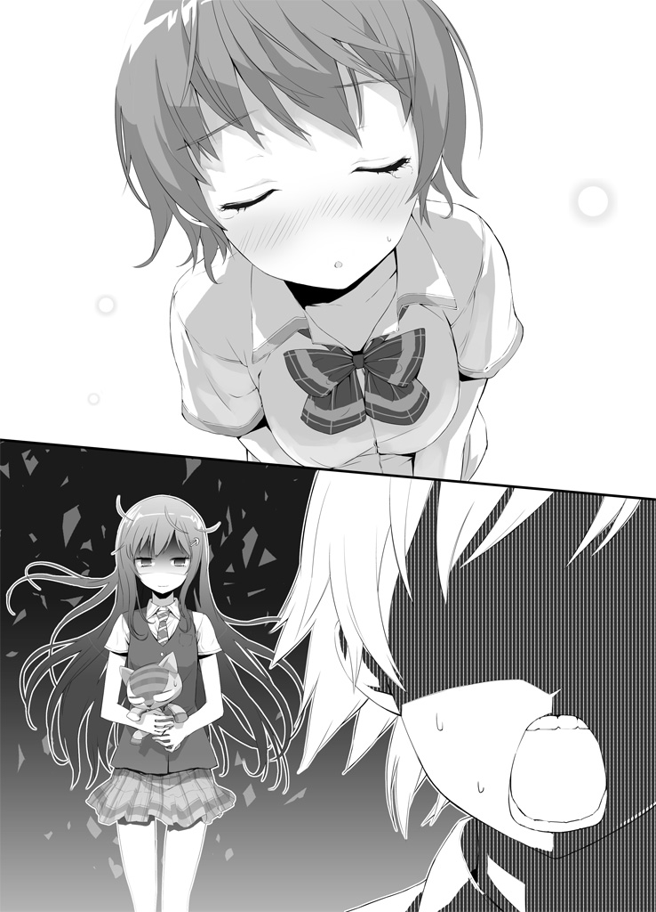
「わかったじゃねええええ！ ちょっ、やめ、やめて、ああああああああああ！ 混ぜないで！ 地球と混ぜないでああああああああああ!!」
──こうして、俺達の名前は元通りになり。
俺は晴れて地球と一つになった。
10．
後日、ジョゼ子は天川から詳しく思念糸のことを教えられたらしい。ポコは目を覚ましたとき暴走時のほとんどの記憶を忘れてしまっていて、結局その後もジョゼ子の家で飼い犬として過ごすことになったそうだ。暴走の原因もよくわからないまま......それなのに天川がポコを野放しにしているってのがかなり気になるんだけども。やっぱり、本当は何かを知っていて隠してるんじゃないかと思う。まあ、それであいつがポコをほっといても問題ないって判断したんなら、それはそれで大丈夫なんだろうって気もするんだけどな。
でも、できれば隠し事なんてしないで、全部を教えて欲しいと思う。なんか信用されてねーんじゃねえかって気分になるから......。
そんな感じで大体は丸く収まったんだけど、一つ、今回のことで、どうにも収拾できなかった厄介な問題が残ってしまった。それが何なのかは、まあ、多分わかっていただけると思うんですが......。
「よ、陽太......くん。おはよ」
朝、いつものように家を出ると、玄関先で待ち構えていたようにジョゼ子が出迎えてくれた。
「よ、ようジョゼ子。今日も早いな」
現在時刻午前八時。この時間にここに居るのはおかしいだろジョゼ子。家結構遠いぞ？ お前こっから自分の学校の始業時間に間に合うのかよ？
「勘違いしないでよ。学校に行くついでにちょっと寄ってあげようと思っただけだから」
「いや～それはちょっと無理があるんじゃ......」
完全に反対方向にある俺の家にどうやってついでに寄るというのか。
「う、うるさいわね！ いいからこれ受け取ってよ！」
言いつつお弁当箱を差し出してくるジョゼ子。お礼を言ってありがたく受け取る俺。
ここのところ毎日これが続いている。お弁当を作る手間、ここまで届ける手間を考えたら本当に頭が下がるし、味は（プロレベルの光里には及ばないとしても）十分おいしいし、それにジョゼ子のような可愛い女の子がわざわざ手作りしてくれているかと思うと嬉しい気持ちにはなるんだけれども、しかしそれ以上に、罪悪感と外堀から埋められてる感が押し寄せてきて素直に喜べない。どうすればいいんだ。
これはもう正直に、「お前と結婚する気はない」と言った方がいいのだろうか。
──だって俺にはもう、光里がいるじゃないか。
......よし。
「なあ、ジョゼ子。この間の......その、名字を変えるってことについて話があるんだ」
「ああ、そのことだったら、もういいの」
「え？」
予想外の返事だ。驚く俺を差し置いて、ジョゼ子は穏やかな表情で続ける。
「気づいちゃったのよね。名字のことなんかでバカにされたって気にすることないって。誰に何を言われようがあたしはあたしだし、......それに、本当に大切な人があたしのこと認めてくれてたら、他のやつらなんてもうどーでもいい」
「......そっか。吹っ切れたんだな」
「うん。陽太くんのお陰よ。だからもう、無理に名字を変えてもらわなくてもいいわ」
「そうか......」
......何だ。やっぱりいい子じゃないか。ちゃんとわかってくれてたんだな。じゃあこのお弁当はあれか、この前のことに対する純粋なお礼みたいなものか。いやーよかった、一時はこれ本当に十八になった途端に責任取って結婚させられるんじゃないかと──
「名字が変わらなくても、結婚してもらえるだけで十分だから」
「おおおおっとここに来てまさかの急ハンドル──!?」
なんでだよ！ 何で結婚の方が残っちゃってんだよ！ 思いっきり手段が目的になっちゃってるよ！ 下克上だよ！
「そ、それじゃあねっ！」
ジョゼ子は身を翻し、恥ずかしそうに走り去ってしまった。
一人残された俺は、呆然と立ちすくみながら、光里への言い訳をどうしようかと、そればかりを考えて空を見上げるしかなかった。
第三話 影の時を生きる者
１．
「戦国時代とかはさ、数え年の十五歳で元服......つまり成人したんだろ？ つーことは、今十五......お前は十六か。の俺らは、昔だったらもう大人に分類されてたんだよな」
六月も中旬、梅雨前線のお陰でやまない雨の帰り道、影時との雑談の最中に、こんなことが話題に上った。
「そういうことになるな」
「考えてみるとすげーよな。俺らみたいなガキが戦場で殺し合いしてたんだぜ？ 昔の武士って一体どんな気持ちで初陣に臨んでたんだろうなぁ。マジな命のやりとりなんて、平和な時代に生まれた俺には想像もつかねえ」
「ふむ、確かにな。しかし当時はそれが当たり前だったのだろう。高等教育の最中、つまりまだ子どもであるように育てられている現代の十五歳と、その年齢にはもう成人であるよう育てられていた時代の十五歳では、やはり精神年齢が相当違ったのではないか？」
「そうか......そうだよな。想像つかなくて当たり前か」
「ちなみにぃ！ 当時はぁっ！ 十代前半で結婚する女性も多かったそうだぞぉっ！」
「いきなりテンションを上げるな」
キャラがわかりやすすぎるわ。
「合法的にＪＣやＪＫと結婚できるなんて夢のようだな！」
「やめろこのロリコン野郎！ 大体当時には中学高校なんて概念もねーよ！」
しかし影時は、俺のその台詞を待ち構えていたかのように、巣にかかった獲物にい寄る蜘蛛の如き表情で俺を見る。
「......なんだよ」
「陽太、俺だって高校生なんだ、同じ高校生に欲情したらロリコンというのはおかしいだろう？」
「欲情っていうな、言葉を選べ」
「その理論だと、宇月さんに発情しているお前もロリコンということになってしまうなぁ」
「大して変わってねーよ！ 大体、俺は別に光里に発情してなんか......」
......いや。
否定しようかとも思ったが──しかし、これでは今までと変わらない。
いつまでも光里への気持ちをごまかしていたら何も進まない。......ジョゼ子のタイムリミットという謎の障害も生まれてしまったことだし、いい加減俺も自分の素直な気持ちに向き合わなければ......。いや、でも今はまだ......。
黙ってしまった俺を見て影時はため息をついた。
「まあ、つまりそういうことだ。例え中学高校生の未成熟な体に性的な興奮を覚えていたとしても、『自分も同年代』という免罪符がある限りはロリコンとは見なされない！ だから大丈夫☆」
「何一つ大丈夫じゃねえ！ 年齢を免罪符にする未成年って最高にたち悪いぞ！」
「陽太、お前は俺を誤解している。ロリコンというのは幼い少女にしか性的興奮を覚えない者のことを言うが、俺は違う──俺は汚れを知らない少女も好きだが、酸いも甘いも知りつくした熟女だってうっほほーいだ」
「お前のストライクゾーンはどっからどこまでなんだ......」
「勿論ゆりかごから墓場まで」
「社会保障クラス!?」
「ストライクゾーンとは年齢ではなく性別で決めるものだろう」
「ハイ名言頂きました......」
そうだよな。デッドボールを快感だと思うような奴にストライクゾーンの話を振ったのが間違いだった。
「......なあ影時、どうして昔と今で成人と見なされる年齢が変わったんだと思う？」
「ん？ それは難しい質問だな。色々な理由があるのだろうが、俺が思うにその一つは、職業選択が自由になったからではないか」
何だか思ったよりも難しそうな答えが返って来てしまった。
「その心は？」
「昔は、農家に生まれたら農民、武家に生まれたら武士、惑星べジータに生まれたら戦闘民族というように、生まれた瞬間から将来の職業が決まっていたわけだろう？」
「三番目は職業じゃねえ」
そもそも実在してねえし。
「だから子ども達は、決まった職業にとって必要なことのみを学べば良かったわけだ。農民が武家の教養を身につける必要はなく、またその権利もなかった。しかし今は、少なくともここ現代日本においては、そうではない。将来何になるのかは原則として個人の自由。これは多分、とても幸福なことなのだと思うが、しかし自由であるということは、裏を返せば様々な可能性の中から自分に合ったものを選ぶという選択の義務が課せられるということだ。そのためには、やはりそれ相応の時間を掛けて学ばなければいけないことが多いのだろう。ほら、いわゆる──大人になるための猶予期間というやつだ。俺達は昔の人々に比べて、どんな大人になるか、ということを自分で決めるための時間を多く貰っている、と言うことだと思うよ」
「ふーん。なるほど」
確かに、影時の言うことは尤もだ。小学校中学校と義務教育を受けて、人によってはその後も高校大学で勉強をするのは、自分の将来に投資するためだろう。
だけど、それはそれで大変だよな。影時の言った通り、俺達は昔の人と違って、農家に生まれたから農家にならなきゃいけないわけじゃない。頑張れば誰だって総理大臣になれる可能性を持っているわけだ──理屈の上では。
でも多すぎる選択肢の中から一つを選ぶのって難しい。それに、選んだその職業に、将来確実に自分が就けるとも限らないし。子どもの頃の「将来の夢」が叶った人なんて、現実にはほとんどいないんだから。
「ちなみにさ、影時。お前将来の夢って何？」
「パンツになることだな」
「瞬時にそれが出て来るお前はやっぱり超越的な変態だわ！」
早すぎるし迷いがなさすぎるだろ返答に！ 脊髄反射だったよ今の！
「最近、女の子のパンツの真の素晴らしさを知るには自分自身がそれになるのが一番手っ取り早いんじゃないかと思い始めてな......」
「そうかい。まーなれるもんならなってみろ」
「そんなわけで参考までにお前のパンツを見せてくれないか？」
「嫌だよ！」
気色悪い！ っていうか男のパンツで参考になるのか!?
「違う、男のパンツが参考になるのではなく、お前のパンツだからこそ参考にできるのだ！」
「何でお前はちょくちょくそういうこと言うの!? 冗談だよな？ まさかマジで俺のことそういう目で見てるんじゃ......」
「まあ、真面目に答えるとだな」
コホン、と影時は咳払いをして。
「俺は警察官になりたいと思っている」
「真面目に答えろやボケがァアアア！」
「ええー!? い、いや真面目だったじゃないか！ 何でそんなに怒るんだ！」
「お前は警察に厄介になる方だろうが！ 変態に公権力を持たせるほどこの国は馬鹿じゃねえよ！」
「酷すぎる！」
「......まあ、七十五センチの歩幅で約五千三百三十三万歩譲って、その夢が本当だったとして」
「地球一周分も譲ってもらわなければ駄目なのか......？」
「警察官になるための努力って、既に何かしてたりすんのか？」
「努力と呼べるようなものかはわからんが、一応少しずつ法律の勉強はしているぞ」
「マジで!?」
嘘だろおい。こいつが陰でそんな努力をしているなんて全然知らなかった。精々「校内の安全を守るため定期的に女子更衣室を点検している」とかそんなんだと......。
「あと刑事ドラマも逃さず見ている」
「いやそれは要らねえと思うけど」
「特撮と萌え系のアニメと魔法少女モノのアニメと中二病系のアニメと、あとワールドビジネスサテライトも毎日欠かさず見ている」
「なぜ最後だけちょっとカッコつけた」
しかし......そうなのか......。
俺は途端に影時が大人っぽく見えて来てしまって、並んで歩いている自分の情けなさとのギャップに頭を抱えた。ちゃんと夢に向かって努力とかしてんのか......。
実際のところ、影時が警察官ってのは天職なんじゃないかと思う。真面目な話。
変態であることを除けば、こいつは正義感も強いし運動神経もいいし、ここぞと言うときの頭も切れるからな......変態であることを除けば。
「お前の方はどうなんだ、陽太。将来の夢はあるのか？」
「う......まあ、あるっちゃあるんだけど......」
すげー漠然としてるし、全然人に誇れるようなものじゃないし、それに夢のためになんか頑張ってるってわけでもないし......。
「何だ、教えてくれよ。俺のだけ聞いておいて自分は答えないつもりか？」
「わ、わかったよ。でも......笑うんじゃねえぞ？」
「フゥーッハッハッハッハァ！」
「いやこの時点で笑うのはおかしいだろ！」
しかもなぜ高笑い!?
「......お前、うちの家族が仲いいこと知ってるだろ」
「もちろんだとも。特にお前と茜ちゃんの仲の良さにはいつも嫉妬していた。なぜ俺には可愛い妹ではなく悪魔のような姉しかいないのだろうと」
「軽い言い合いならしょっちゅうだけど、ガチで家族げんかしたことなんて一回もねえんだよ、うち。......そんで、俺はそれってすげー幸せなことなんじゃねえかって思って」
うちは大して裕福でもないし、家族みんな特別に優れた能力を持ってるわけでもない。それでも、父さんも母さんも兄貴も茜もみんないいやつで、家族みんながそれぞれ互いを思いやって暮らしている──そんな風に思える雰囲気がいつも家の中に漂っている。
俺はそれが、多分人間にとって一番幸せなことなんだろうと思う。そしてそんな幸せを自覚できている俺は、ひょっとしたら世界で一番幸せ者なんじゃないかとたまに思ったりする。
「だから俺の夢は、......ありふれてるけど、幸せな家庭を築くことだよ。自分の奥さんや子どもに『幸せだ』って思ってもらえるような、そんな家庭をいつか築きたい」
高校に入ったばっかのガキが下校中に一体何を語ってんだろうか、と言ってて自分で恥ずかしくなった。
「だーやっぱ今のなし！ 忘れろ！」
「何だ、何を恥ずかしがることがある。いい夢じゃないか陽太」
「ぐ......」
「がんばれよ陽太。是非夢を叶えて宇月さんを幸せにしてやれ」
「な......何で結婚相手が光里に決まってんだよ！ まだわかんねえじゃねえか！」
「おいおい陽太、日本では重婚は禁止されているんだぞ？ いくらジョゼ子さんが捨てがたいからといってそんな外道な真似は......」
「そういう意味じゃねえ！」
「はっはっは」
ひとしきり笑った後、影時は不意に真剣な表情になって俺を見つめてきた。
「？ なんだよ影時」
「陽太。やっぱりお前はいいやつだな」
「はあ？ 急にどうしたんだお前、なんか気持ち悪りーな」
「そんなことはない。俺はいつだって気持ちいいぞ」
「いやその返しはおかしいから！」
「お前のようなやつが居るから、俺の夢に意味が生まれるんだ」
そう言いながら、影時は何か覚悟を決めた目で遠くを見ていた。その表情に俺は何となく気圧されて、無言で隣を歩きながら影時が再び口を開くのを待っていると、影時は不意に足を留めた。
「......っと、そうだった陽太。今日は用事があってな。悪いがここでお別れだ」
「そうなのか？ 用事ってなんだよ？」
「ふっ......詳しくは秘密だ」
「何だよ。隠し事かよ」
「妙齢の美人に会ってくる、とだけ言っておこう」
そう残して、影時は天むすの思念力を使い、ふっとその場から消えてしまった。
２．
それは、魔王と化した佐藤優子との壮絶な戦いの翌日。ゴールデンウィークが明けた、最初の登校日の放課後のことだった。
「話がある」
電話でそう告げられ、話の詳しい内容を明かされないまま、影時は天川に呼び出された。
「ああ、みなまで言うな天川。話とは何のことか、大体想像がついている」
「......へえ。それじゃ君の想像もとい妄想とやらを聞かせてもらおうか」
「実はお前が女の子で激しい戦いを経て俺に抱いた乙女な恋心が膨らみすぎてもう男である振りをしていられなくなったことを俺に告白しようとして」
顔面の表面積が二倍になるくらい殴られた。
「とりあえずついてきてくれ」と歩き出した天川の後をついて行くと、駅前通りに立ち並ぶビル群──と言っても、一介の地方都市に過ぎない和田川市では、十階あれば高い方だった──の中の一つ、古びた六階建てのビルに、影時は足を踏み入れることになった。煤けた外観にそぐわず、入り口は最新式のオートロック。中は驚くほど小綺麗で、明るい色の壁には染み一つない。
「天川、ここは......まさか......」
「思念紡績協会の拠点だ。第十三支部にあたる」
天川は当然のように告げ、驚く影時に見向きもしないでさっさと足を進めていく。
「ちょ、ちょっと待ってくれ。なぜ俺をこんなところに......」
「詳しいことはこの中の人に聞いてくれ」
そう言って天川が足を止めたのは、三階の「会議室」と書かれた扉の前だった。
「僕の上司が君に会いたがってるんだよ、真上君。中で待ってる」
「お、俺一人で入るのか？」
「ああ」
天川は勝手に影時の髪に手を突っ込んで、中に潜んでいた天むすをつまみ出してしまった。
「何をするんだ天川君」
抗議する天むすを手の中に収め、天川は「悪いね」と微笑んだ。
「君は外で待っててくれ。入ってもらうのは真上君一人だけなんだ」
急な展開に、流石の影時も少々尻込む。
「お、おい天川。いくら何でも説明が少なすぎるんじゃないか。これじゃ俺には何が何だか──」
「ちなみに会議室の中で待っている僕の上司はスーツ姿の妙齢の美女だ」
「行ってきまーす！」
元気よく突入した影時は、直後にそれが天川の罠だったことを知った──
「よーう。お前さんが真上影時か」
──ヤクザ映画の親分並みにドスの効いた声が耳に届いた瞬間に。
愕然とした影時の目に飛び込んできたのは、会議室の奥、楕円卓の向こう側に座る中年男性の姿だった。無精髭に短く刈られた硬そうな髪、そして眼鏡越しにぎょろりと動くカメレオンのような眼。
ＴＨＥ・悪人面である。妙齢の美女の対極に位置する存在だ。
「まあ座れや」
と男性は片手で無精髭をさすりながらもう片方の手で影時に椅子を示した。影時は「ど、どうも......」と断ってぎこちなく腰を下ろす。
「まず自己紹介からだな。俺は金輪平助。ここ思念紡績協会第十三支部の支部長をやってる」
支部長というより組長である。思念紡績協会は、まさかヤクザのような組織なのだろうか？ 思念糸という未知なる脅威から人々を守っているという天川の言葉から、もっとスタイリッシュな地下組織──某セカイ系アニメの特務機関のようなものを想像していたのだが。
「お前さん達には、天川が世話になってるな。それにコンや天むす、それから佐藤優子の件といい、迷惑を掛けた」
「い、いえ」
金輪は影時や陽太が関わった事件を知っているらしい。天川の上司なのだから当然といえば当然だが──
「......それで、俺は今日なぜここに呼ばれたのでしょうか」
こんな強面の中年男性と悠長に世間話などしたくない。とっとと片付けて帰りたいと思った影時は自分から本題に足を踏み入れた。だが金輪は笑って、
「まあまあそう焦るなよ。本題に入る前に、一つ──訊いておきたいことがある」
金輪の眼球が動き、眼鏡の上フレーム越しに三白眼で影時を見た。最高に嬉しくない上目遣いである。
一体何を訊かれるのか。不意に訪れた沈黙に緊張が走り、影時の頬を脂汗が伝った。
......やがて、金輪の口が開き──
「お前さん、巨乳と貧乳のどっちが好きだ？」
──その瞬間、込み上げてきた猛烈な怒りを抑えきれず、影時は両手で楕円卓を叩いておもむろに立ち上がった。突然の影時の行動に金輪は動揺を隠せない。
「お、おいどうした。何いきなり興奮してんだよ？」
「巨乳と貧乳のどちらが好きか、だと？ あなたはそんな愚かな質問を俺に──≪おっぱい同好会名誉会長≫であるこの真上影時に投げかけようというのですか？」
「ルビに大分無理があるみてえだが......？」
「その質問には答えられない、答える意味も価値もない。それがわからないあなたに敢えて俺から言うことがあるとすれば、ただ一つ──」
両手を広げ胸を張り、影時は圧倒的な威厳を纏って金輪平助を睨み付けた。
「あなたは、『食べ物と飲み物のどちらが好きか』という質問に答える意味と価値を見い出せますか？」
金輪が爆笑した。
「レベルたっけえなあこいつ！ おい真上よ、ちなみに巨乳と貧乳のどっちが食べ物でどっちが飲み物だ？」
「なめ応えのある方が食べ物でしゃぶり応えのある方が飲み物です」
「わかんねーよ！ どっちだよ！」
腹を抱えて笑い転げる金輪の姿に、影時の憤りは更に増していく。
なんだこの男は。そんないい加減な気持ちでおっぱいの話をするつもりだったのか。
絶対に許せん。
「俺はおっぱいの価値を『大きさ』という単位で測ることに関して懐疑的な立場を取っています！ 大きいおっぱいと小さいおっぱいの価値を同一の尺度で測ることなど出来るはずがないのです！ 大きいおっぱいは大きいことに価値があり、小さいおっぱいは小さいことに価値がある！ 食料と飲料、そのどちらもがなければ人が生きていけないように、大きいおっぱいと小さいおっぱいの両方がなければ我々は生きていけないのです！」
「別に生きてはいけるだろうよ！」
「そもそも『巨乳』と『貧乳』というラベルの貼り方も俺は気に入らない！ 『巨乳』はまだいいでしょう、『巨』という言葉のイメージを考えれば多少女性を褒める言葉としては可憐さに欠ける印象はありますがそれでもポジティブなニュアンスが強いことに違いはありません。しかし！ 『貧乳』は許せない！ なにゆえこの世で最も尊き概念の一つである女性のおっぱいに関する形容表現に『貧しい』という圧倒的にネガティブな意味しか持ち得ないこの漢字を用いたのか、この言葉を作った人間を俺は小一時間問い詰めてやりたい！ こんなことだから世間一般に『大きいおっぱいは良い、小さいおっぱいは悪い』というイメージが浸透して世の小さいおっぱいを持つ素敵な女性達が全く理不尽で残酷で不毛な悩みを抱えて苦しむことになるのです！」
「いや......そんなこと俺に言われても......」
「その意味では『貧乳はステータスだ』という、かの有名な格言に関してもその功罪について言及せねばならんでしょう。この格言は小さいおっぱいというものが決して大きいおっぱいの同一直線上にある劣化版ではなくそれ自体に独立的な尊い価値を持つという真理を世間一般にわかりやすく提示し認識させたという点では間違いなく評価できます。しかし逆に考えれば、この格言はそもそも世間に蔓延っていた巨乳信仰に対するアンチテーゼという面が強く『貧乳』という言葉に込められていたネガティブなイメージを払拭する形で世に生み出されたものであり、『貧乳』の地位を上げることには成功しましたが逆にその出発点がマイナスの象限であることを固定化してしまいどうしても『胸が小さくても気にすることはないんだよ』というニュアンスを伝えるものに成らざるを得なかったのです。この格言にもし、『貧乳』ではなく『小さいおっぱい』を肯定的に表する言葉が使われていたら──例えば小さいおっぱいのことを可愛い乳『可愛乳』と呼んで『可愛乳はステータスだ』という格言として人口に膾炙していたならばひょっとしたら歴史は変わっていたかもしれません」
「は、はあ......そうですか......」
「要するに俺が言いたかったことは『貧乳』という言葉を即刻この世から排除すべきだということです。こんな字面からしておっぱいの小さな女性を精神的に追い詰めるような言葉を平気で使うやつの気が俺には知れません。その意味でも先ほどのあなたの質問は俺にとって答える価値と意味のないものだったのです」
影時の怒濤の熱弁に金輪は完全に引いていたが、しかしそれでも話題を振った身として同じ土俵で話をしてやろうと考えたのか、「しかしよぉ」と返してこう続けた。
「お前さんの言いたいことはわかるが、『胸が小さいことを気にして悩んでる姿が可愛い』っつー意見もあるんだぜ？ その辺お前はどうなんだ真上、貧乳であることを悩む女の子ってのは」
「メッチャ萌えます」
「萌えんのかい！ さんざん『貧乳という言葉で女性を苦しめてはいけない』とかなんとか語っておいて、節操ねえなお前！」
「そういうことではありません！ 確かにメッチャ萌えますがそれはそれ、自分の趣味嗜好のために女性を苦しめることは人間としてこの世で最も恥ずべき罪悪です！ 仮にいくら萌えるプレイだったとしても、それが女性を苦しめてしまうのだとしたら絶対に行ってはいけないのです！」
「人間と書いて変態と読むな。少数派だから変態っていうんだろうが」
「何を言っているのですか。少なくともこの場にいる人間は全て変態でしょう」
「俺を勝手に変態認定するんじゃねえ！」
「いや、人を呼び出しておいて真っ先に性的嗜好を聞き出そうとするあなたを変態以外の何と呼べばいいのですか」
「......ったく、人がせっかく『強面だけどお茶目ですよ』ってとこを見せてやろうと思ってお前が好きそうな話題を振ってやったのに、ここまでの食いつきは予想外だったぜ」
金輪はため息をついて背もたれに体を預けた。
「もういいやめんどくせえ。緊張は取れたみたいだからそれでよしとするわ」
......なんだ、意外に気を遣ってくれていたのか。どうやら金輪という男は、第一印象で感じたよりは話しやすい相手であるようだ。
「ほっとくといつまでも乳の話してそうだからな。本題に入るぞ」
元々こっちはそれを望んでいたのだ──影時は素直に頷いた。
「単刀直入に言う。お前、俺達の仲間にならねえか」
「......は？ 仲間？」
「思念紡績協会の一員として働かねえかってことだ」
どくん、と心臓が高鳴った。
「それは、天川のようにということですか？」
「そんな感じだと思ってくれりゃあいい」
天川のように。思念紡績協会で。
思念糸という未知なる脅威から人々を守っている組織で──働く。
「なぜ俺が......というか、俺だけが？」
誘われた理由については、大体予想できる。天むすと思念契約を結んで思念力を得た影時は、実質天川や火威といった思念能力者と遜色ない働きが可能だ。うぬぼれるつもりはないが、実際、影時は火威や優子が起こした事件においてはそれなりの活躍を見せている。
ただそれは、同じことが陽太にも言えるはずなのだ。それなのに今日ここに呼ばれたのは、影時一人。その理由は何なのか。
「お前には才能があるからだ」
「さ、才能？ 何のですか？」
「思念力を操る才能だよ」
戸惑う影時に、金輪はほくそ笑む。
「お前、火威の阿呆が街中の娘さんからかっぱらった下着を全部持ち主に返しただろ。お前はそれができた理由を、『街中の女性が毎日どんな下着を穿いているか把握してたから』とかとんでもねえこと言ってたらしいけど......それ、嘘だよな。物理的に不可能だろそんなの」
「うぐ......！ いや、あれはギャグキャラ補正というやつでして......」
「お前は、天むすの思念力の痕跡をトレースしたんだ。下着に残されたわずかな思念糸の残滓から、瞬間移動する前の位置──つまり、誰がその下着を穿いていたのかを割り出し、そしてもとの位置に瞬間移動させ直した」
「あのですね......そういう、ギャグで流していた部分を改めて掘り返して指摘されるのは、俺としてはその......何というか......」
非常に恥ずかしい。マジシャンが披露したマジックの種明かしを聞かされるようなものだろう。
「お前は自分でわかってねえみたいだけどな。思念力を手に入れたばっかでそんな芸当が出来るやつなんて、普通いねえんだよ。日渡とお前を比べりゃ一目瞭然だ」
「それが、俺が呼ばれて陽太が呼ばれなかった理由ですか」
「それもあるが、一番の理由は性格的な問題だ。お前は向いてるが、日渡は向いていない。仲の良いお前さんが一番わかってるだろ？」
「......」
確かにそれはその通りだろう。
陽太は影時と違い、厨二病ではない。非日常の興奮よりも日常の小さな幸せを望み、何より争いごとを好まない。今までの事件だって、半ば積極的に首を突っ込んでいった影時と違い、陽太はいつも運悪く事件の中心にいて、仕方なく巻き込まれてしまっただけだ。
あいつに天川のような仕事が務まるとは思えない。
一方──自分はどうだ？
思念糸という未知なる脅威から人知れず皆を守る地下組織に入るなんて、憧れていた厨二的シチュエーションそのものじゃないか。
しかも、「お前には才能がある」なんて主人公のようなお墨付きをもらってしまって。
興奮していないと言ったら嘘になる。血が滾っていないと言ったら──大嘘になる。
だがしかし、そんな不謹慎な想いとともに安易に首を縦に振っていいものだろうか。
これはもっと時間を掛けて、真剣に深刻に考えなければいけない問題ではないのだろうか──。
「ま、今すぐ答えを出さなくてもいいさ」
見計らったようなタイミングで、金輪はまさに影時が欲しかった言葉を発した。
「しばらく時間をやる。お前自身の人生に関わることだ、よく考えてこい。返事はいつでもいいし、どっちでもいい。乗ろうが乗るまいが、お前の自由だ」
「......わかりました。ありがとうございます」
言ってから、別に礼を言う必要はなかったな、と気づいた。いつの間にか金輪の言葉を好意的に捉えるようになっている──そう誘導させられている。これは金輪の話法なのだろう。
侮れないな、と思いながら一礼して、影時は席を立った。
「あーそうだ、一つ言い忘れてた」
と、扉に向かう影時の背を金輪の声が引き留める。
「お前、あんまり天むすの思念力を高度な使い方しない方がいいぞ。せいぜい元々あいつが持ってた『自分自身と、周囲の人間の身につけているものを瞬間移動させる』くらいのレベルに抑えといた方がいい。火威とやり合ったときみたいな無茶はするな」
「それはなぜですか？」
「天むすの寿命が縮む」
予期せぬ返答に、影時は息をのんだ。
「じゅ......寿命？ 思念塊の？」
「そりゃ思念塊にだって寿命はあるさ。思念力を使えば使うほど体を構成している思念糸が摩耗していき、最後は人格を保っていられずに霧散する。尤も、思念糸だってただ減っていくだけじゃなくてちゃんと回復もしてるから、かーなり長生きではあるんだが......しかし、天むすの場合は特別だ」
金輪の眉間がきつくなる。
「思念契約を行った場合の適合者と思念塊の関係ってのは、パイロットとマシンの関係に似てるんだ。日渡とコンの場合、マシンの性能に対してパイロットがまだまだ未熟だ。日渡が無茶な運転をしない......つーかできねえから、コンにかかる負担は少なく、あいつは長生き出来るだろう。だがお前と天むすの場合、パイロットの技術にマシンの性能が全然追いついてねえんだよ。お前が無茶な運転をする度、天むすの思念糸が回復速度を遙かに上回るペースで摩耗していく。そんなことを続けてたら天むすの人格はあっという間に消滅してただのハムスターに戻っちまうだろうよ」
「な......」
そんなバカな。影時は混乱する頭で──しかし金輪の論理の矛盾点に気づき、縋るようにそこを突いた。
「だとしたら、あなたが俺を思念紡績協会に誘った理由が崩れるでしょう！ あなたは俺の、思念糸を操作する才能を評価して仲間に誘ったと言った......しかし、俺がその才能を発揮すれば天むすが早死にし、結果として俺も思念力を失うのなら、俺を誘う意味がないじゃないですか！」
「本音を言うとな」
と、金輪は低い声を更に低くして告げた。
「俺は別にそれでいいんだ。なぜなら、天むすが消えてくれれば、その瞬間にお前さん自身の思念力が目覚めて、お前は思念能力者になるからだ」
これもまた予想外の通達だった。影時は思考停止したまま、ただ金輪の言葉を繰り返す。
「俺自身の......思念力？」
「わかんねえか？ それだけ思念力を操作する才能があるってことは、お前自身が思念能力者になる素養を持ってるってことだよ。しかも、お前自身の心から生まれた思念力は、天むすの借り物にすぎない今の思念力よりも間違いなく強力だ。俺が期待してるのは、むしろそっちの力の方なんだよ」
「......」
──なるほど。影時は、天川が天むすをこの場に同席させなかった理由にやっと思い至った。
こんな話を、聞かせられるわけがない。
「......今の話が本当なら、なぜあなたは俺に天むすの寿命を延ばすような忠告したのですか。そんなことをしたら、あなたの期待している俺自身の力とやらはいつまで経っても目覚めない」
「生き物が思念塊になった場合、そいつの寿命はもとの生き物の寿命に縛られる。肉体が朽ちたらそこまでだからな。......お前ならこれでわかるだろう」
影時はゆっくりと頷いた。
ハムスターの寿命はせいぜい二、三年。つまり必然的に、天むすもそれ以上の時間を生きることは出来ない。
それくらいなら待ってやる、ということだろう。それくらい金輪は、三年先に手に入るであろう影時自身の思念力に期待しているのだ。
──だが。
そんな話を聞かされて、俺は一体どうすればいい。
金輪はそれ以上何も言わず、影時もそれ以上何も訊かず、黙って会議室を後にした。
３．
「む？ どうした、顔色が悪いぞ影時君」
会議室の外で出迎えてくれた天むすの第一声はそれだった。まあ......あんな話の後でいい顔色をしていられるわけがないので、その指摘は予想済みだったが。
なので影時は、予定通りの言葉を返す。
「天川にだまされたのだ......。何が妙齢の美人だ、中にいたのは中年のヤクザではないか。あんなのと顔をつきあわせていれば、そりゃあ顔色も悪くなる」
「で、話は纏まったのかい」
天川が探るような目つきで尋ねてくる。影時は首を振った。
「纏まるわけがないだろう。突然すぎて焦るばかりだった」
「何の話だったんだ、影時君？」
「中年男性に思念紡績協会に入らないかと誘われた。中年男性にな」
「そこは強調するところなのか......？」
「しばらく考えさせてくれと言ってきた。話はそれだけだ」
「その割には随分長くかかっていたようだが」
「おっぱいについて説教していたんだよ」
天むすはまだ何か引っかかっていたようだが、もうそれ以上話したくなかった影時は強引に話題を切り上げ、天川とともにさっさと足を進めて思念紡績協会第十三支部を後にした。
「今日は時間を取らせて悪かったね」
別れ際、やけに素直な天川の様子が少しおかしかった。
「例の件、前向きに検討しておいてくれ。それじゃ」
「待ってくれ、天川。一つ訊きたいことがある」
「......何？ 悪いけど、女性の胸に関して僕が君と語り合えることなんて──」
「あの金輪平助という男は、信用できるのか？」
影時の質問に、天川は虚を衝かれたように眼を丸くし、やがて苦笑いの表情にシフトした。
「それを僕に訊く？ 僕は彼の部下だよ。僕の答えを君が信用できるのか？」
「できるさ。お前の言うことなら」
「......」
天川は苛立たしげにため息をついた。
「......彼がどんな人間なのかは、未だに僕もよく掴めていない。だから信用できるかどうかも答えられない。ただ──信用するしかない場面で、信用せざるを得ない言葉を吐いてくる男だってことは確かだよ」
それは確かに影時も感じたことだ。天川の見解もそう遠くはないらしい。
「そうか......。わかった、ありがとう。参考にする」
「じゃあね」
素っ気なく言って、天川は踵を返した。
「思念力を使わないのか？ 影時君」
天川と別れ、決して軽いとは言えない足取りで帰り道を歩く影時に、天むすは遠慮がちにそう尋ねてきた。
「ああ......何となくな。ちょっと歩きたい気分なんだ」
歩きたい気分というのは嘘ではなかったが、それ以上に、金輪の話を聞いてしまった後では天むすの思念力を使いづらいという気持ちが強かった。
「そうか。......それで、どうするつもりなんだ影時君」
「......わからない」
衝撃的な情報を多く知りすぎて、頭が──というよりも、心がうまく回らない。
だが確かなことがある。今影時の心の多くの部分を支配して渦巻いている感情は、非日常の世界に自分の力が求められていることに対する高揚感ではなく、天むすとの時間に期限をつけられたことに対する動揺だ。
まさかこんなに早く別れのタイムリミットを突きつけられるとは。この小さな相棒と出会って、まだ半月も経っていないというのに。
まだ二年、三年もある──と考えることは、影時にはできなかった。友に宣告された余命を、たとえそれが何年であろうとも、「長い」と肯定的に考えることが出来る人間がいるだろうか？
しかし──ハムスターの寿命が短いことは最初から知っていたはずだ。それを知っていて人は小動物を飼うし、また影時も、天むすが──ついこの間までそうだったように──ただのハムスターであったのならば、二、三年のうちに別れが来ることを普通に受け入れていただろう。
ここまで動揺するのは、やはり天むすが人格を持ってしまったからだ。ダンディーな声と落ち着いた喋り方で、生まれたばかりのはずなのにまるで人生の大先輩であるかのように話しかけてくる天むすを、おもしろいやつだと気に入ってしまったからだ。
──だめだ、やめよう。
天むすのことを考えるのは後回しだ。今の精神状態では暗い方にしか思考が向いていかない。今考えるべきなのは、当面の問題──思念紡績協会の一員になるか否か、だ。
「天むす。お前はどう思う」
──何を訊いているんだ俺は。
縋るように天むすにそう尋ねてしまったことを、影時は直後に自嘲した。
意図的にほとんど情報を与えていないというのに、意見だけ求めてどうする。天むすに一体何を期待しているというのだ。
しかし生真面目な相棒は、ふむ、と人間のように腕（前足？）を組んで、
「私の意見か。そうだな、私は──」
「あー！」
と、前方から聞こえてきた幼い声が天むすの言葉を遮った。
見ると、一人の幼女がいた。貴重な野生の幼女である。それほど幅のあるわけではない住宅街の道路だったが、きちんと右側を歩いている。まじめで可愛い幼女である。連れ帰って育てたい幼女である。
幼女は泣き出しそうな顔で空中を見上げていた。視線の先には、少女の手を離れてどんどん高度を上げていく赤い風船が。うっかり手放してしまったのだろう。生憎と木にも電線にも引っかかることはなく、風船は五月の晴れ空に吸い込まれるように上っていく。
可愛い──ではなくて、かわいそうに。どれ取ってやろう、と手を風船の方へかざしたところで、影時の脳裏に金輪の言葉がよぎった。
──あんまり天むすの思念力を高度な使い方しない方がいいぞ。寿命が縮む。
「......っ！」
反射的に硬直し、影時は思念力を使えなかった。
「どうした、影時君」
肩の上から天むすに声を掛けられ、はっと我に返る。
「取ってやらないのか？」
そう言った天むすの声色は優しかったが、じっと影時を見つめる黒くて円らな瞳は、はまるで影時を諫めているようだった。
君らしくない、と。
──ああ、そうだな天むす。お前はそういうやつだった。
「何を言う。この俺が幼女に優しくないわけがないだろう！」
影時は跳んだ。そして空中で風船をキャッチし、地上に舞い戻って幼女に手渡してやった。幼女はひまわりのような笑顔になった。
「お兄ちゃんすごいねー！ ありがとう！」
「はっはっはどういたしまして可愛いお嬢さん。ところで君はこの近所の子かな？ 何か困っていることがあったらお兄さんが力になるよ？ ん？ 何か買ってあげようか。あ、それともお兄さんのうちに遊びに来るかい？ 一緒にお風呂に入ったり──」
「影時君、それ以上の優しさは犯罪だ」
「せっかく意見を求めてもらったのにまるで役に立たない答えしか返せなくてすまないが、私に言えることは一つだけだ──影時君。君の好きにするといい」
風船をしっかり握りしめ元気に手を振って去って行く幼女を眺めてほんわかしていると、天むすはそう切り出した。
「君とのつきあいはまだ短いが、しかし私は君がどれほど思慮深く、正義感の強い人間かはわかっているつもりだ。だから、君が私に多くを語ろうとしない理由も敢えて訊きはしない。君には君の考えがあってそうしているのだと信じているからだ」
「天むす......」
「君は君が正しいと思う道を選べばいい。きっとそれこそが最も多くの人を笑顔にする道だ。そして忘れないでくれ。君がどんな選択を取ろうとも、私は君について行く。この命がある限り」
心の中に温かい力が満ちていく気がした。
そうだ──こんな単純なことだった。
どれだけ悩んでみても、結局は何かを選ばなくてはならないのなら、自分が正しいと思った道を選べばいい。
そう気づくと同時に、金輪の話を聞いてから無意識に天むすの存在を「重荷」に感じていたことを、影時は恥じた。
いつか必然として別れが訪れるとしても、それを今から重荷に感じていてどうする。天むすは重荷じゃない。俺の相棒だ。
「ありがとう、天むす」
「参考になったかな？」
「ああ。お陰で決心がついた」
決心はついた──が、金輪に返事をするのはまだ先だ。少し確かめたいことがある。
そして。その前にやらなければならないこともある。
「天むす」
影時は天むすを掌の上に乗せ、その小さな姿を真正面から見つめた。
「お前に伝えなければならないことがある」
「......なんだね？」
「お前は──」
深呼吸をし、意を決して、影時は口を開いた。
「お前は、自分の寿命を知っているか？」
４．
六月中旬のとある雨の日。
学校からの帰り道、陽太と別れた影時は、再び思念紡績協会第十三支部を訪れていた。
「あれから一ヶ月以上か。随分時間がかかったな。......で、ようやく返事が決まったか？」
前回と同じように、金輪は会議室で影時を待っていた。前回と同じ、世界一嬉しくない上目遣いの三白眼がぎょろりと影時の姿を射貫く。
「はい」
「じゃー早速聞かせてもらえるか？」
「俺は警察官になるのが夢でした」
「......ん？」
影時の突拍子もない台詞に、金輪は片眉を上げる。
「自分で言うのも何ですが、俺は体格にも運動神経にも恵まれています。自分のこの才能を、たくさんの人達を守るために使いたいとずっと思っていました。だから警察官になりたかったんです」
「立派な夢だな」
「それと同じだと思いました。もしも俺に、思念糸を操作する才能があるのだとしたら、俺はそれを人々を守るために使いたい。あなた達の仲間に加わることでそれができるのなら、俺は喜んでそうします」
「......そう、か」
金輪はフッと口角をあげた。
「仲間になってくれるか。よく決心してくれたな、ありがてえ。これからよろしく頼──」
金輪から握手を求めて差し出された腕を、影時はやんわりとかわした。
「いえ、まだそうとは言ってません」
「何!? おいおいなんだそりゃ、さっきの話はどこいったんだよ？」
「俺は、あなた達の仲間に加わることで俺の力を人々を守るために使えるなら仲間になる、と言っただけです。一番重要なその部分が保証されていなければ仲間にはなりません」
金輪は苦笑して肩を竦める。
「何だ、お前さん俺達を疑ってんのか？」
「慎重になっているだけです。何せ、俺が最も守りたいと思っている親友と、その親友の想い人に関わることですから」
──潮が引くように、金輪の表情から笑みが消えた。
影時は構わず続ける。
「この一ヶ月、俺があなたへの返答を渋っていたのは、確かめたいことがあったからです」
「へえ。で、その確かめたいことってのは、ちゃんと確かめられたのかい？」
影時は頷いた。
「四月に初めて思念糸に関わってからこの二ヶ月間で、俺達は五つの思念糸に関係する事件に巻き込まれました。コンの事件、天むすの事件、優子嬢の事件、宇月さんの夢の事件、そしてジョゼ子さんの名前の事件。そして妙なことに、これらの五つの事件、その全ての中心にいるのは、思念契約主でも思念能力者でもない、ただの女の子であるはずの......宇月光里さんなんですよ」
金輪の表情に変化はない。しかし、不自然な無言が影時に続きを促していた。
「コンは宇月さんを守るため陽太と思念契約を結び、宇月さんがクラスで飼おうと連れてきた天むすは思念塊化し、宇月さんを母親代わりに懐いた優子嬢は思念糸が暴走、契約主でないにも関わらず宇月さんはコンの思念力を発動させて夢と現実を混ぜ、宇月さんに抱かれていたポコは不自然に凶暴化して俺達に襲いかかってきた。五つの事件全てで、騒動の原因になっているのは、宇月さんが『可愛い』と思った思念塊或いは思念能力者だったんです。......これを偶然と呼ぶのは、流石に無理があるでしょう」
「それで？ お前は何が言いたいんだ、真上？」
「あなた達が隠していることを全て話してもらいたい」
影時は怯むことも臆すこともなく、きっぱりと告げた。
「少なくとも一つ目と二つ目、それから五つ目の事件に思念紡績協会の作為を感じるんですよ、俺は。わざと事件を起こして、或いはわざと火種を大きくして、何かを試しているように思える。その真意を教えてもらえなければ、俺はあなたを信用することはできません」
「......答えられねえっつったらどうするよ」
「答えてもらえるまで全力で暴れます」
「ははっ......なんだお前、殴り込みする気で来たのかよ？ だがいいのか、お前が全力を出したら天むすは──」
「私は承知済みだ」
と、天むすは影時の髪から飛び出して肩に降りた。
「影時君は全て話してくれた。私の寿命のことも、影時君の才能に私の力がついていけないことも」
「だが、それでも天むすは、俺が正義を貫くためならば全力を出すことを躊躇するなと言ってくれた。俺はその気持ちに応える。だから──」
鋭い眼光で金輪を射貫き、影時は堂々と宣言した。
「俺を敵に回したくないのなら、全てを話してもらおう」
それからしばらくの間、影時と金輪は無言で睨み合っていたが、やがて、糸が切れたように金輪が爆笑し始めた。
「いつかはこうなると思ってたが......それにしても早すぎるぜ、こりゃあ。なあ真上よ。どうして気がついた？ 俺達がわざと騒動を起こして宇月光里の力を試してるってことに」
「......天川のお陰です」
「天川の？」
金輪が意外そうに眉をひそめる。ということはやはり、あれは上司の指示ではなく、天川の独断だったのだろう。
「あいつがわかりやすくボロを出す素振りを見せてくれたから気づきました。どう考えても無理がある説明をしたり、饒舌なはずなのにあるポイントで途端に歯切れが悪くなったり。あいつならもっとうまく隠せたはずなのに、......だからそれは、敢えて俺に気づかせるためのメッセージだったんだと思いました」
「ああ、なるほどな......。ま、天川はああ見えて『善人好き』だから、過剰にお前さん達に肩入れしちまっても仕方ねえか」
金輪は笑いながら、胸ポケットから煙草を取り出して火をつけた。......予想していた以上の余裕っぷりを見せられて影時は内心戸惑っていたが、金輪は構わずに「わかったよ」と言った。
「やっぱり面白いやつだよ、オメーは。わかった、いいぜ。お前の男気と友情に免じて洗いざらい話してやる。ただし──」
金輪は煙を吐き、極悪な面で笑った。
「後悔すんなよ。せっかく隠してやってたのを、お前が暴いて話させたんだからな」
第四話 乙女の戦い
「もっと女子力が欲しい」
「......はあ」
梅雨まっただ中にありながら珍しく晴れたとある日曜日の午後。
ちょっと遠出して一緒に駅前の大型デパートに遊びに行った帰り、休憩がてら立ち寄った喫茶店で、そまりは光里にそんなことを相談された。
「ジョシ力って......え？ 『女の子としての力』の方？ 『死を助ける力』ではなく？」
「私は死神なの？」
「いやごめん。でも、どしたの急に」
そまりの知っている光里は女子力などというものを気にする女ではない。話題に上ったことすら初めてだ。
「友達に、『光里ちゃんは女子力が低い』って言われて」
光里は少し恥ずかしそうに視線を逸らして、呟くように言った。
「あー......まあ......」
苦笑いするそまり。光里は不服そうだ。
「自分では結構女子力高いつもりだったのに」
「ええ!? うっそぉ!? マジで!?」
「なんでそんなに驚くの」
どんどん光里の頬が膨らんでいく。そういう見た目の可愛らしさという点では確かに女子力は高いかもしれないが、しかし、残念なことに中身は......。
「じゃー逆に聞きたいんだけど、光里はなんで自分が女子力高いと思ってたわけ？ つーかあんた女子力って何なのかわかってる？」
「......あんまりよくわからないけど、女の子らしさ、みたいなことじゃないの？」
「あー多分そんな感じじゃない？ 実はあたしもよくわかってないんだよねぇ。なんかこの言葉って、なんとなーくそれっぽい漠然とした意味ばっかり広まってて、ホントに意味理解して使ってる人とかいなそうじゃん？」
「『役不足』みたいな感じ？」
「いやそれはただの誤用が多い言葉......って、話逸れてる。要するにあんたは、女子力が低い＝女の子らしさが足りないって言われたけれども、自分では結構女の子らしいつもりだったからムッときたと」
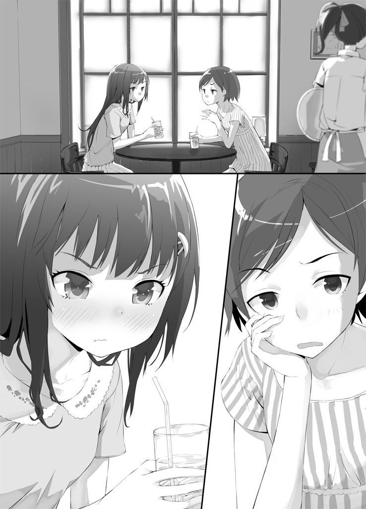
光里はストローでオレンジジュースをすすりながら頷いた。
「いや、まあ女の子らしいっちゃ女の子らしいかもしれないけど......うーん」
そまりはわかりやすい話がないか少し考えて、
「例えばさ。女子力を一から十まででランク付けしたとするじゃん？ 日渡の妹の、茜ちゃんだっけ？ あの子を女子力ＭＡＸの十として、あたしが三ぐらいだとすると」
「そまりちゃんはそんなに低くないよ。三・一はあるよ、女子力」
「何の意味もないフォローありがとう。でもあんたの女子力は一から十のどこにも存在しないから」
「何、そまりちゃん。まさか私の女子力はマイナスだとでも言いたいの？」
「いや、虚数」
「虚数!?」
「あんたの女子力はルートマイナス一。宇月光里は、この世でただ一人の『虚数の女子力を持つ女』よ」
「な......なんでちょっとかっこよく言うの。どういうこと、そまりちゃん」
「だってあんたの女子力なんて測定不能だもの。理論上は存在するけれど誰にも観測することが出来ない。ダークマターと似たようなものよ」
「ダークマター!? どんどん話を壮大にしないでよ、普通にあるよ女子力！」
いつになくムキになる光里が可愛らしくて、そまりはにやにやしながら「具体的には？」と挑発した。
「料理得意だし」
「満漢全席一人で作れるもんね。もう女子力ってレベルじゃないわよね」
「掃除とか洗濯とか裁縫とか、家事全般得意だし。近所のスーパーの食品最安値も覚えてるし」
「それは女子力じゃなくて主婦力ね」
「可愛いもの大好きだし」
「病的にね」
「母性本能強いし」
「理性が本能に負けてるよね」
「......よく想像妊娠するし！」
「それはただの病気」
「逆再生語も喋れるしっ！」
「それもただの病気」
「っ......！」
ネタが尽きてしまったようで、光里は唇を噛んで悔しそうに俯いた。
「そもそも今みたいな例を挙げて『自分は女子力が高い』と思ってる時点で女子力低いと思うわよ。後半ほとんど病気ばっかりだったじゃない」
「病気病気言わないで......」
光里はため息をついた。珍しく弱気である。
やっぱり今日の光里は変だ。
そもそも「他人からの評価」というものに頓着がなく、究極的にマイペースなことが一番の特徴だったはずの光里が、「女子力が低い」と言われたことを気にしている時点でおかしい。
「なんかあったの、光里？」
「......実は......」
光里が語った内容に驚き、そまりは思わず声を大きくしてしまった。
「日渡に惚れた女の子ォ!? え、マジで!? 誰!?」
「黒石女子高の一年生の子」
「そ......それ確かなの？ なんか勘違いとかじゃなくて？」
「毎朝陽ちゃんの家にお弁当を届けに来ながら求婚してる」
「うわ......また凄い子に惚れられたな。それにしても意外にモテんのね、日渡」
主に変人に、という感想は心の中にしまっておいた。
「可愛くて優しくていい子なの。ちょっと変わってるけど」
「あんたがそれを言うのもどうかと思うけど......ははーんなるほど、わかっちゃったわ。つまりあんた、その子に日渡を取られるんじゃないかって心配なんでしょ」
光里は恥ずかしそうに小さく頷いた。
「それでガラにもなく女子力とか気にしちゃってみた、と」
「......うん」
「バカねー。あの日渡がそんなん気にすると思うの？」
「......しないと思う。理屈ではわかってるんだけど、でも......」
光里はストローの袋をいじりながら、もじもじと、恋する乙女にしか出来ない甘酸っぱい表情でため息をつく。
「何か......自分が女の子としてあの子に劣ってるんじゃないかって思うと、凄く不安になるの。私にない魅力があの子にあって、それが原因で陽ちゃんがあの子のこと好きになっちゃったらって思うと......」
「......」
何だこの乙女全開の生き物は。超可愛い。
そまりの知る普段の傍若無人な光里とのギャップが大きすぎて凄いきゅんと来る。
「......何でにやにやしてるのそまりちゃん」
人が真剣に悩んでるのに、と頬を膨らます光里。
「ごめんごめん。いや、でも大丈夫だと思うよ？」
実際、そまりには日渡が光里以外の女子になびくところなど想像ができない。日渡と光里が二人でいると、何というかもう、それだけで空気が完結してしまっているというか......決して部外者が入り込めないような絆を感じさせるのだ。和田川高校の生徒達の間では、もう日渡と光里は半ば公式夫婦のように見なされてしまっている。だから本来なら男子が放っておかないような美少女である光里もあまり告白のターゲットにされていないのである。きっとその日渡に惚れているという女の子は、他校の生徒であるために、日渡と光里の醸し出す完璧な空気感をまだ目の当たりにしたことがないのだろう。
「そうかな......」
「そうだって。もしそれでも心配なら、今のあんたの乙女な様子を見せつけてやればいいのよ。そうすりゃ落ちない男なんていないって」
茶化すようにそう言ってやると、光里は照れた様子で俯いてしまった。
──なんだ、光里のやつ、ちゃんと女の子してんじゃない。
普段がどんな変人でも、恋をすれば誰だって普通の女の子になるというわけだ。
光里の変わりっぷりは見ていて少しうらやましくさえある。今はまだ恋愛にあまり興味のなかったそまりでさえも、恋をするのもいいかも、と思えてしまうほどだ。
「それにしても、その日渡に惚れたっていう黒石女子高の子にもちょっと会ってみたいなー。あんたがライバル視するくらいだから、きっと凄い可愛いんだろうし──」
と。
そのとき、光里の視線が、そまりを飛び越えて斜め後ろの空間、喫茶店の通路の方に釘付けになった。驚愕がありありと見て取れる表情で。
そまりが不思議に思い、つられて光里の視線の先を追うと、そこには、同年代の一人の女の子が立っていた。
セミショートの柔らかそうな緩くウェーブのかかった髪。やや強気そうな、しかし抜群に整った容姿。真っ白なワンピースにタイトなジーンズを合わせた服装は、スマートで足の長いモデルのような彼女の体形を殊更魅力的に見せている。
綺麗な子、とそまりが見とれていると、女の子の方も驚いた顔で視線を貼り付けていた──ただしそまりではなく、光里に。
「こ......こんなところで会うなんて、奇遇ね。えっと......光里さん、だっけ？」
女の子が光里を見てぎこちなく笑い、それに合わせて光里もさらにへたくそな笑顔を返す。
「ほ、本当だね。ジョゼ子さん」
──ジョゼコさん？ おかしな名前だ。あだ名だろうか？
「ちょっと買い物に来て、その帰りなの」
「あ、そうなんだ。私たちもだよ。こっちは友達の曽根鞠子ちゃん。そまりちゃんって呼んであげて」
流れで紹介されて、そまりは戸惑いながらも「どうも、そまりです」と笑いかけた。
「あ、あたしは助是子。工口助是子って言います。よろしくそまりさん。えっと......せっかくだから、ご一緒してもいい？」
「もちろん！ どうぞどうぞ」
そまりと光里は二人がけのテーブルに座っていたので、ジョゼ子は椅子を一つ持ってきてそまりの隣に座った。
光里と向かい合う形である。
それにしても、この子は一体誰なのだろう。学校で見たことがないから、他校の子だろうか。お世辞にも社交的とは言えず、交友関係も狭い光里に、そうそう他校に友達を作る機会はないと思うのだけれど（小中の同級生とか以外）。
しばらく光里もジョゼ子も所在なさそうに互いに目を逸らしていたが（そまりは気まずくて凄く嫌だった）、やがてジョゼ子は決意したようにキッと目つきを鋭くし、「あの」と光里を正面から見つめた。
「あなたとこうやってまともに話をするのは、これが初めてよね」
「......そう、だね」
「本当は、こんなところでこんなこと訊かない方がいいのはわかってるんだけど......でも、ずっと気になってたことだから、悪いけど訊かせてもらいます」
──あれ？ なにこのちょっとやばめな雰囲気？
そまりは圧倒的なアウェー感と緊張感を覚えながら、ジョゼ子の次の言葉を待った。
「陽太くんとあなたのこと、教えて欲しい」
ぴくん、と光里の全身がわずかに震え。
そまりは息をのんで、ようやく今の状況を把握した。
──まさか......この子がその、「日渡に惚れてる女の子」!?
なんという偶然だろう。噂をすれば影とはまさにこのことだ。
そしてちょっとした修羅場である。そまりはどうすればいいのかわからず戸惑うしかなかった。
「単刀直入に訊くわ。あなたは、陽太くんの何なの？」
うわーいきなり核心に突っ込むかこの子！ どうやら見た目通り勝ち気な性格をしているらしい。それに比べ──さっきまでの光里の様子を思い出し、そまりはまずいなと思った。
いつもの傲岸不遜な光里ならともかく、今の光里は乙女モード全開で大分控えめな性格になっている。そんなところにこんな鋭い刃を突き立てられたら、ひょっとしたらそのうち泣かされてしまうのではないか──というそまりの心配は、
杞憂だった。
「答えて。あなたは陽太くんの何？」
「神ですが何か？」
「ええ────!?」
びっくりである。
この状況で、ノータイムで「自分は神です」と答えられる乙女が、果たして地球上に他に存在するだろうか。
そまりはつい光里の顔を二度見してしまった。すると光里の表情は、さっきまでの乙女モードとは打って変わった、いつもの理由がわからない絶対的な自信を湛えた、目の据わった変人のものに戻っていた。
「え、か、神？ 何それ、どういうこと？」
ジョゼ子が当然の困惑を見せ、光里が当然のように答える。
「私は陽ちゃんにとって宗教上の信仰対象であるということだよ」
「うそこけ──！」
突っ込まざるを得なかった。
強がって「彼女です」と見栄を張っちゃうくらいならそまりも見逃しただろう。しかしこれはいくら何でも大風呂敷を広げすぎである。本人も多分たたむ気がない。使い捨ての大風呂敷だ。
「大体そういうあなたは陽ちゃんの何なの、ジョゼ子さん」
強気に攻める光里。その威圧感に、ジョゼ子がわずかに怯む。
「あ、あたしは......まだただの友達だけど。でも、いつか絶対陽太くんのお嫁さんになるんだから！」
おおう、凄いなこの子。ためらいなくそう言い放ったジョゼ子にそまりは感心さえした。しかし光里の眼は冷たくなるばかりである。
「そう。でもそれは私が居る限り無理だよ。勝ちたければあなたも宗教を立ち上げるんだね」
「その必要はないと思うけどなー......」
苦笑しながら突っ込みを入れるそまりの存在は、もう光里とジョゼ子の眼中にはないらしい。
「な、何よ......随分余裕じゃない」
「だって私は陽ちゃんの幼なじみだもの」
「え？ そ、そうなの？」
「うん。だから陽ちゃんのこと小さい頃からずっと知ってるよ。羨ましいでしょ」
「う、うう......いいなぁ......」
「陽ちゃんのちっちゃいころの写真とかも、うちにはいっぱいあるよ。見たい？」
「み、見たい。......今度遊びに行ってもいい？」
「どうぞどうぞ」
「なんで微妙に和解してんのあんたら......？」
しかしこんな美少女二人に取り合ってもらえるなんて、日渡はなんて幸せ者なのだろう。真上あたりがこのことを知ったら、嫉妬で発狂しかねない。
「ま、まあ遊びに行くことはおいといて......。確かにあなたの方が陽太くんと過ごした時間は長いかもしれないわ。でも、陽太くんのこと好きな気持ちは絶対あたしの方が大きいわよ！ 今だって、陽太くんのこと考えるだけで胸が張り裂けそうになるもん！」
「私だって陽ちゃんのことを考えるだけでいつもおっぱいが取れそうになってるよ」
「おっぱいが取れそうになるのはマズイでしょ!?」
さっきから光里の反論はてんで見当外れである。そこが光里らしさなのだが。
ところが、光里の意味不明な反論に、なぜかジョゼ子は顔を真っ赤にしてしまった。
「お、おっぱいが取れそうに......？ まさかあなた、既に陽太くんにおっぱいを、取れそうになるまで揉みしだかれたことが......？」
「何想像してんのあんた!?」
「愚問だね。陽ちゃんは隙あらば私の胸を揉みしだこうと虎視眈々だし、私の胸は陽ちゃんに育ててもらったと言っても過言ではないほどだよ」
「あんたも妙なとこで見栄をはるなーっ！ 嬉しいの!? そんなとこで勝ってあんたホントに嬉しいの!?」
「くっ......くぅっ......！」
光里は見せつけるように胸を張り、ジョゼ子は自分の胸と光里のそれを比べて悔しそうに瞳を潤ませ、バン！ とテーブルを叩いて立ち上がった。
「そ......そうやって余裕ぶってられるのも今のうちだから！ いつか絶対、あたしの胸だって陽太くんに育ててもらうんだからー！」
と、ジョゼ子は周りの客や店員の視線を全て引きつける酷い捨て台詞を吐いて逃げ出してしまった。
その後ろ姿を店の外まで見送ってから、光里は安堵したように細く長い息を吐いた。
「緊張した......」
「いや......絶好調だったと思いますよ光里お嬢様」
変態的な舌鋒の鋭さだった。泣かされてしまうのではないかという心配はむしろ相手にしてやるべきだった。
「微妙に泣いてたけど、大丈夫かなあの子......」
そのとき、急に喫茶店のドアが開いて、ジョゼ子が戻ってきた。決まり悪そうな顔で驚く光里とそまりの前に立って、携帯を開き、
「あの、遊びに行く約束とか、したいから......連絡先を......」
「......あ、ああはい。どうぞ」
そうしてジョゼ子は光里とアドレスを交換し、ついでにそまりとも交換して、今度こそすごすごと帰っていった。
「なかなか面白い子ね、ジョゼ子さんって」
あれがライバルとは、光里も大変だ。......一番大変なのは間違いなく日渡だろうけど。
一方光里はというと、携帯──おそらく画面はジョゼ子のアドレスだろう──を見ながら、何とも言いがたい微妙な表情をしていた。
「何その顔？」
「......非常に複雑な気分」
「なんでよ？」
「だって......」
光里はパタン、と携帯を閉じた。
「ジョゼ子さん、悪い人じゃないんだもん」
「まあ、確かにね」
そまりはまだジョゼ子のことをほとんど知らないが、しかしさっきまでのやりとりを見ていれば彼女が純情で一途な女の子だということはわかる。純情で一途──その点だけを見れば光里とジョゼ子はよく似ている。
「陽ちゃんを好きになってくれる人がいるのは嬉しいんだよ。陽ちゃんのいいところをわかってくれる人がいてくれるのは嬉しい。......私も、その気持ちわかるし」
「ほほう。可愛いこと言うねえあんた」
「でも、陽ちゃんを他の女の子に取られるのは嫌だ」
「なるほど。その二つの気持ちのジレンマ？」
光里は首を振った。
「それだけじゃない。こんなことになっちゃったら、最終的に陽ちゃんは最低どっちか一人、振らなきゃいけないでしょ？ 私か、ジョゼ子さんか、或いは両方か」
「まあ......ねぇ」
一応は同意したが、そまりには光里が日渡に振られる状況をまるで想像できなかった。どちらか選ぶとなったら──多分日渡は迷わないんじゃないだろうか。
「そうなったら勿論振られた方は傷つくし、選ばれた方だって罪悪感で素直に喜べないよ。何より、そんな絶対に誰かを傷つけなきゃいけない状況に立たされた陽ちゃんが──一番かわいそう。陽ちゃんは優しいから、そういうの凄く辛いはずだから」
「光里......」
「陽ちゃんプラナリア的に分裂しないかなぁ......」
「そこでそういう猟奇的な方に発想が向かっちゃうのがあんたらしいところよね」
全く......。最後の一言がなければ可愛らしい乙女なのに。
「それは仕方ないんじゃないの？ ちゃんと選ばなきゃいけないのは好きになられた方の責任よ。美少女二人に言い寄られるって幸せを味わったんだから、それくらいの覚悟は見せなさいってなもんでしょ」
「そ、そうかな」
「そうよ。それよかあんた、そんな心配してる暇があったらとっとと告白して落としちゃいなさいよ。ジョゼ子さんの方はなんかもう躊躇いがないわよ。ぼさっとしてたら先越されるんじゃないの？」
「う......」
光里が気まずそうに眼を逸らした。
「この前のお見舞いの件で、ちょっとは進展したんでしょ？」
「ま、まあ少しは......」
「具体的には？」
「いにあるくらにぬおしｈさわこうぇくぢｈｃうけっともうぃうおごぬおふおｓ......」
「おおっと何言ってるかわかんないぞぉ」
このテンパリ具合から見て、相当際どいところまでいったのか。赤くなって俯く光里の頭を、そまりはよしよしと撫でてやった。
「頑張れ。あんたは可愛いよ。私が保証する」
「......ホント？」
「ほんとほんと」
「じゃあ逆にそまりちゃんの可愛さは私が保証するよ」
「いや別にいいわよ。なんか取り引きみたいになっちゃったじゃない。......ま、あたしはあんたのこと応援してるから、頑張って成就させなさい」
「......うん。ありがとう、そまりちゃん」
そう言って光里は、思わず抱きしめたくなるような笑顔で微笑み──そのとき、光里の携帯が鳴った。
ディスプレイに表示された相手の名前を見て、途端に恋する乙女の表情になった光里は、居住まいを正してから通話ボタンを押した。
「はい、もしもし──」
第五話 変わり果てた姿に
「あ」
「げ」
暇な休日のことだった。
せっかく六月中旬にしては珍しく天気良い休日だってのに、光里はそまりと出かけてるらしいし、影時は......天川と一緒になんかやってるらしい（影時は最近妙に付き合いが悪い）。
そんなわけで、せっかく天気が良いのに家に籠もっているのももったいないと思って、俺は一人自転車に乗って駅前まで来ていたのだが、駅前商店街の入り口で意外なやつに出くわしたのだ。
「お前こんなとこで何してんだよ、コン」
喋って動く、緑色のパッチワークの猫ぬいぐるみ──コンである。
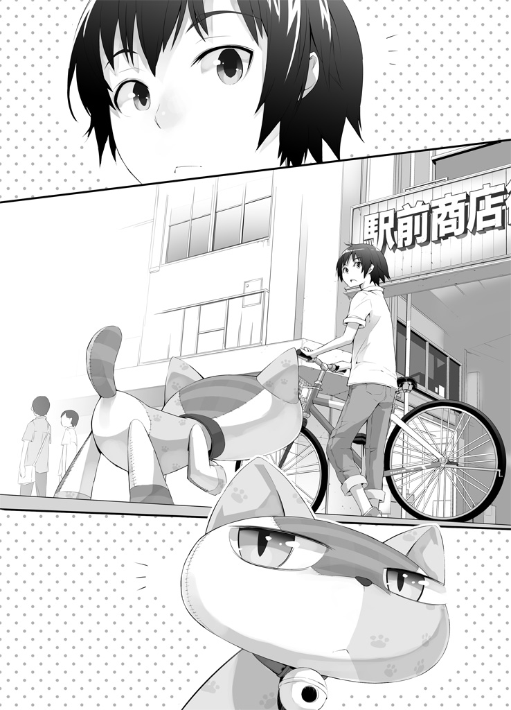
こいつはしょっちゅう猫のふりをして外を歩き回ったり（明らかにぬいぐるみだが光里
が「こういう種類の猫です」と押し通している）、近所の子ども達と遊んだりしているのだが、それにしても光里の家からここまでは自転車でも二十分ほどかかる。コンの行動範囲がこんなに広いなんて知らなかった。
「......別に何でもいいだろ」
コンは決まり悪そうな表情で呟き、くるりと踵を返して俺から離れていってしまった。
「お、おいちょっと待てよ。何で逃げるんだよ」
俺はサドルから降り、自転車を押してコンの後を追った。
「ついてくんな」
「そんな寂しいこと言うなよ、相棒だろ」
「......」
だっ！ と、いきなりコンがダッシュで逃げ出した。
「あ！ おい待て！」
慌てて追いかけたが、コンは狭い民家の塀の間に入り込んでしまった。猫ならではの逃げ道である。
「くっそ～、逃がしたか......！」
非常に悔しい。
いや、別にコンを捕まえるのにこんな必死になる必要は全然ないんだけど......。
また独りぼっちになってしまった。肩を落として元来た道に戻ろうとしたら、
「ふぎゃー！」
突然コンの悲鳴が。慌てて引き返し、狭い塀の間に体を潜り込ませて何とか通り抜け、民家の反対側に出てみると、コンが用水路にはまって動けなくなっていた。今日はたまたま晴れているとは言え、昨日までの梅雨で用水路の水かさはかなり増している。全身が布と綿で出来ているコンは、水をよく吸うので、落ちたが最後出られなくなってしまったのだろう。
「お......おいおい大丈夫か？」
「......うぷ」
引き上げてやると、案の定全身たぷたぷになっていた。とりあえず絞ってみたが、あまり清潔とは言えないドブ用水路の水を全身に吸い込んでしまったのはコン本人にとっても気分の良いことではないらしい。
洗濯してやるからうちに来い、と言うと、コンは素直に頷いて自転車のカゴに収まった。
風呂場で洗濯桶にぬるま湯を注いで洗剤を溶かし、その中にコンを入れてわしゃわしゃ洗ってやった。
「それで、お前は結局何であんなとこにいたんだ？ 探険か？」
「しつけーなー。大したことじゃねーって」
「無理に聞き出したいわけじゃねえけど......例えば今日みたいに川に落ちたら、お前自力じゃ戻ってこれねえじゃねーか。黙って遠くに遊びに行ってお前が帰ってこなかったら、光里は凄い心配するぞ？ せめてあいつには、どこに行くかくらい言っとけよ」
光里の名前をだしたら、コンは途端に黙ってしまった。やっぱりこいつの弱点は変わらないな。
「......光里には言うなよ」
と、コンが突然呟いた。
「ん？」
「......オレの、前の持ち主を捜してた」
思わず手が止まった。
「前の......って、お前がただのぬいぐるみだったころの......？」
「そうだよ」
「お前、その頃のこと覚えてんのか？」
確か前に見たコンの記憶だと、こいつが思念塊になったのはゴミ捨て場に捨てられていたときだったはず。つまりこいつが人間と同じような人格とか心とかを手に入れたときには既に前の持ち主からは手放された後だったわけで......。
「覚えてるわけねーだろ。でも、なんか、見たら思い出しそうな気がするんだ」
「......見つけたらどうするんだ？」
まさか。
「前の持ち主のところに戻りたいなんて──」
「そんなわけねーだろ」
コンはあっさり否定した。
「向こうはオレを捨てたんだし」
「......そ、そうか。そりゃそうだ」
光里より可愛がってくれる持ち主（飼い主？）もいないだろうし。ほっとした。
「ただのぬいぐるみだった頃のことなんかそもそも覚えてないから、前の持ち主なんて別に何とも思ってない。だけど、自分でも何でなのかよくわかんねーけど、ちょっとだけ見てみたい。だから捜してた」
「コン......」
緑色のパッチワークで出来た猫のぬいぐるみ......なんて見たことがない。おそらくコンは、既製品ではなく手作りだ。だったらコンの前の持ち主は、コンの生みの親でもあることになる。
──そう考えたら、自分を捨てた相手でも、コンが理由もわからないままで会いたいと思う理由がわかるような気がした。
「俺も手伝ってやるよ、コン」
「は？ いやいらねーよ。大体手伝うって何をどう手伝うんだよ」
「う......それは......」
確かに、顔も名前もわからず、手がかりもない、コンの直感だけが頼りの人捜しで俺に一体何ができるのか。
「と、とにかくなんか手伝うって。いないよりいたほうがマシだろ。少なくともお前が川に落ちても拾ってやるぞ」
「......勝手にしろよ」
そう答えたコンの表情は泡に隠れて見えなかったが、声色で何となく予想がついた。
「勝手にするさ。どうせ暇だしな。じゃーはやいとこ洗濯終わらせて捜しに──」
泡の中で何かが指に引っかかった感触がして、ブチッ、と嫌な音が聞こえた。
「......え？」
桶から手を引き上げて見てみると、小さな黒いビーズが指の間にあった。
「......これって......」
もしかしなくても......。
「うぎゃ────っ！ は、鼻が取れたぁあああ！ 陽太てめえ何しやがった───！」
「わ─────っ！ ご、ごめんわざとじゃねえ！ 後で直すから！ 許して！」
その後、俺は何とかコンの鼻を回復させようと頑張ってみたが、家庭科の通信簿に二以下の成績しかもらったことのない俺の腕ではどうにもならなかった。口を縫い付けて目のビーズを取ってしまったところでコンが「何の拷問だこれーっ！」と喚きだし、俺は途方に暮れて光里に助けを求めた。
「あ、もしもし光里!? せっかくそまりと遊んでるとこゴメン、ちょっと大至急助けて欲しいことがあって──！」
あとがき
二巻のタイトルがどうなるのかと気になっていらした皆さん。すみません、至って普通に「Ｔとパンツとイイ話２」です。がっかりさせてしまいましたか？
「Ｘとおっぱいとイイ話」、「Ｘと下半身とイイ話」、「おっぱいと下半身とイイ話」などの候補も上がっていたのですが、「どれもやべえわ」ということで無難に「Ｔとパンツとイイ話２」になりました。前述の候補三つと比べるとこれでも無難に見えてくるから不思議ですね。というわけでＴもパンツもイイ話も出てこない「Ｔとパンツとイイ話２」でした。お楽しみいただけましたでしょうか。
二作目にして既にあとがきのネタがないので、昔やっていたアルバイトの話でもしましょう。二年ほど前、私は塾講師のバイトをしていました。私は要領が悪くて、とても優秀なバイトではなかったのですが、しかしなぜか塾長（五十代男性）には気に入られていて、よくバイトの帰りに食事に連れて行っていただいたりしていました。まあ（本当は根暗ですが）そこそこ人当たりがいい振りをしてたまに場を盛り上げるジョークめいたものを飛ばしていたからかな、と思っていたら、あるとき「本村、ウナギ食いに行くぞ」と誘われました。貧乏学生がウナギを食べられる機会なんて滅多にないので、これ幸いとばかりに私はありがたく塾長について行くことにしました。
ところが、お店に入ってから、塾長の様子が何かおかしくなり始めました。唐突に、
「本村、お前から見て俺はどんな人間に見える？」
と質問してきて、私が答えに困っていると、
「わかった、じゃあ質問を変えよう。お前から見て俺はどんな人間像に見える？」
いや質問変わってないです、みたいなよくわからないやり取りの後、塾長は
「要するに、お前とこうやって一緒に飯を食えるのは幸せだってことなんだよ」
と話を纏めました。濃厚に漂い始めた不穏な気配に私はおののき、早くこの空間を脱出したくてもくもくとウナギを頬張っていました。すると塾長はそんな私の顔を見て、
「本村......お前、綺麗な唇してるなぁ」
※し て ま せ ん 。
人生は一期一会。出会いと別れの連続です。皆さんも気をつけましょう。
それでは今回はこの辺りで。もし本作を気に入っていただけましたら、次のお話もよろしくお願いいたします。
平成二十四年一月 本村大志
著者
本村大志（もとむら・たいし）
北海道札幌市在住。静岡県焼津市出身。
寝ぼけてトマトジュースを飲んでいる途中に「よく振ってからお飲みください」の文字に気づき、ふたを開けたまま思い切り振る。部屋が殺人現場のようになる。
イラストレーター
前田理想（まえだ・りそう）
神奈川県在住。海近く山近く。
音楽やラジオを聞く傍らマンガやイラストを描いております。
ブログ 「リソウキョウ」
http://maedarisou.blog136.fc2.com/
Ｔとパンツとイイ話２
著 者......本村大志
発行人......三坂泰二
発行所......株式会社メディアファクトリー
http://www.mediafactory.co.jp/
２０１２年４月３０日 電子書籍版 ver.1.0
無断で複製・複写・放送・データ配信などをすることは、かたくお断りいたします。
©2011 Renji Koiwai